Andhero mein hi rehne ke faisle kiye Toh roshni mein aake ye man kahan lage? Hai itni baar toota yakeen apno se Toh aitbaar kispe nazar ye phir kare Tu mushkurana chahe toh darne lagta hai Kahin nazar teri hi khushi ko na lage Kisi pe aana chahein toh kaise aaye dil Ye phir se tootne ke khayaal se dare.. -Dream Note . . . . . Found this after creating by mistake and forgetting it 3 years ago
Nov 23, 2021 3:34 am
You don't know the pain, Brother, I've been in pain for 7 long years! That's the thing, you haven't seen the other side again by your own eyes, you never felt any other emotion to get up and change yourself, you behave like there's nothing ahead of you and made it your comfort zone because of the stories all over the world. You tend to believe one day you're gonna die so why the big house or the women of your dream, because you consider yourself same as them just by being in their shoes for few months. You don't know the pain till you're out of your comfort zone and create your own home. Being born privileged is a blessing, but it's a curse if your dreams are just kept in the Pandora box and not opening because of foretold stories of the box. Find your Pandora box, open it, make some mistakes, learn from it ,move forward in life like a pawn till you're the Queen. You don't know the pain because you compromised with what you have and never fought for what you deserve. 'You could be trying your hardest to do good and people will only see the bad.' Be at your own pace, don't tell anyone about your plans till it's successful. And always believe in yourself. You never know who's looking upto you when you're looking upto them for inspiration.
Oct 12, 2021 10:27 pm
She accepts you The way you are Because she feels safe around you. She craves your attention Because she loves talking to you. She wants to be loved By you, because you have shown her something she thought, believed once, and then became a laughing stock. But now when she looks back, She understands, She believes she'll never find anyone as beautiful as him. When he projects his emotions, To his surroundings. She wants to be treated like that, with respect care, and love. She thought she lost it somewhere, While searching for it elsewhere. She is one amazing person, She does make sure that he doesn't feel left out when she's busy with her work. And he is mature enough to understand individual growth is as much important in a relationship growth. She still manages to make him smile no matter what mood he is in, she is one of the kindest souls he has seen in this world, yet she says he has the kindest heart she has ever seen. She wants to protect the child inside him, wants to nurture him, and take care of him. For him, she is the reincarnation of his childhood best friend who was his alter ego. She wants him to grow and also be loved. She wants to tell him about the time she had her first heartbreak and how she lost some hope left in the small world she has seen back then. She wants to tell him about that childhood dream she thought was real. She wants to tell him about the time when she got over her stupid celebrity crush. She wants to go back with him to the time when she was never heartbroken. She wants him to know that even she is not flawless and she trusts and wants him in her life. She found love in a very weird way. She met him at a very strange time in his life. She knows about her flaws, and she worries sometimes. She talks to him about her insecure side while he looks at her like she's the best thing he has ever seen. She loves him because all he wants is to be loved by someone as crazy and weird he is. She doesn't know but she is the god gift only a few understood.
Oct 09, 2021 5:44 am
Lots of responsibilities More stress More happiness More success More achievements Focus on the one, Which frees your soul. . A food for your soul A thought for breakfast Constantly irritating Playfully or hurtfully But always a great way to wake up! . . . . It's hazy road ahead, But you know what's fun? Take the risk, it's a yes from all of us You're ready for the next flight! Start searching, better late than never! . . . Comfortable is something you should be worried about Many more nights to come and go For the one exclusive deal on heaven in earth . Oh Well Whatever Nevermind . . . . . . . Title: The Next Phase Song name: Way too far Artist in song: @whoisabhishekroy This guy literally poured his heart and soul to make this song ❤️🥺
Device ID android-2b93da0719952ced | |
Date taken 19040101T000000.000Z | |
Source type 4 | |
Subtitles |
Has Camera Metadata |
Aug 14, 2021 9:49 pm
A room filled with space, his mini universe. In bedroom where he snooze A night filled with celestial objects, In few miles apart . It's crazy how he got there, But once when he reached He was full of commitments And a crazy heart Who can do anything for his dearest. . He exhales a smoke, 'Oh nicotine, where would I be without you' Which brought clouds in his space, Dragging him back to reality . While smelling the fragrance of his favorite instant Ramen, wondering if he'd add egg or yolk His favorite smell then became the combination of both. His comfort zone became something as simple as either making coffee or ramen. . . Deciding between the different coffee he has, And then deciding which mood to start day with. With such silly questions he started to learn about himself. He started becoming his own therapist. . But there are some days when there is none of them is required, when he meets his eternal competitor, who wants him to grow and learn everything from life. Hello Friend, she said. . . . Song performed by: @frappeash This song is an emotion ❤️❤️❤️❤️
Device ID android-2b93da0719952ced | |
Date taken 19040101T000000.000Z | |
Source type 4 | |
Subtitles |
Has Camera Metadata |
Aug 08, 2021 9:40 pm
Do you like the boy, if everything goes right we are going to hitch you with him one day? -I need some time to think about it, this is my life's decision And that's how societal pressure ruined her, She has been running away from that one question for so long, now she has lost hope in everything and told her parents that she's ready to get hitched. Isn't it funny how some decisions are not your choice but your parents, hoping that everything with their child will be right, praying to God every day, hoping to see the light shine at their dark future(as told by society) Tired of running, tired of fighting. She feels she has seen everything in her 30 years of life. She is self-sufficient, she is independent when it comes to living, she could live alone and happy but there are some things that are not in her control. Moment of despair It was the moment of despair for her, Her main concern was whether people will know her for her work or know her because of his future husband? An existential crisis is what damaged her. She tries to control herself at the time, but at the end of the day when she's alone with her thoughts, she started resenting herself. If a third person looks at her, she's the inspiration for self-love, self-care. But she couldn't express what she is going through. Is that what being speechless is like? . . . . . . it's funny how a broken heart feels more homely than someone snatching the dream she's been looking since she was 6 . . . Song: Royalty Mixtape: 2 Ka pahada (jao suno yaar, shayad ek apna-pan mile inko sunke) Artists: Encore ABJ aur Calm (@seedhemaut )
Device ID android-2b93da0719952ced | |
Date taken 19040101T000000.000Z | |
Source type 6 | |
Subtitles |
Has Camera Metadata |
Jul 22, 2021 7:11 am
(Part-2) I zoned out again and this time I don't feel bad about it because it was necessary at the moment. I was sure this time what to take in, there was this girl in my feed, who made a tik-tok video saying 'Inhale the good shit, exhale bullshit'. I secretly thank her for such words. I zoned out because I realized this is not the crowd I want to be in, want to be known for. I zoned out because of lack of creativity, lack of exposure, lack of self-awareness, lack of keeping it real. but more of sugarcoating things with how they look, the clothes they wear, and how they try to pretend their best version, but in reality, they are just avoiding the main question. They look at my mask and think I'm stupid, I let them think because I don't want them in my life. I zoned out because this shit's too basic, maybe I don't belong to the people who are nearby, or maybe they don't deserve me because they ain't gonna reach my level in mere hours of talk. I feel like I'm lost in translation, we all heard the same thing about how to live our lives but when it came to implementing, some of us selected the path most taken, ticking checkboxes given to them from a higher authority, and applying the same rules, replying with the same textbook answers with an ability to reproduce the same things and coming to the same conclusion, instead of searching for true intensions behind big complicated questions they prefer to be the miniature version of people they've always looked up to as role model. Isn't it strange that who we are running from and who we are running into are the same person because we are stuck in the loop we never know we were in. _____________________ Special thanks to @seedhemaut for this song! Song name- Dehshat from album 'Bayaan' If y'all haven't heard it yet please check it out! This goes as One of the best Indian hip-hop album of all time in my list ❤️
Device ID android-aec0449dfb4c1029 | |
Date taken 19040101T000000.000Z | |
Source type 4 |
Has Camera Metadata |
May 30, 2021 12:24 pm
(Part-1) Q. Did you zoned out again while talking to your old friends? Yes, I did, and it has been happening a lot, maybe because since I've been acquainted with myself for a long time. There's nothing that excites me, so I zone out for a minuite to think about why and how I ended up here? It's because peers surrounding me are stuck in the system. "Maine sirf pucha Kaun meri taraf, aur mujhe dikhe sirf kaun meri tarah" It did make me realize that maybe I'm ready to admit that I prefer myself over other's opinions and stories, it does make me look selfish, but if that is helping me to clear my mind and see the path. There are days when I don't do much productive, there are some days where I'm not sleeping for 50 hours straight, hallucinating and almost sleepy but still trying to write that piece just because I felt I should. Even a broken clock shows the correct time twice. We're a generation of broken hearts, who are willing to look for a shoulder to rely on, an ear to be listened to a mouth to satisfy the tensions and urges. But the moment people generalize them, they get offended. It's funny how we look up to ted-talks, self-help books for motivation but we failed to look at the boiling fire inside us. Isn't it weird how we talk about our goals, dreams, and ambitions to many people but we start to lose interest as the more people we talk to about? _________________ Special thanks to @seedhemaut for making this masterpiece ❤️ Song name- Yaad (beats by calm 🥺❤️) idc what y'all say, I will still call SM underrated till they don't perform in foreign countries! Because they are on that level!!!
Device ID android-aec0449dfb4c1029 | |
Date taken 19040101T000000.000Z | |
Source type 4 | |
Subtitles |
Has Camera Metadata |
May 30, 2021 12:21 pm
A lot of people say random shit to me regarding me smoking up a J or a cig. They think I do such things to meditate and get into a zone to enjoy that trip.They don't know how it has become a coping mechanism for me. They will never know why you feel like doing those things.There will be people around you who are going to shun you down, teach you a thing or two based on the bad experiences they've heard in their memories. 'Do you know my uncle died due to overdose or how these things make you unproductive, etc, etc?' Everyone has issues with whatever you do they can't or against their morale.When I was 19 I was ridiculed for not scoring marks in my exam, they started spreading rumors about me and how I end up drinking almost every day, according to them. I let them think that while I was working on my skills. Writing has been therapeutic for me for almost five years. I enjoy writing nowadays. But they think that every story I wrote is based on a real-life story. I let them think because that leaves less time for me to explain to them why I do such things. For people, I've been addicted to drinking and maybe more hard drugs. but they don't know why I don't speak much about them. I like that moment, occasionally the state presents me a time to reflect sharply, which made me understand that concept of time and how much I've been afraid of myself and my insecurities, soon those became a way to heal myself and retrospect life choices, mistakes, achievements I did in past. The best trip of life is when you experience a bad trip instead of looking for the solution and get over it in sudden, you live those days just to solve it by yourself. My mother always used to tell me how much she wanted us(kids) to learn to cook from her but today too we call her and ask for some suggestions while making a biryani instead of learning how to cook basic staple food for survival. I don't like to explain myself about every action or everything I do. They don't know how much those things mean to me. *Continued in pinned comment*
Device ID android-06306304b19088f1 | |
Date taken 19040101T000000.000Z | |
Source type 6 | |
Subtitles |
Has Camera Metadata |
Apr 23, 2021 7:30 am
Never forget your past, Relive it till you learn something from it. Then only you'll find your comfort zone. . Find someone who will be comfortable with your comfort zone. Or not. Just wait till the right time arrives joy Don't pressurize yourself or live in denial you will get it Just be yourself. Love yourself And remember never kill your inner child. . . . . Maybe he needs a playdate or random hangouts. Just keep him with you, He's precious in every way possible. soon you'll meet him in your comfort zone, just keep fighting the thoughts which bothers you, makes you overthink and take some steps haphazardly. . . . Listen to your heart, That's where he is, The lost child who was dejected due to circumstances. Keep care of him, nurture him and love him, he's worth being part of your new life. Yourz only. ------------- This is the outro to my little project I complied in February 'Homecoming from a broken mindset' please give it a read if you haven't. The description will be added soon. First slide: song by: @thesiegemusic Second slide: A DM from someone special Third slide song: Hanging On by @seedhemaut Also every song I've used in the guide are close to my heart ❤️ if you're new to hip hop, listen them and happy #420 🙌
Apr 19, 2021 11:34 am
(Part-2) For her, He is the prince charming he wanted, How foolishly he used to bring flowers on each date Because he heard it in the “Dating for dummies book” I see a part of me in him, he has a beautiful soul kind of dumb at times, because he has not experienced Greater losses In life, he is child by heart. He still needs attention, care, affection that kiss on forehead, Also a kiss goodnight, because of his stupid rule of not sleeping angry Which I think is cute, I don’t want to kill that child in him. But on my days of month (change words), he take care of me like I’m his sister, teases me, listen to me, let me cry, also understands me. He’s the kind of guy I see the future with. I’m just waiting for the day when I’ll propose him to marry me! Even though he has not achieved everything at his age, According to the “societal list” which everyone bitch about. but even after all these things to ‘worry’ about He was finally happy. While sipping her favorite coffee With her beside him, struggle seems less burden, With her beside him, everything difficult seemed possible now. With her beside him, the future seems perfect for both of them Looking at that perfect smile of hers on Sunday evening Just moments after he proposed her in their living room. -------------- Song performed by: Young Stunners @youngstunnersofficial . . . The above texts seems like a love letter and with an happy ending but the video doesn't match with the written prose. Well it does :'). Still unable to get it? Please Read all the posts from 'Homecoming from a broken mindset' that's my brainchild I've been proud of these days :') (Outro will be out in few days) Let this little fact sink in to all those 5 people who read my shit! Thank you ❤️
Device ID android-06306304b19088f1 | |
Date taken 19040101T000000.000Z | |
Source type 4 | |
Subtitles |
Has Camera Metadata |
Apr 18, 2021 11:08 am
(Part-1) After lot of struggling to find He never had a bond so well, Every time they went on a date, He learnt new thing from her, She loved teaching him. How one of her favorite past-time is to teach kids who are willing to learn How her favorite person has become him, and vice versa The inside jokes between them strengthen the bond between them, They used to live together, even after being in different states. For long she was searching for the partner in crime, But for long time she didn’t tried that much, Fading faith in love, almost closed her doors to love. Little did she know, it was a meeting this person which changed her perspective towards something she was resenting for years. He was the kind of guy who everyone talks about, Because of something he did in past, Maybe cried in college and someone saw and spread the information faster than the coronavirus. That kind of behavior changed him to become more humble person,… He used to imagine himself as hero of the TV show he created, (his safe space) started loving himself so much that he forgot about the world outside his own matrix. They both know, what the other partner needs, It’s just love and comfort in each other’s zone. Her favorite position is her head on his lap, while his is Cuddling her to sleep. She is the burning desire he loves to play with, She smells like my comfort zone. No matter how much bad day I had, her smile always reminds me it’s worth living Only for her. ----------- (part 2 will be uploaded soon) Beautiful Song performed by: @rawal__ x @bhargkale ft @encoreabj If you haven't bumped to Sab chaiye you're missing something amazing! Heck, I can't still get over this album ❤️
Device ID android-06306304b19088f1 | |
Date taken 19040101T000000.000Z | |
Source type 4 | |
Subtitles |
Has Camera Metadata |
Apr 18, 2021 4:52 am
This quarantine has taken away our honeymoon period. Holding your hands, looking into your eyes, Blushing while keeping my head on my pillow imagining it's your lap. Kissing my pillow goodnight every night and waking up hugging you tightly You smell like my pillow. . Since I've been in lockdown for months Whenever I think about you I hold my pillow tight As if you're hugging me back And motivating me to do what's left in work. In my head pitching you some romantic line, I just came up with. You smell like my pillow . . I do have mood swings at times, There are times when I don't feel much motivated. I search for you in the pillow I'm holding tight to, Close my eyes and in a second I'm with you, In my head, you smell like my pillow . . . People might call us crazy They might call us stupid They would even say it wouldn't work or I told you so before. But they don't know what we are sharing I hug you tight and every doubt vanishes like thanos just snapped all my problems away. You smell like my pillow . . . . Beautiful Art By: @muhammedsalah_ This piece is dedicated to those people who matters you the most. The ones who care about you, no matter how much angry/mad/sad you are, they will find a way to communicate and solve things instead of avoiding it.
Apr 10, 2021 3:22 am
You hit me hard when I was at my lowest I was helpless and directionless when I saw the funeral of this bond once we shared . I don't know what future lies ahead, But past transgressions by people around me has made me shut down all the paths Which we have seen together. . When I look in past, It felt like I was too good for this world, They used my kindness as a dustbin. Due to low self-confidence and being afraid of loneliness I used to do whatever they wanted me to do Just to get in their good people list. It was friendship vs survival for me at that time. . I was weak to believe that even a piece of external information can influence me. My self-confidence was not as good it is now But now when I look back at the time when I was in a state of paranoia(Sanvibhrami) Where I was about to lose faith in this world, I found solace in solitude, I found my self-worth I thank all those people, memories which made me this strong. Without them, I'd not be this liberated and be loving myself. . . . Song written and performed by @sahilgoswamii @rapchickzzz_united Special thankyou to @yashikakak for sending me this song. This song issa vibe❤️ Go listen to this gem if you're into IHH.
Device ID android-06306304b19088f1 | |
Date taken 19040101T000000.000Z | |
Source type 4 | |
Subtitles |
Has Camera Metadata |
Tagged users sahilgoswamii (Tagged, 0.00, 0.00) |
Apr 04, 2021 3:44 am
He was growing up believing that He is an worthless son, A idiot sibling, and also not a good friend, lack of affection made him take compliments the hard way, . He could swallow all the anger loaded on him, easily But even a single “I like you” make his heart flutter. . . . . Terms like respect, esteem, will, confidence, when prefixed with self, crushed his soul. Because all his life he never worked on himself. He was surprised to listen “The relationship couldn’t work out because of self-respect; It felt like there was none. He was more concerned about the outer world, He forgot to take care of himself. . . . He has only seen, visualize things which has made him believe that, Terms like kindness, patience and humility are only in books Not in the real world. He was in the war, But with himself. This is a fight to determine which will shine, The clever sober, The dumb Drunkard or The one who loves something deeply. Today I found out about the third, which I never knew existed. happy to find him, the lost innocence he used to have. He stared at him, and asked ‘I thought you died alone, a long, long time ago?’ he smirked and said ‘who knows, not me I never lost control You're face to face With the man who sold the world’ . . . . . . . . Kurt Cobain has been one of my major inspiration since past few months now. I've finally seen the fire inside me growing and I just need to tame it in right direction.to quote Kurt Cobain "well whatever, nevermind"
Apr 01, 2021 10:41 am
While sipping their favorite beverage She moved her head towards me And started staring me While I was unable to make the eye-contact She slapped me slowly on cheeks and hugged me tightly . And said 'its okay to not be sure about your future at such helpless moments, these are there to teach us how to survive in this arena' Ever happened that you have everything you wished for and at that exact moment you are crying instead of being happy about it, because that's the strongest human emotion you feel. . . . . I always was a fan of heartbroken songs, even before my first relationship, always with a mindset to cry your eyes out when not feeling fine. Darker tv shows and music became my happy place, and even a slight of compliments makes you uneasy, restless and wants to shut yourself down with whoever said that. . . . The lack of affection and care made him heartless, But now he has decided to not follow the checklist but design his own path, He always wanted to experience the classic movies But he failed to understand aesthetics. . Her care was so immense, Because she knows he’s too precious to be losing himself in this world. For him she was the shelter he always used to care about, Always protective and always there to help. . . Picture credit: Pinterest
Mar 28, 2021 10:22 am
Itne dur aagye hai, ab vapis jaane ka man nahi kar raha hai Ghar vapis jaake wahi sab sunna padega, Par isme galti saali meri hai. Koshish nahi kiya wo chizein haaseel karne ki. BT hone lagti hai jaise hi wo shakle saamne aajati hai toh, man bharne ke liye hi aate hai Pahadon mei, Malana jalane aur Raat bhar sitaaro ko dekhkr aakhein num karna Aur agle din ki shuruwat Naye bistar aur naye logo ko dhundhne ki umeed me nikal jaati hai Dimag kharab ho jaata hai jab koi insaan yaad dilata hai tumhari, Kyunki fir mujhe milne ki icha hoti hai tumse. Wo bhi kya din the bolkr aadhi zindagi tumhe yaad kiya hai, Tumhe yaad karke bohot hase hai, Kyunki tum hi thi wo Khushi ho jo mere dil ko sukuun deti hai. Ghar pe bohot kaam karna hai, Khudh ko sambhaalna hai. Girna bhi hai, Thokare khaani hai Par abhi toh bohot aage jaana hai yea zindagi mein. Aaj bhi tumhari yaad aati hai toh bolta huun unhi chaar dosto ko ‘Chale usse milne jo hume dhoop se bachati hai apni aakhein num karke ? Chale udhar jidhar kitna bhi load ho, khushi Khushi seh lete ho. Chale wahi? Chale Himachal?’
Mar 28, 2021 1:18 am
***Interlude*** I am tired. I am exhausted. I don't really know what to feel. My day starts with a hope to be better but when night reaches all I feel is emptiness. The emptiness that is deep inside my soul search for a ray of hope to achieve the stars in the sky. This space full of darkness seems full of darkening deep inside my soul. Is it really hard to turn dreams into reality? Or my dreams are unachievable? Maybe I will wake up tomorrow again in search of light but darkness inside my soul will empower it and crush my wishes to look at life from a different angle. Will life turn around and look at me with more kindness? Or will my life take away all the happiness from me and turn my life full of thrones in this bed of roses? . . . . Written by: @being._.bhumika Music by @fatalsworld It's funny how this song is usually misinterpreted to a lady in his life, but in interlude he asks a question, what if Juliet is his happiness? And that kept me awake that night.
Device ID android-06306304b19088f1 | |
Date taken 19040101T000000.000Z | |
Source type 4 | |
Subtitles |
Has Camera Metadata |
Mar 15, 2021 12:03 pm
(Part-1) The mask fell down But still she was blinded by the outer shell because he was trying hard to be himself, but he couldn’t. He opened up to her, she couldn’t see the bond between two, he’s having in his mind She couldn’t see the mask, Because I’m not her type I’ve changed a lot since past couple of years When I used to, Ginger ale has been my favorite drink since then When I tried to open up to someone. eating ice-creams and now is comforting himself by Self-bribe and saying ‘it will be okay’ And in that chaos he lost who he was. A boy who was addicted to PC gaming and designing, A boy who had only one goal to do something in Computers The boy who fell in love with the lines of codes first then the language. The boy who broke up with various other languages, changed his house various times, The boy who was in love with open world games. The boy who used to pause in between episode to see the hidden jokes and references. The boy who used to overthink but still be optimistic about his life. He lost the innocent boy inside him while being strong for this cruel world.
Device ID android-06306304b19088f1 | |
Date taken 19040101T000000.000Z | |
Source type 4 | |
Subtitles |
Has Camera Metadata |
Mar 14, 2021 2:30 pm
(Part-2) Rap music became his thing because of some complicated rhymes and cool references He loves to read for sure because he spends a lot of time searching for things which excites him, Stoicism and Japanese philosophy, started watching anime and read about how it’s written and mythology behind the powers of six sages or Netero thousand claps. A boy who used to talk to the stars all night long, sharing his pain with them. Now I miss them at times when I’m down But things have changed a lot since then, He now only aims for one thing, To break the stereotypes around his circle(him). The other day somebody asked her about her caste, I jumped in the conversation and said how does it matter anyway? they’re humans only, and that should be the only thing important here. She thought it was love, for me it was just being human. Is being human that tough in this cruel world? Where even the slightest of help is considered as associated with bad vibe. Is being human became a term that nobody wants to be from deep down, Surrounding themselves with gossips negativity and greed to know more. Treating everything as a chore, because it doesn’t comes from heart to clean your own room, Sometimes just make yourself a leisure drink or cuisine, reward yourself. This world works on the incentive-based system, Until they have achieved what it’s like to be the top 1% of the 1%. till then we will forget what we wished to become, because this kindness will be taken as weakness and will be used against him all the time. You cannot change the system alone, you need to kill it from the inside. It’s just what it is. That’s life I guess You either bring the change or just live like they say. That’s what will determine your strength. I hope you could find the core which is raging in anger, it just needs a way out, You can do it. I bee-leaf in you Appeach-iate yourself Love yourz . . . . Music by : @rawal__ and @bhargkale Sab chaiye is vibe, on loop since day 01❤️
Device ID android-06306304b19088f1 | |
Date taken 19040101T000000.000Z | |
Source type 4 | |
Subtitles |
Has Camera Metadata |
Mar 14, 2021 2:26 pm
How are you winning from me? When we are not even in the same league! I’ve written 2 different stories dedicated my time to write those stories, building up a character, sometimes absorbing the trait. They have taught me a lot when I was re-reading. Things have changed that kid has gone through a lot, just trying to hide himself in those stories in a hope that he will read them and learn from it. Trying to find the meaning of home, Even with family he felt something is missing. That kid just wanted a kind heart to guide him, let him know where he is wrong, Sometimes it’s just the pain we try to listen to or take inspiration from but not be the one for self. Thing’s had been going shaky, at first I used to tell what I feel instead of the vice versa. Guess I was just a pessimist in the optimistic environment, always looking for something to feel for. The addiction of this state is because of the anger, frustration, and words you are still unable to find a way to vent. People find other people for that, sadly you are not privileged to get that yet. She said that I’m not focused on myself that I have changed. Changed because of me, She used to feel sad and start crying, blaming herself to why she asked for expectations. Why was she dumb to not listen to him instead She was more focused on my talk? About us :’(
Device ID android-06306304b19088f1 | |
Date taken 19040101T000000.000Z | |
Source type 4 | |
Subtitles |
Has Camera Metadata |
Mar 14, 2021 2:15 pm
(Part-2) He used to only live for himself and not for society. That what broke him inside, with people keeping expectations from him by telling him, reminding him why he exist in first place. He was the only child with a happy family (that’s what society says). He used to numb himself from all the pain directed towards him, He became so numb that he had nothing to live for, for he who have lost everything; relationships, job and a place to crash, yet his heart is still beating to see that ray of hope in his career and life A miracle, A good streak, a great pay and affordable living. Pankh khulenge aur lambi chalaang hogi Bas intezaar hai us din ka. Everything happens at certain time frame Don’t let you lose hope in few rumours. Special thanks to the creators of this masterpiece @vakshvimal and @theycallmecalm ❤️
Device ID android-06306304b19088f1 | |
Date taken 19040101T000000.000Z | |
Source type 4 | |
Subtitles |
Has Camera Metadata |
Mar 14, 2021 2:13 pm
We all have something we want to keep that way, Sometimes when you are stressed, that thing becomes your way to deal with situations. It's okay to bring a souvenir with you all the time The more you will be pleased reading this, the less you will do it. because of the attention span, we have right now, If I'm unable to impress with the first few words; Few lines; 8 seconds; gone. Learn it, adapt it in your life, then move forward; Nobody's going to be there with you in the end, It's just you, your workspace, and that same house. Wish there was someone to tell me to not keep expectations, To not keep a smiling face lost acquaintances and shattered dreams Are part of life, Learn from it. Apply it in life, what worse can be rather than getting disappointed? it’s still better than living another day in vain, expecting something sitting in your comfort zone. "Pucha interview pe bachpan mei inspiration kisko chuna tha?" Think about it man, It’s worth living in this world I hope you read this when you are ready. I hope you find that sweet spot of joy while earning your livelihood. and not the other way around. Leave the comfort zone, and adapt your comfort zone . . . . Music by: @forreal_kode and @ekagrabhardwaj Special thanks to them for such sound ❤️ #51squad
Device ID android-06306304b19088f1 | |
Date taken 19040101T000000.000Z | |
Source type 4 | |
Subtitles |
Has Camera Metadata |
Mar 14, 2021 2:01 pm
Shishi aadhi old monk ki, dikhi wo parchayi se Aur fir yaad aagye to haseen waqt Jab bechaini thi toh sirf raat ke khaane ke liye. . Aaj bhi wo shishi rakhi hai, Jo tumhare jaane ke baad dawai ban gayi Aaj use dekhkr hasta huun, . Aaj use dekhkr hasta huun, ki sala kitna murkh tha me Jo kisi bevakoof ke shabo me aakr Pyaar jaisi cheej ki mannat karne laga. . Yea khel humse khelke nahi hoga abhi, Abhi toh bohot nadaan hai, Aur dhokhe khaane hai Aur raatein old monk ki shishi ke saath nikaalni hai Kyunki Jab tak yea hai mere andar ka insaan bhi jaga hai . Yaad hai wo din, Jab tumhe hi kaha tha ki, “You don’t know me yet?” 2 saal saath rehkr bhi . Shayad tum sahi kehti thi, Mei kabhi tumhe samajh hi nahi paaya. Shayad mei hi nadaan tha jo ise pyaar ka Naam de diya aur dil aur dimag dono khush the pehli baar. . Wo kehte haina ‘every coin has two sides’ Dikhave ke chakkar mei dono ek doosre ke saath Toh rahe par seekh nahi paaye. Bas wahi nasamjhi saamne aata hai, jab tumhari yaad aati hain. . Shayad hum dono hi galat insaan se pyaar kar baithe, Tumhari Bombay ki sapphire aur meri Old Monk ki yea shishi. . . . This is a part 2 of old monk series (my second hindi writeup on same topic) I don't usually go for hindi par jaha mehfil baithi thi udhar hi likha tha yea mood me aake. When I was searching for the song to add in they dropped this album and suddenly my brain went like yahi rahega. . . . . Music by: @rawal__ @officialraga and @bhargkale from the album Sab chaiye. Vibe hai yaar wo album pura ❤️ Thank-you for such nice music ❤️
Device ID android-06306304b19088f1 | |
Date taken 19040101T000000.000Z | |
Source type 4 |
Has Camera Metadata |
Mar 04, 2021 2:12 am
The light so bright Blinded me for a week. That's an angel said a voice, He searched his world for that light . Too much of anything is abundance, Learned that day. She failed to keep his morale high, But also She understood something about him, He needs love, he needs to be nurtured, He has failed to find himself being happy. Even in his future he sees a corporate job and alone at nights. He needs to be nurtured in a way to make him believe that there are good people in this world. He needs to change his perspective of living. . . . . Love is something which makes your heartbeat like you're in a roller coaster and it's about to fall. Which makes you blush like when you see a Bruno Mars song and hope you'd love someone this much to make a song. Which makes your mind wonder, how long has it been since you smiled like this :') Which makes you imagine about how she'd react to when you're watching her favorite physics documentary with her. She knows it's a tough task, But she's determined to do it Because she loves his side much than anything, Being elder sister has taught her how to handle toughest of the sibling. She reminds him of his younger self, When she used to teach Aarav(her brother) how to ride a bike. She realized that's the part of life she wants it back, For him she's the light that can change his course of life. For her, he brings the best version of her. There is a greed, But not all greed is bad. They need to be taught That it's important to voyage On the other side too. It's important to explore more opportunities, listen to more stories, learn from your mistakes, listen to different perspective and listen only what's better for yourself. It's been 3 years, but it feels like we've known each other for years. I’m too afraid to lose him. I love him a lot And he knows :’) . . . ---------------------- Music+video by : @sabfullpower from album 'Bet you know' performed by @frappeash and @yungstahiphop (the cuties who's music is growing on me alot lately) Jk guys I love you too❤️ All credits goes to them #Mehfil #lesssgo #sabfullpowerthegang
Device ID android-06306304b19088f1 | |
Date taken 19040101T000000.000Z | |
Source type 6 |
Has Camera Metadata |
Feb 25, 2021 5:59 am
I don't want to be your first, I don't want to be your last. I want you to be my present and future. I want to be that part Who be the bridge between them. I want to converge the gap, Willing to take that commitment, To walk beside you To the path of Responsibilities and Love . Your first love will always be your father, And the last one who you love will be your kids. I want to be that part Who be the bridge between them. . . . . Your First love will teach you how to do tantrums, Your last love will teach you how to handle those. Your First love will teach you how to take care, Your Last love will teach you how to be like mom. I just want to support you in this journey beside you, For every Parties we could have sneaking in our ‘secret location’ away from them for a while, I will be there listening your side of trantums and console you too Your fears, your dreams, your trauma, will also be a part of me. I want to be that bridge. I want to be that bridge for you . . . -Sharvilak..
Feb 14, 2021 8:09 am
Deep down what every poet wants is love. Everyone has dreams, some achieve it, some live it. What’s real when you cannot even be yourself. She can save herself, you need to learn. Learn to breathe first . . . You will hesitate at first, but later it will normal. It’s scary to try a new thing, at new place, at completely new environment. It’s okay to worry about things at times, It’s okay to take responsibilities. It’s okay to still learn, until you are dead. it’s not a burden if seen as different person. . . . Come at this side and welcome to my amusement park Haven’t given it a name coz was scared to share this with anyone They say It was never lost to be found in first place Little did he know, he was innocent to believe them. He was heartbroken, he cried but Those were the tears of joy. He was happy and enthusiastic about the next move, The next struggle, the next grind, the next incentive. . . . Don’t let them taint your soul, You have to reach somewhere To cut off people in your life. The struggle is here also. It’s not taught in books but absorbed in self. It’s not a smooth sail, the world is not for a kind like you. . . . -Sharvilak
Feb 01, 2021 10:53 pm
(1/2) He had a pretty normal childhood when he was growing up A loving family with an elder brother to take care of him and guiding him, whenever he was stuck with some questions he couldn’t answer. They said he got a good personality, so he made up more than one He was the most socializing being in his family yet he was a loner, at the end of the day. He made an imaginary friend inside his mind. He never understood the concept of greed, envy because he was Busy making his own living, He never had his heartbroken till he saw That flat where he used to live when he was a child. Now it is just like another house in paper street boulevard. He never loved anyone to let others know about this person Because he was scared of letting this one secret let out. The more he talked to this guy living inside him, the more he got to know about his own feelings. Living rent-free somewhere for a long time is nothing but love from others. He has never asked anyone for helping him out He has never told anybody about the voices in his head. People came become friends and then they never contacted him again. While growing up he learnt the art of letting things go. He stopped Keeping expectations from people after one point. He became numb to every tantrum coming across his way, which made him to put the mask so good that even he couldn’t figure out a way to remove that. He created a devil, even he has no idea how to tame him. He stopped living for the moments, and started to tick the list given to him. Like an AI who was given access to the outer world and now in wrong hands. Getting manipulated. He started looking at the world as a place of business. Things like greed, power, fame which are just an illusion became so concrete that he started working on it to only fight for what’s right, Not for him, but according to the society. He never cried on his grandmother’s funeral, because he was worried to not be called the man he became.
Device ID android-06306304b19088f1 | |
Date taken 19040101T000000.000Z | |
Source type 6 |
Has Camera Metadata |
Jan 30, 2021 12:27 pm
(2/2) People around him thought he has matured way too early, little they know he just wants someone to hold his hand, to tell him it’s okay to feel stupid, it’s okay to celebrate small victories in life, it’s okay to cry your eyes out at times, It’s okay to have tea instead of coffee at times, it’s okay to think and work on your flaws, it’s okay to feel sad and mourn over your loss. Because that’s what makes you human. He was just seeking for a validation from anyone who could hear And she said “it’s okay, we are all humans. It’s just you and me, sharing this beautiful time together. The rules are made to give you a way to think on how you want to live your life. we are stardust brought to life, then empowered by the universe to figure itself out, and we have only just begun.” When he opened his eyes she was not there, It was a voice in his head. The voice which gave him a confidence to stand up again and fight the monster he has created. He looked up in the sky and thanked for this intimate moment he just experienced. It’s 5 am. A ray of hope he see’s in the darkness he was consumed by, Purple Sunshine. . . . . . I heard this song right after I wrote this and it fitted perfectly for me and for this piece. Both verses of this song fits right for the piece. Special thanks to the special person, the legend for me and God for many DHH listener, @forreal_kode for this song. You a genius brother #51forlife #edokdog ❤️ hope to attend your concert one day 🙌
Device ID android-06306304b19088f1 | |
Date taken 19040101T000000.000Z | |
Source type 6 |
Has Camera Metadata |
Jan 30, 2021 12:25 pm
(1/2) After a long day of coding, it's night now Made coffee for myself and I played 'drifting' and wondering what my life has come up to today, as i was blushing while thinking about it, I've learned a lot about life from a subject that was meant to give me a 9-5 job. No wonder why people up there try to numb their pain with medications. Everyone is programmed, some have different algorithms when dealing with situations. some uses if/else some uses switch case. Our vibe depends on the algorithm we are used to. We get motivated to change some lines of codes either by influence by someone's opinion or thought process. Philosophy has taught me how to find problems to be solved in my life, Programming has taught me how to solve them. This blank slate is my canvas where I pour my heart out and when it's done I either apply them in my life. We all have different IDE, according to the compiler we have adapted how to solve the problems and try to avoid them. When the compiler finds an error in the system, we try to solve them. But in real life, we either ditch them or just run away from them till it's the last minuite. We open the doors again when we are miserable and searching for that light at the end of the tunnel. We learn about life and programming as we get more experience on it. The more errors one solves the more good he gets in that language. Language is just a medium to communicate. Dealing with a complicated relationship is challenging but fun at the same time, As time passes by we try to solve them by communicating or searching for help in "geeksforgeeks". What's the point of having zero errors since the first line of code, there is beauty in the struggle. There is beauty in bad experiences, It's just about the perspective which questions you your own algorithm you use to survive in this world. what's fun if there is no rival character in the story? where could the story go if there was no Bill in Kill-Bill? (Continued In comments)
Device ID android-06306304b19088f1 | |
Date taken 19040101T000000.000Z | |
Source type 6 |
Has Camera Metadata |
Jan 24, 2021 3:02 am
I'll put the first part in few days 🥴(2/2) There are days when I'm clueless and about to give up, it's solving problems, Aesthetics became one of the things I acquired during the training period. Organizing is something I'd love to do but that only when it has a use next time. The messier his social media presence, the more organized his thoughts are. It's more about consciousness. We end up listening to those songs which affect us the most, re-watch or re-read that film or book which has made us felt relatable and has either affected us or made us appreciate the art behind it. When we are clueless we tend to turn towards our comfort zone to ease the pressure, and that's okay. we are humans not machines who will work at their best all the time. If you really want to change, it will happen only if it's from deep down. Life is all about evolution, you learn every day if you keep your mind open. I never thought I would have a hobby one day, now I get the urge to write something every other week. unlike programming and coding, if we edit the program of our lives to perfection, maybe we would miss how to live life and only be the guy who is working for a dream. How weird does it feel to work for a dream but that ain't yours. There are days when I feel like not talking to anyone, They just think all I do is smoke, party, and repeat, but sometimes I let them think like that because these were the days when I was at my worse and nobody of was there to help me out from my misery, and I feel blessed for not having anyone at that time. I guess that's what makes us different from just a bunch of lines of code. This is real life, we are bound to have flaws and weaknesses, and that's what makes us beautiful. imagine having zero stories to share with someone because you were busy being the good kid following all the rules and never disappointing anyone until you turn out to be arrogant and not listening and learning from anybody but books that helped you get through your school era. (Continued in comments)
Device ID android-06306304b19088f1 | |
Date taken 19040101T000000.000Z | |
Source type 6 |
Has Camera Metadata |
Jan 21, 2021 2:24 pm
She caress my hair and looked into my eyes as i was trying act tough in front of her, and she said "It's not good to hide your wounds, you know" she held my hand firmly and continued "I'm looking after you, even if we are not together in future, I just want you to do well in life." . . . She's so pure and perfect for this world sometimes I wonder if it was the right decision to take her own life. . . . "The pain is so deep...you can never scratch that deep." She always used to say this . . . Instead of taking a long path to redemption she took the fastest one. . . . I wish I could hear her desperate screams to be heard behind that smile she wore everytime she hugged me tightly. . . . I'll always love you...You will be missed! ❤️🙌 -Sharvilak . . . . Art credit: @muhammedsalah_ . . . PS:This is a piece of fiction but while writing this, this hurt like a bitch; knowing how much of flaws in this world are being witnessed everyday by us, and how much we are being detached to the stories told to us.but at the end of the day it's just hope what makes us move forward to the light at the end of the tunnel.
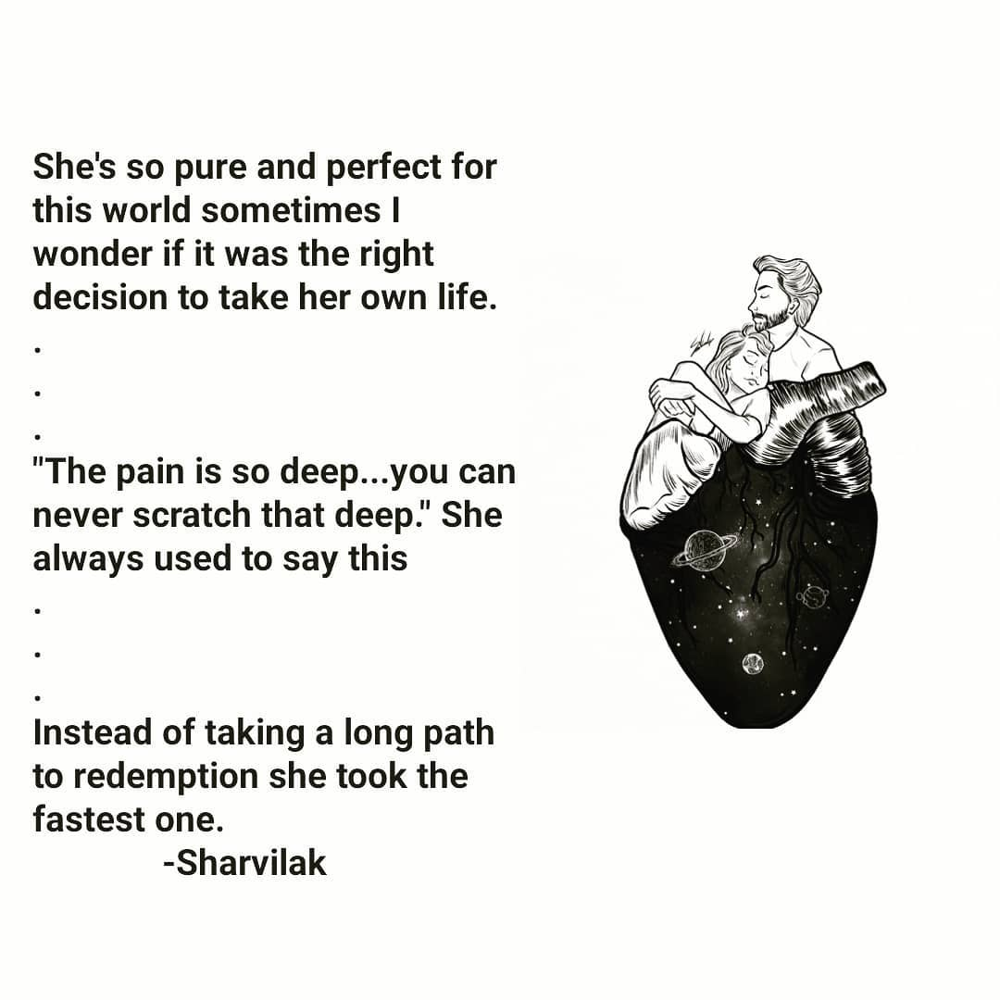
Latitude 39.398110317086 | |
Longitude -99.363132449591 |
Has Camera Metadata |
Tagged users muhammedsalah_ (Tagged, 0.00, 0.00) |
Jan 12, 2021 2:23 pm
We are living in a generation of desi hip hop where there are conceptual albums, commerical, social and songs on pain and solace. d.h.h is improving it's been acting like the therapy for some and trendsetter for others. Songs like depression,keh chuka, etc hits on different level. thanks to each and every rappers(the second generation rappers) to lift the game up! Diss game became stronger in past few months, I was fortunate enough to witness krsnaVsMuhfaad. Birth and death are evitable things. Seedhemaut, Full Power, Kode, Siege,Enkore,YS, Prabhdeep, Rawal teaching us about how to live in between those two evitable things. Chalta Reh, uss din, skate, amar, maya, Vanchit,Wrk are few of the songs which makes me think it's worth it to grind. Not for my own greed of making a living but also listening to these people talk with a good retention rate. Fotty and Dino talking about daily issues and raising the relatablity factor. Kr$na subliminally raising the bar to let other rappers catch his level. Karma with mad skills in rapping. Emiway trying to more people listen to this genre and make them fall in love with rap music. Artists like F8L,hanumankind,Raftaar gives me hope that the bar is going to raise pretty soon. Every morning I wake up and start my day with a mixtape by any of these rappers and get in the vibe. I feel greatful for witnessing the growth of Desi Hip Hop. From gully boy to independent labels dedicated to rap and hip-hop. We've come a long way. Take a step back and appreciate the level we have reached :') . . . . . . Thank you to all the artists who have helped me in tough times you all are gem ❤️
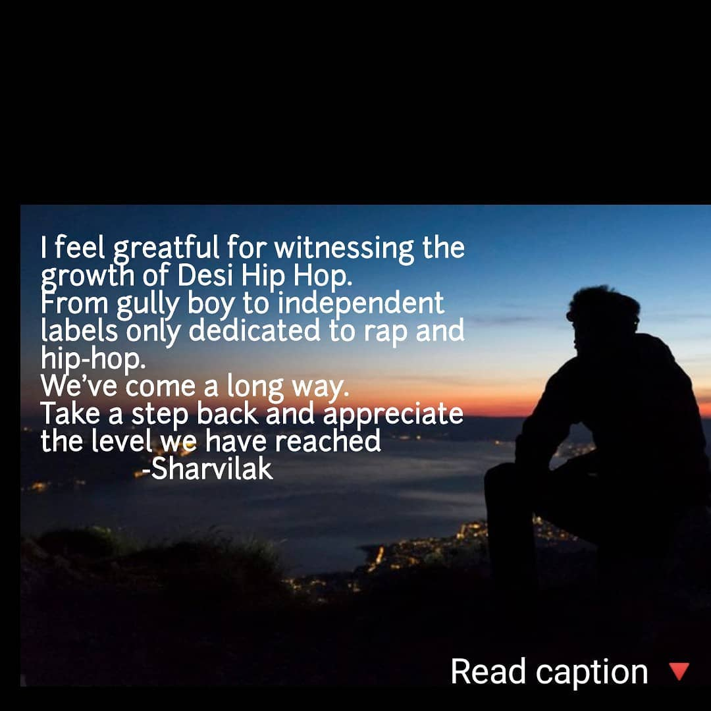
Has Camera Metadata |
Jan 05, 2021 10:03 am
Today after a long time, I liked me smiling. . . . So what it's nothing like the instagram, You liking something about yours is one of the purest love you'll ever know. . . . It should beat for itself first It's a love machine, it needs the flow Don't stop, reconsider. . . . They say it's about journey not the destination Maybe sometimes it's just about the destination. . . . If they're willing to stay They will But don't forget to remind yourself Why . . . Ask yourself Also Prioritise yourself! -Sharvilak Ps: Promise me we'll never turn into our parents _______________________ Song:Hazel - @thesiegemusic Nahi suna toh sunlo. New year ache se shuru karo. #Tan90Gang
Latitude 39.398110317086 | |
Longitude -99.363132449591 |
Has Camera Metadata |
Dec 29, 2020 2:34 pm
It’s just a phase, it will pass Fuck No, You have to make that phase pass But, It’s a general saying There is a reason why it’s a general saying. You have to move on from that phase and bring change in yourself. . . . What would you do if you had unlimited money with you? Probably kill myself, I don’t deserve anything in plenty. I loved this girl so much that she wanted me to leave her. . . . Want to do many things par ab lagta hai samay kum hai Do you think it's because you don't want to prioritise, but instead you're procastinating Kya sach mei samay kum hai ya taalna hai plan B se byah karne ka soch rahe ho? . . . Nadaan the pehle, ab jab akal aane lagi hai tab laga tha yea hota hai aam. Pyaar, mohobatth, kasme, vaade sab mei kuch khamiya dikhne lagi tab samaj aaya ki shayad mei hi pagal hu jo abhi bhi yea sab ki khwahishiyo mei chain ki nind leta huun. . . . Privileged are those who knows how to sleep formally, not learning from youtube but society pressure. . . . Don't run from issues, try to solve them. The more you run the more you'll fear it. Admit you make mistakes, humble yourself down by looking around And don't trust anyone Till you haven't heard the second side of the story. --------------- Trying a new concept in this. Was fascinated to see the response from last wordpress post. Wasn't expecting much, thank you for reading if you're still reading. Thanks ❤️ Art credit: @broken_isnt_bad ❤️
Dec 25, 2020 4:19 am
Stay true to yourself; don’t stop questioning yourself; Look back but introspect; Do make mistakes, but learn from them. You’ve lost friends and family to various accidents, Mourn for them not because everyone else is doing it but you feel something gravely for them. <3 Fuck validation, stay true to your skillset. Everything will fall into right place. After grind, watch your art evolve into something more beautiful, Fuck validation; just because society doesn’t accept a boy talking about his mental health doesn’t mean you should be shush about it. The whole country thinks it’s a murder and not suicide due to depression. Fuck them, they don’t deserve to kill your safe space. They will always be trying to bring you to their level to talk; let it be up or down. What’s the point of vision when you can’t paint it on your own, What’s A decision when you can’t make it on your own? What’s the point of writing something you can’t trip on and appreciate the art? What’s the point of art when you are just throwing out your frustration instead of making sense in your writing? They wrote about SSR suicide and mental health but at the same month they wrote about how Rhea Chakraborty is to be blamed for the Alleged murder. Who would you believe when people change their point of view based on someone’s opinion and not from their personal experiences? Why are people getting controlled by artists? Artists are one of the greatest manipulators there ever will exist and also a great teacher if they use their skills in a proper way. But the Engagements on the views which mostly supports negativity are more as compared to others. Do you wonder if they ever love themselves, By posting about Trigger Warning posts and even their “stories” are all about sadness and how empty their life is. People do get attracted towards the pain because we have been taught to have empathy towards a human. Not because it’s our duty to be a good guy. (Continued in comments)
Has Camera Metadata |
Dec 01, 2020 11:54 am
(1/3) There has been days in past when I though this was rock bottom, but after few days I was hitting a new rock-bottom. I stopped listening to music or watch any new TV show. Personal headway was stopped, that’s when a voice from inside was crying to keep some doors open. Even if you go in isolation, it’s fine, just remember the lost time is never going to come back. I was not in a right mindset at that time(writing the same thing for nth number of time in past 8 years, maybe somewhere I am still hoping things to change for good) which became my greatest weakness and also my greatest strength. Introspection became a major time-spent for me where I was not looking for a guide of life but exploring all the mistakes and rectifications. It was my fault to trust on the basis of time spent and secrets shared. Willingly removing my mask in front of someone who has made peace with a mindset of peeking and delivering advices on the base of their experience. It made me understood how helpless we have became in the process of becoming a 9-5 mindset that we look for solution as soon as we are stuck with a problem, and not appreciate the fact that it’s a life changing process. I know one thing for a fact that I need to break this loop, this routine for a good reason. Chennai, you gave me memories which I never want to forget. You taught me about how to not give a fuck about anything; the art which I want to learn for so long but my morals didn’t let me. I tried making friends here but they were more curious to know about my social group. Never lost the root because never established it in first place Transferring to a new place, As usual it was normal for me to leave a place and start my new life somewhere. Don’t know where the next destination will be. There is a sort of beauty in struggling to find yourself in a place where you don’t belong. I think I found my peace in a place where I’m peeking up at the stars while blazing a joint. Continued in second post. Video credit: @_himanshushukla__ ❤️
Has Camera Metadata |
Nov 15, 2020 12:46 am
(2/3) I never had the privilege to love myself, till I experienced myself coming back from death, which gave me hope to ask again the same question. I was sitting in my hospital room. Thinking about the ways how much of aesthetic is there in the room but not in their intension. I was always been bullied which made me this one thing stuck in my head that there will be no happiness in my life. I blamed myself for being dumb at some places, I was so much focused on getting the spoon-fed that I kind of forgot how to struggle, trying to live in my comfort zone and distracting myself with other useless stuff. Instead of trying to find a community where I felt safe, I was more focused on myself and my goals. The reason I smoke a cigarette is because I need a time for myself and not because of the kick, the nicotine doesn’t elevates my mood anymore. I was abusing it just to get the time to myself. I became scared of myself so much that I need a distraction at that too. “Chal sutta maarke aate hai” became a thing for me to brooding at that time. Continued in the next post... Video credit: @_himanshushukla__
Has Camera Metadata |
Tagged users _himanshushukla__ (Tagged, 0.00, 0.00) |
Nov 15, 2020 12:45 am
(3/3)Self-care is more important than caring even about your friends just because it’s given in the book of life. Ted-talks are good for self-improvement but it gets addictive after a period of time. You get addicted to the loop of getting motivation to feel good about yourself that one day you could also be the one standing on that stage, but what’s the use of such motivation which gets lost as soon as the video ends? Have you even hit rock-bottom if you are not trying to get up from that pit. Have you ever searched within yourself instead of looking out for answer? Have you ever gone through a change so drastic that now your parents start to question their upbringing? Have you ever felt proud of your loneliness that now when you look back it just something you needed to do. There will be better days, the only thing is people get lost in finding answers instead of embracing the question and looking it from a different perspective. The only real change comes from the inside, not from the books or songs we consume. "Wish you were here" 19 year old me to see what you have changed into, Thankyou for being a vulnerable crying for attention whore who was more focused on the hospitality and not on his goals. Life is all about learning from the mistakes, embracing the pain and introspect where it went south. Pain should linger on your mind because that’s where we learn what not to do. Going back to the same routine and not learning anything new is just like playing the same mission where you have to kill the goons who are standing on the train and if not done, “All you had to do is follow the Damn Train CJ” . . . . Read the whole thing:Link in bio Video credit: @_himanshushukla__ ❤️ Song: Wish you were here- Frappe Ash #sabfullpower
Latitude 13.0812 | |
Longitude 80.2751 |
Has Camera Metadata |
Tagged users _himanshushukla__ (Tagged, 0.00, 0.00) |
Nov 07, 2020 8:57 pm
We have made a lot of mistakes while growing up Maybe it's because the things we think are ethically correct are the ones which we are violating. Stealing candy from a store before knowing the cost of a dime. Maybe it's because we were never forced to not do that thing, we thought it's correct. some of us were privilege enough to get those amenities but didn't know the sacrifice. Some of us think adapting to a different set of people is tough, Some of us are still stuck in that loop and couldn't get out of it; living in those times in nostalgia, and not concentrating on the current times. It's weird how lucky we feel for not going through those same struggles your co-worker has gone through. We all make mistakes in our day to day life; when we analyze something we are still stuck with the same loop, getting addicted to bits of advice and not have much social interaction apart from few groups. It's terrifying how people talk about the apocalypse but are still comfortable by keeping themselves surrounded by the same group and knowing each and every track of what's happening. But are afraid to change. We all make mistake while talking about our feelings; we are comfortable to wear a mask over a mask, we have adapted to the new normal, and every day we are moving forward but forgetting our roots. We all put a Nice picture on Instagram and not the weird or strange ones because we are busy working on our own social image but not ourselves. Isn't it strange that we live in the fear that every social media update will make us look dumb or less likable to someone who used to be in your group? You become conscious about your scars, bruises, weight, and even the color of our skin, and how you try to avoid those things with the help of filters and just want to keep the addiction of social engagements engaging. isn't it weird that sometimes we are not even living for ourselves, but for someone else? ------------ Song Name:Chalta Reh by @seedhemaut Go check them out they are amazing ❤️ --------------- Special thanks to @anjali_scribed who texted me saying you should write on mistakes, i took it lightly at first but thanks for the suggestion you're great :')))
Has Camera Metadata |
Oct 26, 2020 1:09 pm
(3/3) There is a need for society to keep us sane, and on track, the need of having dreams and pursuing them is necessary, that fight is worth living for. Without any struggle, we might turn into a creeper(Moneyplant has a funny name, it has money in the name but it's still a creeper). Imagine if you were never allowed to crawl when you were a kid. would you ever be able to walk? The constant pressure, The constant feeling bad about yourself is necessary, if you are feeling bad about yourself it means you are feeling something to do for yourself. It's okay to show your emotions. It's okay to feel weirded out by a sex joke. It's okay to cringe on something where you don't want to adjust to. It's okay to cry sometime, it's okay to smile at a petty joke, It's okay if your favorite movie is The Room, People around you will judge you and will try to bring your morale down because that's what they do the best(Another reason why it is called a brutal world). I was mocked for not having a girlfriend when I was 19. I was mocked for liking Rap music and was forced to listen to their favorite songs, I thank them for molding me into something which I never thought I'd be, A little bit better at understanding myself. I am thankful for everything that has happened to me in past. because of all that constant pressure of putting myself out for engagements on these posts and getting rejected all the time has made me more humble and made me write more every time I don't cross that 50 likes mark. that's what I am at this point who does not give a fuck about engagements but only the art. Thank you for making me fall in love with writing and not seek approval from everyone and ask them to like, share, and comment like someone who needs the approval to feel good about themselves. . . . . . . . . Art by: @bhaiya.ek.ocb
Oct 05, 2020 4:46 pm
(2/3) When no-one is beliving us, we turn to god and hope something good to happen. Why do we have faith in a superhuman who existed and also who has been already described in the previous writings(The Geeta,The Quaran, The Bible, etc)? But we always believe in something like "Tumhe to maata raani paap lagayegi" or why does words like "I wish we have had aborted you" hurts the most when it comes from someone who you believed and loved so much? But when it comes to believing in ourselves we just can't but we seek approval from those people, which turns into this weird pressure of getting accepted in that school or topping that school? Do you ask yourself if you are happy with whatever milestones they have set for any individual? would you be happy if you get all the things you want? would you be happy when you realize that you have reached the peak and there is no-one but you and your Role model blazing up a joint or something and talking about how boring it is when you are preparing for your death because you've achieved everything you aspired for? Sometimes entity like God does make sense also the fear of not getting approved from them is what fears most of the people. explaining why there should be a purpose in your life always. Ever wondered why successful people are doing the charity funds at least once in a year? Yes, to help the poor. but then why not donate 90% of their earnings to the needy all the time? Why there should be a PR team behind each act? or why there should be a camera every time they do a good deed?When did good deeds become something of a personality boost? just to boost your ego that you are better than everyone else around you? Why can't we stay humble in this world? is it that hard? Why the constant pressure is suffocating the child who wants to live is now ready to give up after so many rejections? . . . . . . . . Art by: @bhaiya.ek.ocb
Oct 05, 2020 4:45 pm
(1/3) Insaan sala har dar se nikal gaya chori ka nashe ka zindagi ka par ek dar rehe gaya samaaj ka dar. It's funny how people around me were concentrating more on how to be more like Marshal and not unleash their inner self and embrace their insecurities or flaws but try to hide them, only because of log kya kahenge. Are we that easy to move that only one self-help book, one election propaganda, one ted-talk, or one song elevates our mood and change the perspective of the same thing we've been living in for years? "Marshall, you're so funny man, you should be a comedian, god damn Unfortunately I am, but I just hide behind the tears of a clown" I never had any answers for them because what if they can see through this mask and also exploit my insecurities, Always was scared of that one thing. I never had the guts to embrace my flaws, till the day when I was about to be in peace with the oblivion, till someone snapped at me and got me out of that loop. It's funny to see people wearing a mask over another mask and call it the new normal. Have we adjusted to the change that we are unable to remove the mask which has become our identity? Just because of Samaaj ka dar? It's scaring how we see our friends as a competitor and try to fight against them instead of winning with them. It's terrifying how we are lying in front of them and still not get caught. Among us has taught me about more life skills than I've ever learnt from any ted talk. Ted talks used to feel like that 1% who made it and now flexing on how much he has the struggle to get, also giving us hope to fight for, "You can do anything you set your mind to man" Even if we get our mindset to avoid the question of Log kya kahenge, would we progress as an individual? What good is being an outlaw when you have Responsibilities? . . . . . . . Art by: @bhaiya.ek.ocb
Oct 05, 2020 4:44 pm
Being in a toxic environment for almost 6 years and not turning to be like them feels like a blessing. They say the surrounding affects you and you try to act like them, Fortunately, I never had a heart to start with. Been exposed to shows like Dexter and Mr. Robot at the time when I was struggling to find my identity has been one of the best thing happening to me. I knew that I’m not normal, and I never will be. People around me used to say that I am at my normal state when I’m drunk, referring to how much I never felt anything deeply. Maybe because somewhere I knew these expectation from friends, people, family members will be gone one day, but I never thought about this being the New Normal, that wearing masks would be mandatory and not just something which you like to do all the time. I was diagnosed with the same disease. at that time I felt proud of myself to be in top 15 lakh in the country and not worry about the death. I was scared of being lonely when I was 17, I was scared of exploring those parts of my feelings which could lead me to take some serious steps at the age of 19. I am scared of posting this because what if someone get offended and try to attack me sublimely and then fucks with my brain only because there are some loose strings they know and be a bitch and leave scars(Yes plural) in my mind forever. Just because they got high with me and we shared a great bond together once upon a time. But I was never scared of death.Why Do these thing matter still? They never knew my past, they never cared about my goals and ambition or ever helped me when I was struggling in getting recognition in the writing field, Nobody told me to open an Instagram page to connect with similar minds, Nobody gave me advice on freelancing with my skillset. But it’s okay. I trusted them more than my life. They never cared about me why should I worry about something like their opinion shake my mind. They thought they found that one loose end where I can be manipulated but sadly no, I’m not going to fake friendship for hiding my insecurities anymore. I’m sorry, that guy you know who used to be follow you like a dog is dead, and I’m not going back to find that body.
Has Camera Metadata |
Tagged users fatalsworld (Tagged, 0.00, 0.00) |
Sep 23, 2020 1:03 am
I wanted to say something but I couldn’t. Maybe because I never wanted to explore that part of myself. Maybe I was scared to find something so terrifying that it could shut me down, Maybe I’m afraid of death. I started lying smartly when someone asks me how are you feeling. The other day I was getting a root canal and It felt like I’m in a therapy session. It hit me at that time what kind of feelings I’ve been holding on to. It’s been almost 5 years to that incident. It still haunts me. Like the other day, someone asked me what if he loses all his friends? Lose interest in living? What if the struggle is gone, like waking up also feels like a routine and not motivating much to do and create something beautiful? There have been days when I felt blessed for not having many friends to talk to but at the same time, it haunts me how my Instagram is filled with those people who didn’t even try to keep in contact with me. Maybe because I’m unable to be the imposter in their life, while I’ve been doing all the task (Among us Reference). To suppress these feelings, I go back to hip-hop, Rock, and Open world games. Open world games have always been a blessing for me because the things which I can’t do in real life I do that in the game. Roam around in the car at late night, Steal the fastest car, modify the car. Do some tasks with the online friends which I made in these years. Soon, I realized that I started escaping my reality by playing games. I never had an opportunity to express myself. Even we male cry, the only difference is that there’s nobody asking us genuinely. I remember this one time when my friend asked me how am I feeling after losing someone dear to me, I cried in front of her, she hugged me and said it’s okay sometimes to remove the mask and feel deep from your heart. I never had many friends, it always used to feel that I’m a failure in front of my parent’s eyes, because there was always a comparison between the overachiever sibling who has many best friends and how he enjoys being with them. *Continued in comments*
Has Camera Metadata |
Sep 22, 2020 1:48 am
Life became more of a goal orientated thing, comparing our griefs like it's some kind of competition, worrying about if that celeb is going to get married or something. But when it comes to our wellbeing, we don’t take a second thought to choose what we want in our lives, because it has been fed to us, that's the path to salvation, funny isn’t it? We’ve been told how the stairway to heaven; a path is filled with petals and smells like a park of flowers, but nobody tells you about the struggle to reach there. We end up bullying someone on the way to reach up there but we forget about how lonely it is up there where there is nobody with you because you were busy following the goal and not enjoying each and every detours of your life. Someone said He wanted to see his father, met this kid who was there because he was bored, in the end they found what they wanted. It is not about reaching at the end of the journey; it is about cherishing each moment of your life. He found his father, meanwhile the other found himself out of the ‘Nihilism sphere’ and found his worth and what he wants to do in his life. Seize the day till you find something worthy of living. (Lyrics down in comments)
Has Camera Metadata |
Aug 18, 2020 10:33 am
When I look back in time, All I see is a competitive guy who wants to be the funniest kid in the group and can stoop down to whatever level to prove my point, Never realized what kind of guy I was back then when someone who did not agreed with my point of view I had to make them feel insecure about themselves to make them listen to me or follow my opinions and please a certain kind of audience. Somewhere I became the bully and biased towards one specific thing. Somewhere in being the Naruto of the group, I lost myself, I became Rick. Always have to keep my ears open and organize those criticisms in such a manner where I can use them as ammunition, so I remain at the top of my game. I used to wonder how sometimes people just give up by not replying with a comeback, and I used to call them a loser. They understood very soon that there is no need to have beef with him because they will be getting bodied by me. But it took me a while to understand that they are the kind of people who don’t want to mess with someone who has been acting like a bully on the internet and give him a power or a validation that it’s cool to be edgy and roast all the time. It took me many months to realize that I need to be satisfied with myself to improve in life and not degrade to prove my point. There will be days where I will be losing the battle, But I have to make sure I fight daily to win the war. Living life is more than comebacks and replies. Every content creator has its own way of expressing things. Everyone experiences love differently; it can’t be a set of rules you need to follow to fall in love. Movies and TV series should not be the slave to your thoughts. It’s life not a syllabus of your upcoming examination that you need to do the exactly the similar thing they did. Listen to yourself, you will find the path.
Has Camera Metadata |
Aug 18, 2020 10:13 am
At a very young age I figured out I might be hating the Loneliness, and I want to have someone to talk to, when I was 13 I experienced my first heartbreak and I learnt how to not take any feeling straight to my heart, and after that incident, every heartbreak felt like a mission failed in a simulation of life. Life goes on. New chapter awaits, there is no need to look at past and think how things could’ve been better. Everyone who is an artist around me talks about all the negatives/Tragic elements in life like divorce, toxic relationships and even rape or death. But there are very few people who admits that they are lonely, and I was afraid of being one of those people who talks about the things he really wanted to keep up in front, I am the kind of kid who used to hide behind the romantic story or a certain character because I was afraid of facing myself, Facing aloneness. There is a reason why I felt back then that it is a dangerous thing, but now I’m glad everything happened for a reason. I used to think of it as a character development. The other day I got a call from a friend who was crying because her love interest is getting married to someone else, now she is living the time of her life. I am happy for them because they have learnt how to move on from something which was not meant to be theirs anymore. I’ve sacrificed a lot for people who were not even ready to meet me in the middle. Don’t bring your problems here just because nobody wants to listen to you. I will not be able to help you, because I don’t have the authority to make decisions on your life. It’s your life and if you are eligible to select the Government of the country, You can take life decisions by yourself. I’m Sorry if I let you down for not being your puppet anymore and not listening to you anymore. (Lyrics in comment down below)
Has Camera Metadata |
Aug 18, 2020 10:09 am
From choosing between Tea or coffee to explaining to certain people why I prefer black coffee over a simple cappuccino. As the level increased, it was difficult to retain the top position in anything. I became more of a raw element than the sugarcoated which people started using around me. I was surrounded by people who started writing because they saw a common element in me and my writing, they thought I used to do it for fun or for some other intentions, they also tried for some time. Some of them were ahead of me, uploaded their open mic on YouTube and are happy because in their head they were having a competition with me. I’ve seen enough open mics to realize I haven’t written anything as good to be presented on stage. But I’m happy for them because I don’t want to be the guy who kills their dream of portraying superior to someone who gave them a portal to express themselves and can be anything they want to be. But sadly they just wanted to be better than me. If you look, my Instagram page makes more sense than their entire writing career. For me Instagram has been my rough book for almost 3 years now. But I’m glad I could help someone to be happy in their shell. There is a reason why I haven’t posted anything about open mic. Every time whenever I end up writing I have this sudden urge to either delete it or post it and forget about it. There is a reason why I’m still where I am today and not vanished like a trend. There are many drafts which are still better than my posted work.The only problem is I don’t want to compete for the social media engagements. I am happy with the number of likes, comments and feedback. I’m still trying to beat my previous work. The only difference is I don’t have to validate myself every time I write something new. I’ve reached that level where I can post what I want. I never had an urge to ask someone to feature me since I came back to the scenes. Being real has been a tougher task than faking myself on the platform to ask for engagements. The only thing I’m true to is my art and I feel proud of It. Don’t pretend to like something because you have to. Do it because you love the process of it and not care about the end product
Has Camera Metadata |
Aug 18, 2020 10:03 am
In the past whenever I watched a movie, I was fed with a thought that it will end on a high note, where the main protagonist is happy, and everything works out for him. Years later when I saw Kabir Singh, I realised it's on me where I want the movie to end. The last 10 mins didn't feel like a part of the movie where he was still searching for that one person who was portrayed as the start of all the bad influence in his life. It doesn't mean I hate the movie. Hate is a strong word to define something which has not kept me worrying even for more than an hour. The pill of acceptance that the innocence is gone and not coming back. I still feel bad at the very end of a beautiful relationship, but that doesn't mean I hate them. I still care for them and their wellbeing. I do want them to take care of themselves and lead a successful life, I do want them to realize that it's a greedy world and we will not get what we want in our lives. It's life, not a fucking movie which will come true. You can live their lifestyle but you can never be as scripted as those characters who you portray as your role-model. There were days when I questioned my own beliefs and existence and whatever I am today is because of the self-introspection I used to do with the bottle of Jack which was getting consumed drop by drop. I realized how hollow and lost I am from inside when I sought in this illusion of 'Path of happiness' which was made by someone and established in the society like it's a Rule. I am sorry Society, I failed you. Thank you for opening my eyes. Love and all is great but I don't want to settle until I hustle enough to settle down with something. I still wish if you could read this from heaven I want to thank you for making me question my own existence and my choices in life. Because of you, I am what I am today. Apparently, your heaven was always in someone's arm but was never mine. ______ Par shukra hai Tujhse koi gila shikwa nahi Agar tu zindagi me na aati To is cheez me do raay nahi Ki mai doob jata Vo pyaar tha ehsaan nahi Vo ghar tha makaan nahi Vo saans thi hawa nahi Na dil hai dimag nai Bas ek heer thi, vo paas nahi Ab vaapsi ki aas nahi Mai doob jaunga -EncoreABJ
Has Camera Metadata |
Aug 18, 2020 9:54 am
There have been days where I couldn’t write a word, there are days where I end up writing up the entire thing in less than an hour. There is a long way for me to still go, but I feel optimistic about my future. There were days when I used to think to end my life, there were days where I couldn’t see the light at the end of the tunnel. Now I’m standing right outside the tunnel but I cannot see further. This feels like The lowest point of my life.Reminiscing of the past is an artist’s favorite pastime because that’s where we find the content to express on. Luckily, I was always the kind of artist who rarely wrote about the realities of my life. I used to maintain a healthy relationship of two characters in my blogs to cope up with my loneliness. I make up things for the storyline in my blogs because I loved creating a world of mine inside my head. Previously when someone was introduced to this world, they called me mentally ill and blamed me for being insecure and bad influence because I was lost in my own world. They were right, I was too much focused on creating something imaginary that I forgot about the practical aspects of life. I finally found that one thing which I can rely on when I don’t have anything else to do, It is something which I explored by myself and I want to nurture it, challenge this skill and up my game with each and every write-up. I love this struggle of coming up with a story to tell, Because I am a story-teller not an influencer. I just want one thing and that is to be at my mental peace when I am on my deathbed. ______________ Na padha zyada vigyaan samajh raha hai? Aur jo padha mujhe khud kuch yaad na hai Hai pata kaha se mili mujhe buddhi Lagi lagan aankhein khuli Lekin dafan ho gayi bhaavnaye Kara galat waqt se saamna Hai kara shuru jabse bhagna Kabhi aankh band karte hi so jau Chahu ek din haske jaagna -Siddharth Sharma (2020) PS: @theycallmecalm thank you bhai❤️
Has Camera Metadata |
Aug 18, 2020 8:32 am
Things like the toxicity of social media, cyber-bullying, and criticism from the society which affected my mental health in a bad way felt like something which everyone would go by but it’s about how well they handle and portray themselves in front of the world. Some people try humor as their self-defense, some people keep up with the trend and try to fit in with the mainstream, but they are happy in taking the ALS Ice bucket challenge but not reading and donating to a charity, because being relevant make sense to them. Sometimes I wish I was like them, easily amused. Appreciation of small gestures orchestrated by someone dissolves because we are too tired to look for hidden jokes or references and don’t look between the lines. The efforts put for fixing yourself in that position is also underestimated because there is less value in social validation for struggling but more value to other unimportant assets of our lives. I am tired of pretending to be someone as I’ve finally figured out what I want in my life and that is to focus more on my art and appreciate all the things which come around the time. (extract from blog) . . . . Backstory of this picture: it's from my blogs 2 weeks ago. One of my friend who liked this post made this and posted this on her stories with the link of my blog in her link. Even if i find any other pic than this, it wouldn't be as much meaningful as this one. Thank-You for being kind enough to read my blogs whoever does it❤️ . . . . . Editing credit: @anjali_scribed . . . . . . . #writing #writer #writersofinstagram #poetry #poem #poetsofinstagram #poetrycommunity #poet #write #writers #prose #spilledink #poetsofig #writingcommunity #writersofig #poetsofinstagram #igpoets #poetryisnotdead #poetrycommunity #creativewriting#acceptance #love #selflove #loveyourself #life #peace #mindfulness #gratitude #selfcare #happiness
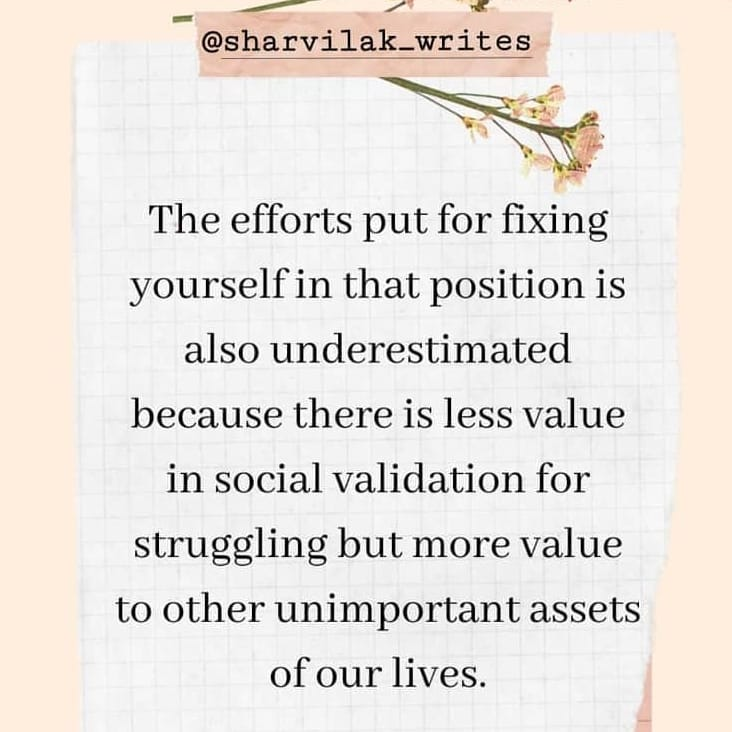
Has Camera Metadata |
Jul 16, 2020 10:28 pm
When I was 16 being Edgy kid was known as being cool Who cracks self-deprecating jokes and take every criticism as an insult because that was my shell. Over a period that shell became thicker The insults became more below the belt And eventually, I ended up feeling nothing. At 18 I used to compromise myself to be in the group used to act as a host even when I'm the guest Not caring about my interest or health Started drinking, smoking became a habit and And to tick all the check-boxes, finding 'love of my life' just because I needed validation from people I'm surrounded by. At 20 Helpless and hopeless like a bottle of alcohol at teetotaller's home I could see how people have been using me for unfavorable purposes. Like my life was crashing right in front of my eyes And I couldn't do anything about it, because I was scared of loneliness. At 22 I met this cute guy outside the Bar who told me his side of the story and why he is drinking alone That's when it hits me how much of my life I've devoted to undeserving people. At 24 There are times when my phone is at low battery but it doesn't bother me my day goes by and the phone doesn't die. I've started to love all the small things in life. While having a long term plan and enjoying the beauty of struggles in life. At 26 I was diagnosed with cancer. But I was happy because I learned how to live my life even if tomorrow is the day I kick the bucket I will not have any major regrets in my life. PS: “You should enjoy the little detours to the fullest. Because that's where you'll find the things more important than what you want.” -Ging Freecss . . . . . . . . #writersofinstagram #writersofig #writers #writerscommunity #writerslife #poet #poetrycommunity #writersofinstagram #poems #poetsofig #literature #author #text #read #words #creativewriting #instapoet #writerscommunity #typewriter #spokenword #igwriters #sharvilakwrites #silence #instagood #alone #solitude #peace #livingmybestlife #carpediem
Jul 12, 2020 7:00 am
Always talk to someone who questions you at your every step, don't treat them as an obstacle for your success or whatever you call them Sometimes you don't realize how terrible someone is treating you until you're explaining it to someone. Sometimes you are the listener, sometimes you are the talker. A relationship built on such small compromises where you switch roles is what makes the bond stronger. It's fine if you want to hug and cry about what happened with you you came a long way till here, So congratulations on that. It takes a lot of courage to reach where you are standing and still being infatuated towards your feelings. It takes a lot of time for some people to focus on their feelings these days. With all the hate on the internet terming under teasing or just to look cool for social validation. When you build that shield, you tend to forget how does it feel to have the experience of great failure or great achievement, because you are already occupied with the thought of what could go wrong and you're never happy.For the longest time, it was my sister with whom I used to have long talks, long walks, long conversations after watching an episode of Rick and Morty. So Thank you for talking to me and showing me the mirror and Thankyou for listening to my bitching when nobody else was ready I wish I could tell you when you are here beside me and not buried 6 ft under. -PC PS: when I finished writing this piece, I started re-watching the bojack finale and this scene just resonates with what I've written. #igpoet #igpoetry #poetryinmotion #poetscommunity #poemsporn #poetryporn #igwriters #poetsociety #wordgasm #poemsofinstagram #writerscommunity #poetryisnotdead #creativewriting #poems #spilledink #bojack #bojackhorseman #netflix #art #bojackhorsemanedit #prose #spilledink #poetsofig #writingcommunity #writersofig #letter #letters #handletter #mail #snailmail #handlettered
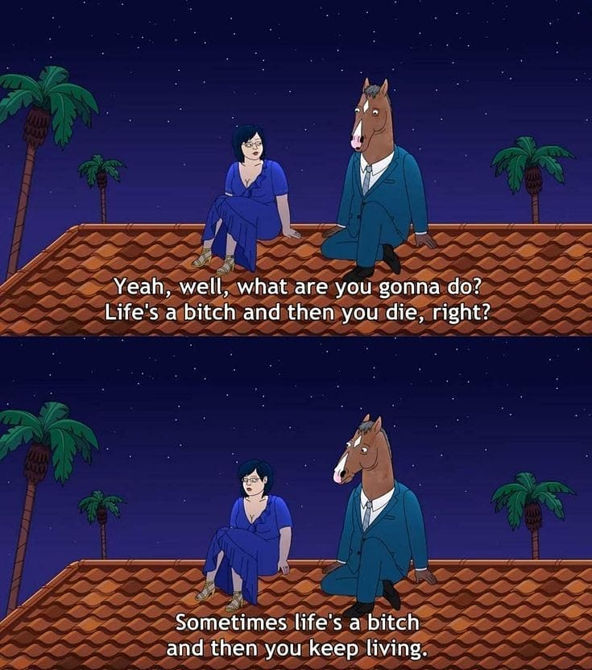
Has Camera Metadata |
Jul 08, 2020 2:59 pm
The irony of the change is we expect to deject the things we consider is wrong for us like people think about giving up on booze because of that one time they almost vomit to their death or that one time where they OD and did some stupid shit. Anything in abundance is not good, let it be love. We can talk about how social media has become a tool for surveillance or behavioral manipulation, radicalization, or addiction or how it is sabotaging relationships in general. But in the end, these are the things which have become an integral part of our society. It’s the same with the people we come across in our lives. They have survived in this world by behaving like that, and that’s their best defense mechanism to the things coming at their side. There is a reason why some people are not moved by reading something when they know how it is going to end or when the surprising element will come, It’s always at the end of the movie when Marvel wants you to think about what would happen in the next installment of the movie. Learning something new is not a child’s play. We cannot learn without pain. Acceptance doesn’t need to be a happy or uplifting stage of the process. It could hurt at first but it will be worth it. We don’t accept things the way it is, we don’t accept someone as our friends just by looking at them, or just by a reference unless there is a personal connection with that person. It takes time to grow onto something, a new idea, or a new car. Adjusting to something new takes time. It’s not an easy task adapting to change. Some people don’t dare to move on from their past and want to be stuck in that same loop. Because after dealing with pain, they don’t want to struggle to get to the root of the problem and move on. they are happy being at that place because it has comfort food and emotional outbursts. Some people are amiable for change since their whole life they’ve mastered the art. The art of letting it go and not forcing the thoughts to stay and in the past but learn from it and move on. . . . . . Art credit: @saaniya30 (didi Collab someday 😅) Extract from previous blog (crawling) Link in bio
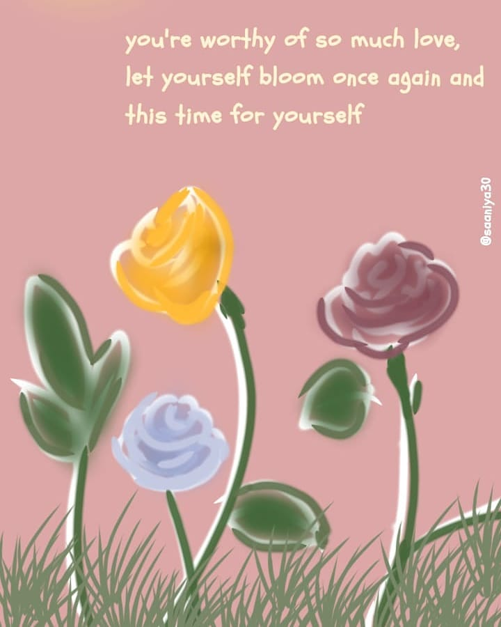
Has Camera Metadata |
Jul 04, 2020 2:04 am
Wish there was someone who would listen to me Wish there was someone who told me it's not okay to be quiet about it who had told me to stand my grounds who had told me It's okay to be weird It's okay to not follow the Pied Piper, It's fine to be distracted in your thoughts Only if I knew those transgressions wouldn't stop If I had not said anything. It's easy to put a label on it Call it bullying or being traumatized They make fun of you and you consider it's teasing But it was striking me Every time whenever I used to come from school I used to go to my room and play this song on loop and sob, This was my therapy. उठो बनो बड़ा पढ़ो लिखो दिल हो ना हो बोलो जो बोले जो ना माने पिटो बेटा लाओ ला डंडा They say 'what kind of boy talks about getting bullied? Are you weak? Are you that sensitive? you should go for a sex-change operation because you need a strong man to take care of your fragile heart.' I was scared of hearing such comments, that's why I never spoke to anyone. I was never good at studies or bringing marks to the table Hence I assumed I am not in liberty to talk about my problems in my family. 'हर कोई बांसुरी बजते ही बस मे चले बस ना किसिका एक ही बस मे बैठे सभी बस्तों मे लिए टूटे सपने बचने को जगह नि बची तो मरें बच्चे (ढक दो)' Things like you are a boy you are supposed to be strong, these things shouldn't matter to you. I never cried in front of those who teased me because I want to be strong and don't want to be the laughing stock for the people living in the same society, because I never wanted my family to get involved in my struggles and scars. पता होता मुझे साली बात बढ़ जाएगी तो चुप ही रहता चल चुप हू मैं बता, फिर तू क्यूँ है सहता? (घर पे सुनता स्कूल पे सुनता) बता मुझे की तू क्यू है सहता? (सब से सुनता डर की सुनता)
Subtitles |
Has Camera Metadata |
Jun 30, 2020 6:45 am
Imagine a situation where you are given a high platform, so high that now you wonder how to spoil yourself or grow from it. Now, What would you do after getting bored with everything you think you can be spoilt with? Every time, it’s one more drag or last time sex and then moves on. But are you moving on, when you are using those things as substance, and like a weapon you’d use in war?, What are your plans?, what are you going to do if your 9-5 job doesn’t work out?, When are you going to invest in something concrete as property?, Why do you think this is the end of the line when you have so many things to live for?. It’s always going to be the last time. And to live in nostalgia, you do it again. But with some experience on the way. Is life all about mundane chores and expecting a different outcome, because some lines are adjusted? . . . . . (Extracts from previous blog- Fashion victim) Link in bio PC: @pascalcampionart . . . . . . #write #writers #writing #writer #writingcommunity #instapoem #creativewriting #writersofig #poetsofig #writersofinstagram #poetsofinstagram #writerscommunity #poetrycommunity #spilledink #igpoets #instapoet #wordporn #words #poems #poem #sharvilakwrites #instapoetry #poetryisnotdead #poets #prose #poetry #spokenword #textmessage #instatext #instawrite
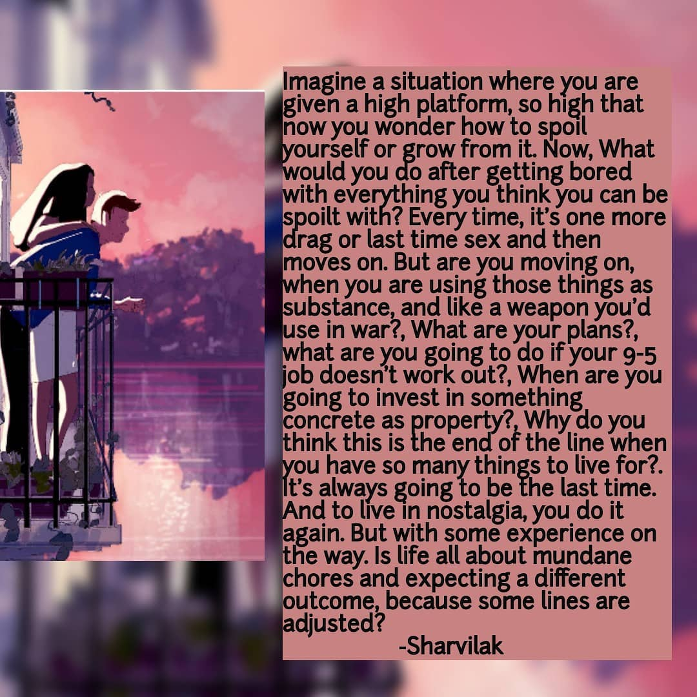
Has Camera Metadata |
Jun 27, 2020 11:34 am
‘You try hard to impress people with what you don’t have, you try to forget what it is to be like a vagabond. The movies and people around you tell you to get a job find a love interest and try to settle down with them, sacrifice yourself truly for the job and for the loved ones. but the one thing they don’t tell you is to be yourself and do what your heart says is right. If you want to fall in love with that person, the first step itself is wrong. When things come up naturally, you develop feelings for a certain person. If by the time your main objective is to fall in love by forcing yourself, you are doing it wrong and might end up getting hurt and one day you will blame everything associated with that person for being in your life let it be something for your good or your bad you will hate it, you will start hating love because it hasn’t worked for you and you think everyone will end up as you did. Unfortunately, that’s not true for others.' . . . Extract from a conversation from my blog (Smells like teen spirit) PC: Pinterest . . . . . . #mirakee #writersnetwork #lovepoem #igpoets #artlixirpoetry #writerscommunity #prose #writingcommunity #poetry #poems #quote #quotes #wordporn #writersofig #creativewriting #wordgasm #spilledthoughts #bymepoetry #instapoetry #lovepoem #sharvilakwrites #micropoetry #tinytales #literature #poetsociety #loveyourself #writing #yourquote
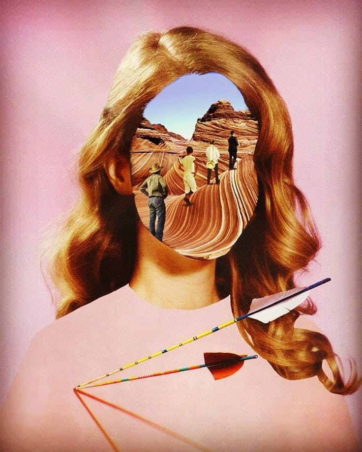
Has Camera Metadata |
Jun 24, 2020 6:31 am
'Nobody talks about their insecurities because it makes them feel like they are flawed, and they think its a bad thing to have some’ she then showed me the scars on her hand 'these are the symbol of my strength, I stopped wearing full sleeves because I hate hiding this flaws and also it’s irritating to look like a drug dealer everywhere I go. Whenever someone recommended me to get the scar removal cream, I feel if I hide the mistakes I made how am I going to be in my natural self when I’ll be looking for just omitting my mistakes and is also a reminded that I was filled with rage once and now looking at it, it feels good that i learned something from that to not pretend to be someone else, and just embrace your flaws and if you are hiding it from someone, it means you just don’t want them in your life, because you are scared if they judge you without knowing the entire story' (Best part of my last blog 'Halfway Right' link in bio) . . . . . #mirakee #writersnetwork #lovepoem #igpoets #artlixirpoetry #writerscommunity #prose #writingcommunity #poetry #poems #quote #quotes #wordporn #writersofig #creativewriting #wordgasm #spilledthoughts #bymepoetry #instapoetry #lovepoem #sharvilakwrites #micropoetry #tinytales #literature #poetsociety #loveyourself #writing #yourquote
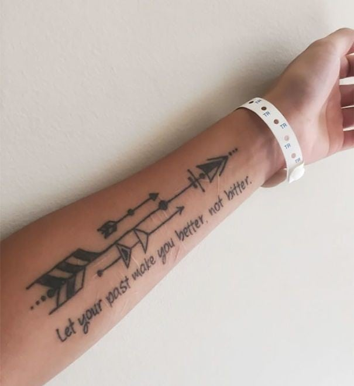
Has Camera Metadata |
Jun 17, 2020 11:38 am
A Silly girl Who is just set free in this broken world! Just about a girl Who is crazy about all the little stuffs she gets! Has a brother and a sister like a perfect sibling thing... An Elder sister to Guide her! A Young brother so that she can tell to him how to behave to girls... A Silly Girl Who Doesn't like to read or write stuffs but still wanna be a rock-star! A Silly Girl Who thinks having a boyfriend is cool but still flirts with her best friend A Silly Girl Who Doesn't know what a breakup looks like because she didn't had enough breakups Oh Girl! It's just not only your beauty why people are just fond of you... Its not even about the genius mind you have because you Don't want to show that to anyone! She's just soo perfect that she don't need a Dance Master when she Dance in joys! She is soo perfect that she don't need anyone when she is sad but when she is happy she just tells everyone so that everyone gets happy meanwhile nobody tends to look at her sad side and nobody dares because she is known as the funniest girl in the group... the angel of the group... the girl who is known as the glue to the friends group... Oh Silly Girl! Even if you are broken right now and don't want anyone's attention don't worry.. I know you will get healed from the wounds..Because that's what platelets do! Even though you think that nobody is watching you when you are in the room alone crying in the dark...Someones heart is still with what silly girl do to keep the bonding between the friends! Days and Days passed to the thing that generally break the heart when the loved one don't want be be with you....Still the silly girl try to avoid the tears because she is not meant to shred tears because she knows life is short... life is meant to be enjoyed no matter what happened to her in past or present! Oh Silly Girl! You are one angel and selfless girl to this demonic and greedy world.. Please be the way you are! :) Yours Obediently HL Wrote this: April 28 2015 Not edited, posted the way it was back then.
May 30, 2020 4:03 am
*Fanpost* It's okay if you want to address the negativity that the incident has given you and believe in what you compose. And soon enough when people start to talk more about the negativity you tend to lose yourself in the tone. And sometimes you become the protagonist who you never thought you'd be in someone's life. It's like a domino effect where one thing led to another and that's how you decide your fate. It's okay if you had a rough childhood where you don't know who your dad is or your mother is in prison since someone complained about how she used to abuse you. What important thing is how you moved on from those experiences and how they shape you for your betterment. You can rant about your shitty childhood and adolescence but that's not gonna change the fact that you are now a different person from what people expected you to be. See Trevor, People have expectations when they have faith in you. People around you still believe that one day you are going to forgive everything bad happened in the past and move ahead with a fresh start. And that character development was something nobody saw it coming, you were always known as the most hated guy in the trio, But for me, you were the hero of the story! It was big of you when you decided to go to see your partner in crime and not kill him, but instead help him to find his daughter who was getting dragged into pornography. I was glad to see you age well like a fine bottle of wine. He called you names like Hipster in denial and still a child but he cares about you and knows that's the only way you are going to respect him. You were there when Michael was crushed between the two organizations and both of them wanted him dead, Not caring about your life and consequences you were there even to save Kevin whom you've just met and not even had time to chat with him. You kidnapped Madrizo's wife and learn what love is and how to deal with affection and how does it feel to miss someone, not for the physical act but just be there with you, listen to you, talks to you. whenever my phone plays that song from Chicago it reminds me of how much of the character has been scarred just so we feel the way. (Continued below)
May 23, 2020 8:13 am
You are distracted, You have a lot of things to think about before answering. Have you ever thought about whether you believe in god or not What are your thoughts on the judiciary system in the country? The only way you are avoiding these questions is because we are easily distracted Distracted by a funny tweet or Instagram video or talking to someone. Let it be for nostalgia or just want to stay connected because that's the company you like and you can be what you like. But you are even shy to think about how your personality will be in front of others. So you stop caring about what's happening from the third person point of view. you start to look into yourself not to impress somebody but anxiety kicks in and to avoid all the insecurities, you try to be funny. If your friend is funny it doesn't mean his life is fun, It could also be because that's his defense mechanism to hide the real him. Even Fun Bob was only fun when drunk. Focus is also something my generation has lost, They start from their recent personal story to suggesting ways to deal with national-level threats. Once when you find the solace in that place, you open up to yourself and come to conclusion on what are the problems you are going through. There are going to be many examples of people finding solace but worrying about reaching there is not the solution You force yourself to look into yourself, with the help of music or tv shows Sometimes when you got to sleep you wake up with a phone in your hand. You wake up distracted, You sleep distracted. When are you going to give yourself some time? When are you going to take care of your mental health and not care about your social image? *I Hope you read when you are ready* . . PS:The image was from draft of 2019 I never posted. Inspired from the image xD PPS: 2 saal me kuch change nhi aaya xD
May 11, 2020 10:31 pm
I'm afraid of myself these days, what if after all the struggle I've faced in maintaining my writing quo I'm satisfied with my struggle. What if I stop writing one day because I'm filled with greed or pride What if I stopped caring about my art and fall in the category of people who are proud of their writing like that's the only thing. What if one day instead of writing what's in my mind I started writing concerning what people would like to read? Posting about how one should live their life, or how one should do when they are in a situation. I don't want to tell people how to live their life I don't want to tell people how to react to their life situation because they are not in the same situation as I am And even if they are, I have no power to force them what I think about some similar situations. People love reading about the situations they have gone through because it's the greed as they would want to implement that specific thing in their life too. When did write-ups become a way of life hacks? I'm not authorised to teach someone about anything I'm nobody. I just want to write what I feel I just want to write about the things which move me I remember writing a Double entendre a few weeks ago. Before posting my blogs I have panic attacks on the title, Sometimes I research more on my title than the content Because I want the title to be perfect, and each title is deeper than it seems like. I'm learning about how to use active words in my writing. Lockdown was never depressing for me because I always have a habit of isolate myself before getting in the zone of writing. These things are not going to help me in getting attention because if I had to do that then what's the difference between me and the people who teach you about life in those seminars? What if I fall in the pit of greed and call myself a writer and felt pride. When I was asked what I want to be, I never said I want to write and change the world. I was never a leader, always submissive and following what others were doing. Writing was something I learned out of curiosity and I don't want to spoil it for the little world I've created with posts on social issues. -S PC: @pinterest
May 06, 2020 8:41 pm
I feel like I'm an Outcast I don't belong here People are listening to you till you say something funny or keep them engaging with your talks, or hold the conversation. What has happened to talk about real issues? Why do people prefer to root for therapy but not talk about their issues to their friends or family? Why do we have so much trust issues? We hide things from our family and tell those things to our friends and vice versa, just to vent out the feelings we try to talk to someone. Some people prefer staying alone, some people want social validation but at what cost? Is mental health that easy that we sell it just for being relevant for that time being? for some achievement not because we want it but because it was fed to us that we will automatically join the exclusive club. They get sensitive when we talk about our real feelings and We end up concluding they won't get it because they ain't us But have we ever tried to listen from their shoes and think? Maybe not, because that's how we learned to deal with depression, talk to someone either be a professional or someone who can give us ears at 4 am. Maybe because there are people who we talk about our weakness and the next day they are manipulating you. Maybe because there are people who are evil and just squeeze you till you give them what they want and just like the one night stand they leave you helpless with your legs heavy so it hurts when you move. Sorry If this is not as amusing as Kiara-Sharv or something romantic as you expected. I am not feeling like continuing the storyline. I also don't know what happens to Kiara- Sharv or why Vidhi and Aadi broke up and what's happening in their life. They are still a part of my little world, just like you, I also wish they are happy but isn't happiness just a state of mind? ;)
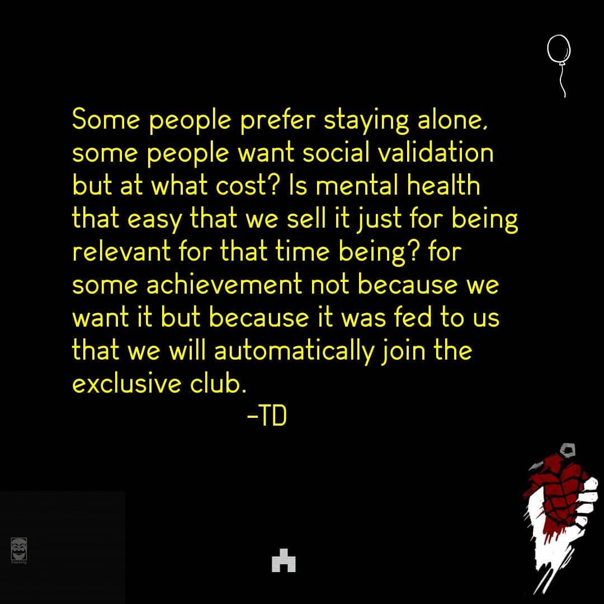
Has Camera Metadata |
May 02, 2020 4:41 pm
Everybody wants to believe in conspiracy theories because it helps life make sense, It helps us believe that somebody is in control, that somebody is calling the shots. -Edward Snowden PS: The caption has nothing to do with the above image to read more about the post, link in bio. #mirakee #writersnetwork #lovepoem #igpoets #artlixirpoetry #writerscommunity #prose #writingcommunity #poetry #poems #quote #quotes #wordporn #writersofig #creativewriting #wordgasm #spilledthoughts #bymepoetry #instapoetry #lovepoem #sharvilakwrites #micropoetry #tinytales #literature #poetsociety #loveyourself #writing #yourquote
Apr 13, 2020 3:52 pm
Have you ever been bullied? but not in a way by beating you till you don't get up but in a way where you are humiliated in front of your friends? they spread rumors about you the time you rejected their request and calls you a monster for doing that. Losing self-respect, just for the sake of something as small as their view about you now. It was definitely love, but it died somewhere knowing you. I lost you somewhere, where i was not ready to look. Every urge and every greed to be the better for you, I forgot to be myself. Somewhere I became what you always wanted me to be But i lost myself somewhere. I'm sorry this is more important for me Rather than being a bullied kid who was brainwashed on the logic of love. If I was there for some intentions, I'd date a golddigger. Thank you for being a bully in my life, not even me knowing it. Yes I might be using the "wrong Terminology" But since you know me so well I want you to think about it. I don't care about that friend with whom you stopped talking because once I joked about him. If you can't care about your own problems and projecting them towards me, then where would you be when i come up depressed sad and want someone to listen to my bad day? PS: I'm just playing honey, you know I love you 😘
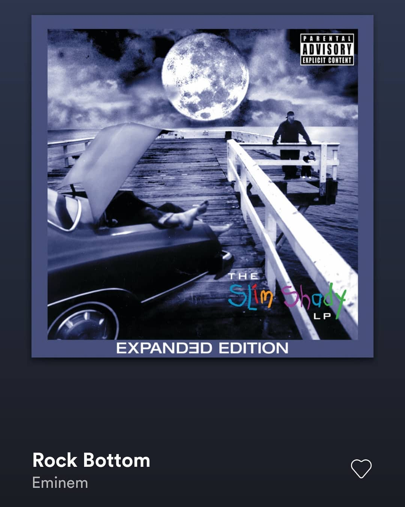
Has Camera Metadata |
Apr 12, 2020 12:41 am
I wish I was like you Easily Amused Living the moment and worry about my happiness and solace. I wish I could get out of the herd and find my road I wish I could be like you Where if asked your biggest mistake of your life was how you didn't get the last puff from our last cigarette half an hour ago And you never categorized your best moments, because you live for that moment not for memories. I wish I could be like you You never stop yourself from having fun, Instead you adapt to be in that environment. Thankyou for coming in my life and teaching me.
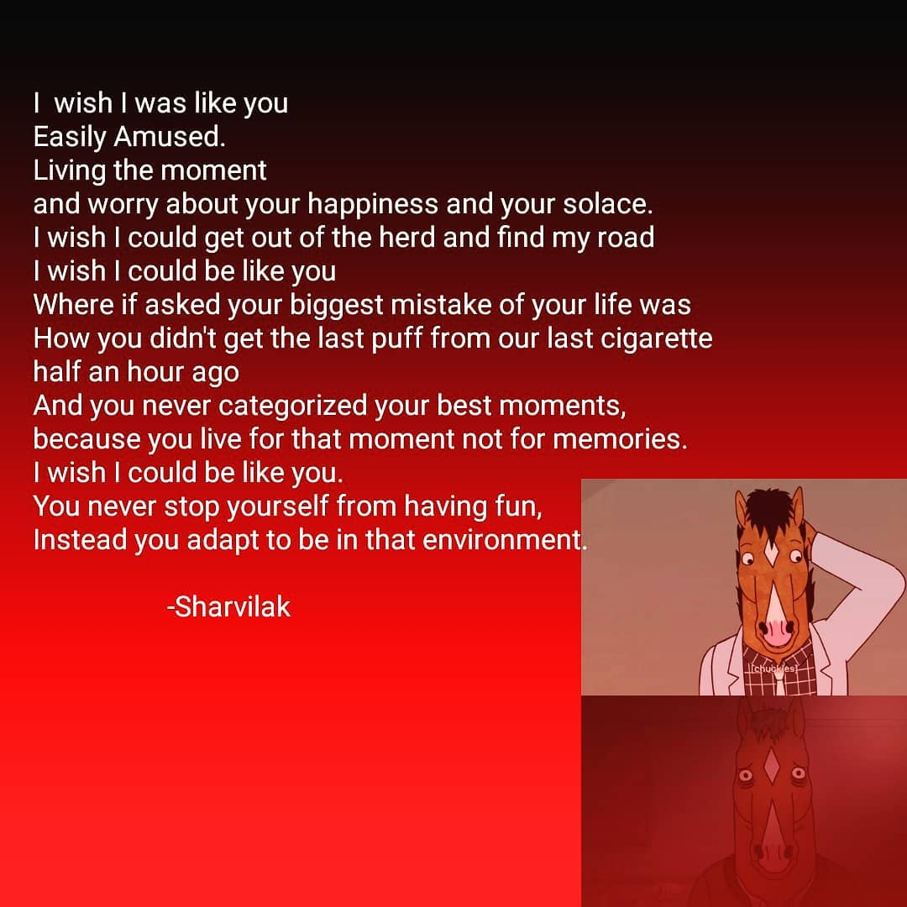
Has Camera Metadata |
Apr 10, 2020 2:16 am
I've worshipped wrong people all my life, whenever I've got a sense of direction or whenever someone guides me to that point. All my life I've been a follower. I never thought it would be cool to command something And when I got the opportunity, I misused. And I get it why it didn't work out. I thank all those people who've been my role model or whenever I've misused the term Role Model to someone who has influenced my life to be someone's slave by following their footsteps and listen to them always and please them otherwise they won't be telling me the secret of happiness. By following their beliefs Following their footsteps obeying their every advice, Because that gave me pleasure. There was a time when that person was a hero to you. Until you know when that curtains fall, the make-up, the mask gets removed and when you listen to those stories from the creator himself. you find yourself in a situation where you are stuck with questions, you wish somebody should have told you it'd be like this. sit down, if you are standing, You are the controller of your own life. Aren't you tired of being a copy in this world? When are you going to find that one thing in your life? Which will keep you awake at 5 am till the morning finding the solution as you sip that coffee and start working already till the office starts at 8 am. What is the one thing that you like about your life you will love to do even moments before you sleep stuck with some question or even think about it in the dream, getting answers from the subconscious mind? Have you ever loved something for so long that you want to continue living your life with that existence, no matter what? Have you ever loved your work to that extend? Remember to question yourself and know your worth before assigning them to be your role model because we start idolizing them based on the words they say we never dare to look behind the curtain where the real story starts. Well, whatever, Nevermind! Whenever you read this please think about this. -TD
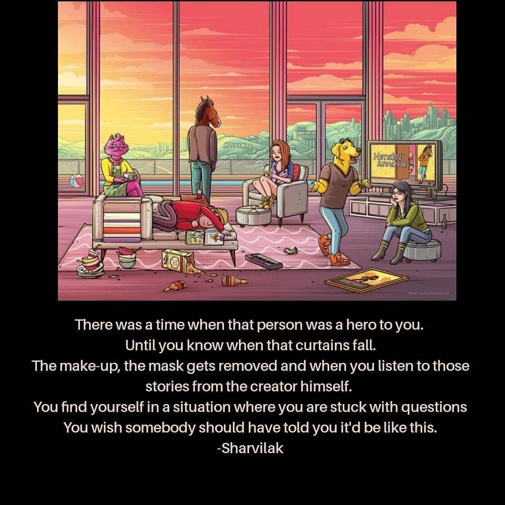
Has Camera Metadata |
Apr 04, 2020 12:30 am
Responsibilities will come You will learn how to handle the biggest of things. Right from meeting the significant one to meeting your daughter's new family. You will become a professional in that place You will learn new things about how to handle situations of which you are not even feeling it. It won't be a scary ride to reach there and find a temporary house there. The only thing you'll learn is courage to jump from home to a completely new place where you know you will find yourself a place. There are many Commitment problems in relationship, but once when you start looking from their shoes you will learn a completely new person altogether. Who's life you haven't imagined. But you fight your way to the top where you stop bothering about them much but look at your own demons who grew old while you were busy looking through rose colored glasses. So what if it was not true love from that side And they went back where she found you. She never loved you the way you did. You waited for her but she was already forgetting you in someone's else arm. Have a drink to that You've loved the wrong one this much Imagine how much are you going to love the right one. You learn something from each and every experience Relationships are tough Knowing each person deeply and then forgetting each small token of love given in the time being. But once you learn how to swim, you learn new techniques. It's not hard to keep it with you But to keep the consistency is something we learn And with that we survive. Each and every relationship has this. We're just blinded by something through which we are not able to see. We're sometimes blinded by the lies we think they are the truth. Like the other day you found your long term girlfriend is thinking about leaving you because you are not the same guy you were at the start of relationship. Keep talking about how one feels even when it is not necessary. It'll keep you updated with what to do next. And even for future it will help Like that one time you were in Froyo shop Wondering what's her favorite flavour of yogurt. *Continued in comments*
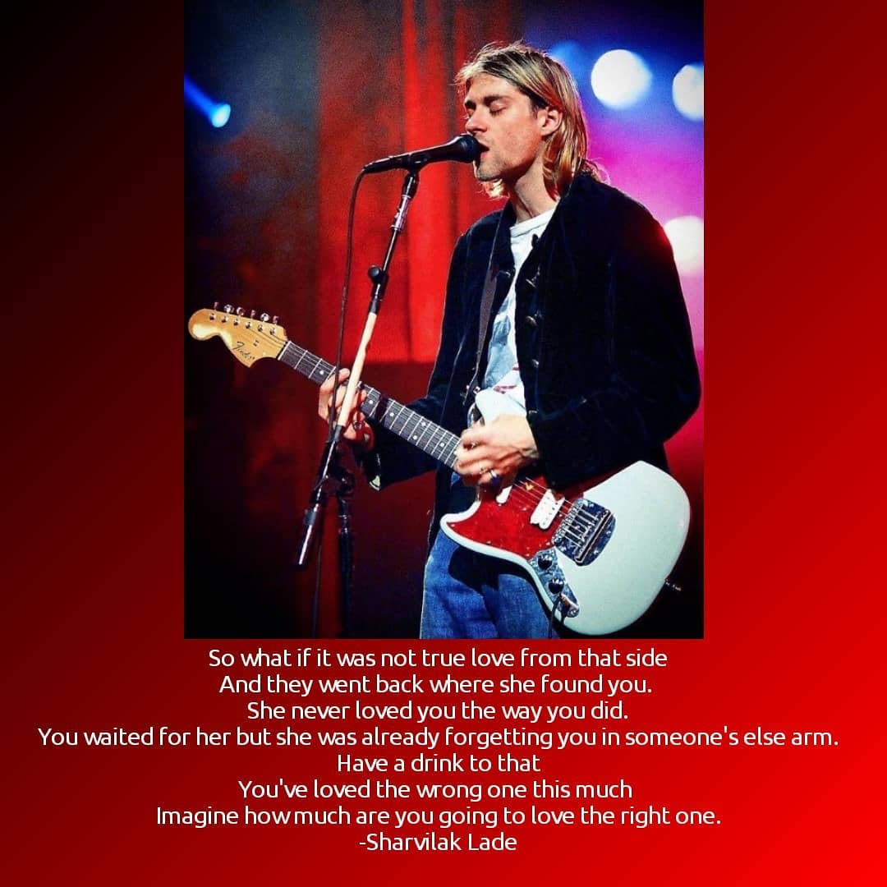
Has Camera Metadata |
Mar 20, 2020 1:48 pm
It's the greed they taught us about how expensive they are and how much work is needed to reach at that stage. But you only look at the good side and try to become them. Little did you know you're already being someone's copy of a copy. And you just look at yourself with whole another perspective and see a peasant doing his daily job for a weekly cut and eagerly waiting for weekends to chill with lo-fi playlist playing in background when you think you're not unique. You are not special. You are just like everyone else. And that loneliness scares people till now. You may have seem people with more than one start-up because in their mind they're thinking about plan B. Once when you are told about plan B you relax a bit and think of it as an option. But what if I tell you that your time is now. To sink in this wall or get up and start something which you like the most. When do you say you really like that thing? When was the last time you said to yourself that you like that and want to do that? Only when you were kid, right? What changed? And when you find that one thing which makes you completely happy, you are free Because your mind is diverted into something else until you find a way to live with your passion, like it's your work Don't be a follower, Look how fun it is to take incharge of the most valuable thing in the world, Yourself. Do what moves you. (Last line credit @vizdumb)
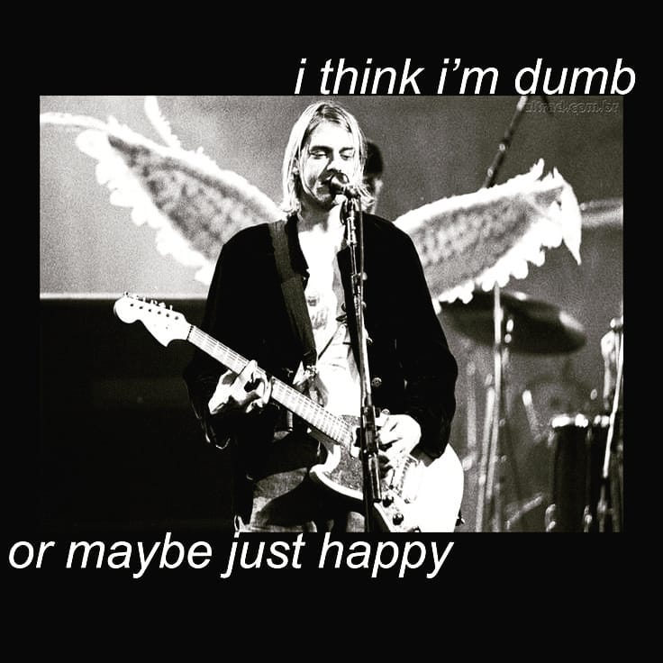
Has Camera Metadata |
Mar 09, 2020 1:17 pm
I got to know about the time when you were close to knowing the true me. But something changed at that time, maybe it was the seratonin spread in my body or else. You opened some doors which I was afraid to go on. Nostalgia is a bitch But that's how you learn To correct the past mistake And not make the same mistake again. So, thank-you for everything you did for me Every moment with you was worth it.
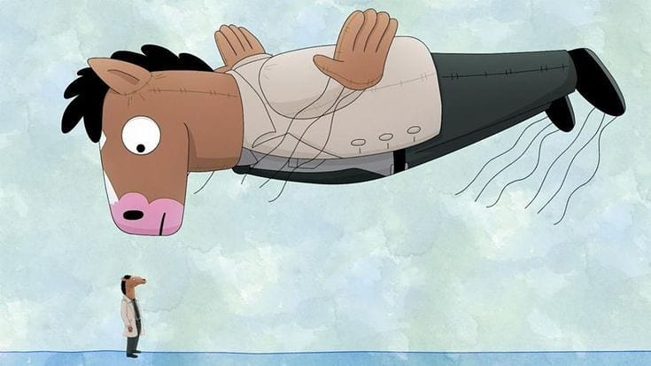
Has Camera Metadata |
Feb 25, 2020 12:34 am
A relationship started on a wrong node will always bound to fail. Every lie you say or every fake attempts on being cool will prove false. Love should come from beneath to tell everything truth about your life -Sharvilak Lade
Feb 05, 2020 2:13 pm
Its not about how many times you fall in love or how mamy times you're heartbroken. There are always se consequences which could make your decision on the basis of other's behaviour. But when you start thinking for yourself You'll know You've never loved anyone this deep to let her be in your random, silly, or funny , drunk memories The idea about having a Significant Other was to tell others and be proud of their feedback When was the last time you lived for your own? If you don't sit on one knee for more than once Let it be in your thoughts or in real life. If she isn't part of this memory then why mourn? If you have found peace in something you love to do And she ain't part of this then why think about her all night? Isn't it funny that we shield ourselves with many layers and sometimes they don't even get through first but in other aspect they're about to hit the final layer? And still we fear something. Maybe it's the fear of rejection Or maybe its the fear of losing someone As a friend or family. Or maybe it's the fear of not being able to focus on and lose it all? When you tell me about your problem it's ours too Because that's what love has taught us to be in their best and worse But whenever I tell you about my problems it's just my problem, how? Why have risk of losing everything for that one specific if they're not being able to cross the road in front of their home? Why not meet in between where we have equal things to lose and then talk about sacrifices? -Sharvilak Lade . . . PC: @pinterest
Jan 28, 2020 12:06 am
We seek hapiness in other things we do Like having a drag of Mary Jane or go out for a drink. We try to find reasons to be happy but eventually end up with some commitments to it. Let it be getting a pet or going to the hills or beach and listen to the crickets chirping or the calm voice of shores. We all think sharing our hapiness with someone would make us feel better as the Serotonin levels are at apex. We plan to meet and hangout for that time being and goof around, We think socializing is the key to forget the past we're going though. Or take that like trail and trek your way to the summit. Or just put your headphones on and listen to the artist's struggle as you feel related to them. Instead of knowing our enemy we try to run from it while keeping ourselves busy with other things like work harder in our jobs or spending more time in the gym or taking the long route from work to home. And then make them the things about which keeps you happy. Maybe hapiness is just a catalyst of how you feel about your life. And since we're greedy finding hapiness in other thing or imagining our lives like other successful people, like those 1% of the people in the world. It's hatd to be happy by keeping much expectations but if you achieve that level of hapiness by not caring about anyone else and fight with yourself for your betterment and pampering yourself with the things that gives to Joy. Maybe we are crucified to be satisfied. -Sam Sepiol
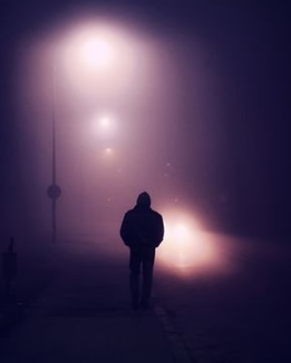
Has Camera Metadata |
Jan 13, 2020 5:24 am
You smoke another cigarette in a hope that it will help you to sleep but it doesn't get you high anymore, it just makes you numb, momentarily; you look into the smoke that you just puffed you without any thoughts in your mind. The nights are longer and so is your restlessness and you can't find an aid for it. She has been gone and you know it. It was for good..., maybe, you tell yourself but the truth is that you miss her and there is nothing you can do about it so you take a long puff, inhale the whole tar that cancer gifiting product has to offer with a hope that your mind will find some peace. There is a lot that adulting teaches you but most importantly you start reading yourself, slowly and gradually, you make mistakes but you do. You start finding there is a part of you which asks for love and care and you are too shy to ask for it and the weirdo you are, you think nobody would get you but then you find someone with whom you tune in well, who understands your irrelevant jokes and talks, who sees how fragile you are and yet hold you together which makes you feel stronger ever than before. Your world start revolving around that person and out of love you start acting like someone who is not you, unknowingly; you care a little too much, you love a little too much and without even knowing you start overdoing things. You dream of a world of two and now you can that world is startling, there is a gut feeling in you that something wrong is about to happen and it eventually comes to an end, your world crumbles and here you are back to square one adding more pain and grief. You seek for your friends but then you think they must be busy with their lives or you are just scared that you will be made fun of, again. You start acting out cool, you go back to your addiction - alcohol, ciggarettes, marijuana because unlike human being it gives you company, peace and always stick around you but deep inside you are desperate for someone to be your side, to listen how actually you are feeling and learn how you been alcohol-ing all your bruises and then you miss her, you want to hug and kiss her and tell her how not okay you are. -Sam Sepiol
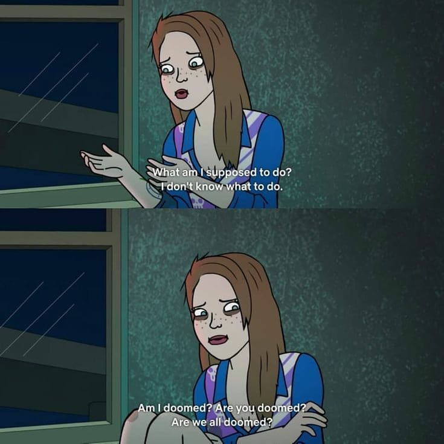
Has Camera Metadata |
Dec 18, 2019 5:49 pm
I think I'll quit soon I'll stop writing I'm sorry if I ever made you feel relatable with me And now you're feeling betrayed that you don't have any words which you can express it to via your girlfriend/friend It's not the writers block which is stopping me , it's just somewhere between learning to write and write a piece in 10mins i grew up It was fun for a while to think about it and then write my heart out But now at this point the fun is gone... It's like a toy. Once the toy get bruised up you know it's time to do something It's not like the writer in me is dead, it's just the enthusiasm which pulled me down and it's on me if i want to get back up and ignite the fire i can but now it's time to get back in old form... I miss the old Innocent faced dickhead who used to do his work and booze and sleep. I recently read one of my favorite work..and i was shocked to see how it was perfect for me.. But now i think I'm done here.. The writing somehow is affecting my mental health as well.. before i go insane it would be okay to leave this world as soon as possible.. Maybe I'll come back, Maybe I'll not Who knows.. My mental Illness is not letting me work properly Everything is not a poetic Sharv People around me started judging me from my stories I barely get time to my family because I've been busy with my work and then this...so somewhere something's gonna get sacrificed! But this time it's on me if i want to come back or not I'm proud of writing Kiara-Sharv love story ...but some how it's affecting my personal story... It's like I'm writing a story and not having my own personal life... Signing off Yours once fav writer Sharvilak PS: Love the Addict , Hate the Addiction . . . PC: Pinterest
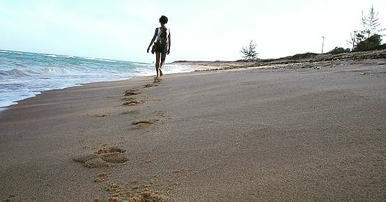
Has Camera Metadata |
Jun 01, 2019 8:35 am
If you ever leave me please promise me one thing Whoever you end up with Please make sure, He kisses you first thing in the morning and tell you how cute she looks while sleeping how she peacefully cuddles plushie and then open her eyes. Please tell him you're a coffee person than chai. Please tell him to pamper you alot and mention her in stories in form of memes and comics. Please tell him that she's fragile, should be handle with care and take care of her like she's one of your puppy. Please tell him to bring flowers, listens to you, give you life advice in a silly way And support you at every possible event. Tell him that little things matters to you And tell him how you like hugging him No matter if he took bath or not And tell him how you love to tease others and tell him to start taking jokes on himself too And promise me one thing That you'll find someone better than me Even after 10 Years if we meet and you're carrying his baby I'll be happy, thinking you're doing great. I just want you to be happy with your life. Take care of you Because she's the diamond i lost while searching for coal. Yours Always Sharvilak PS: In the middle of Chaos I found you, The world maybe broken but hope is not crazy . . . Art credit: @muhammedsalah_ . . . . . . . . . . #poetry #business #poetrycommunity #entrepreneur #writersofinstagram #entrepreneurship #poetsofinstagram #businessman #poetryisnotdead #businesswoman #poem #success #writer #businessowner #poems #sharvilakwrites #poet #businesslife #writing #startup #poetryporn #marketing #poetsofig #businessowners #poetryofinstagram #entrepreneurs #writersofig #businesstrip #love
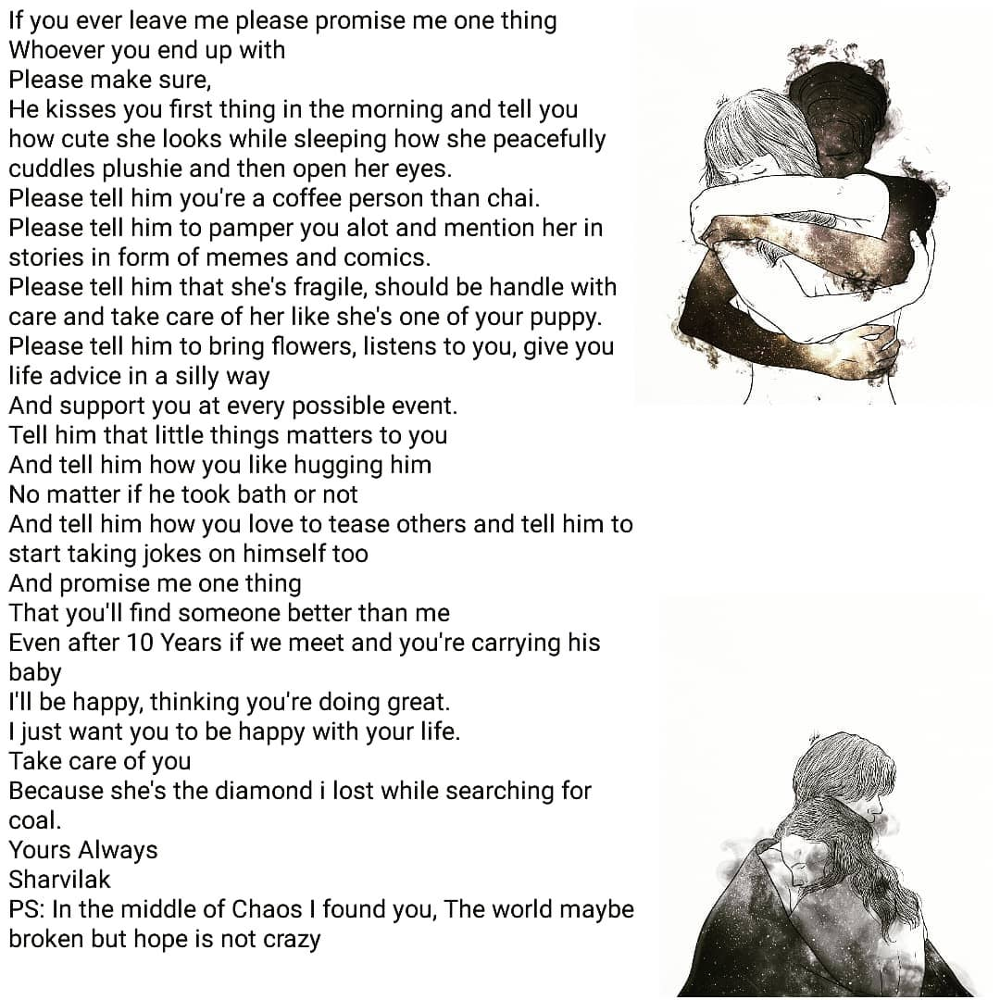
Has Camera Metadata |
May 11, 2019 1:51 pm
Death is one sure thing But the beauty lies in uncertainty. So live the life to the fullest, Maybe one day, One day, You are gonna achieve something significant. It may not be a big for you But it will definitely affect somebody's life Who knows You are Somebody's role-model So don't stop shining Keep that smile Up and Do whatever your heart say to. . . . Art credit: @pascalcampionart . . . . . . . . . . . #poetry #business #poetrycommunity #entrepreneur #writersofinstagram #entrepreneurship #poetsofinstagram #businessman #poetryisnotdead #businesswoman #poem #success #writer #businessowner #poems #sharvilakwrites #poet #businesslife #writing #startup #poetryporn #marketing #poetsofig #businessowners #poetryofinstagram #entrepreneurs #writersofig #businesstrip #love
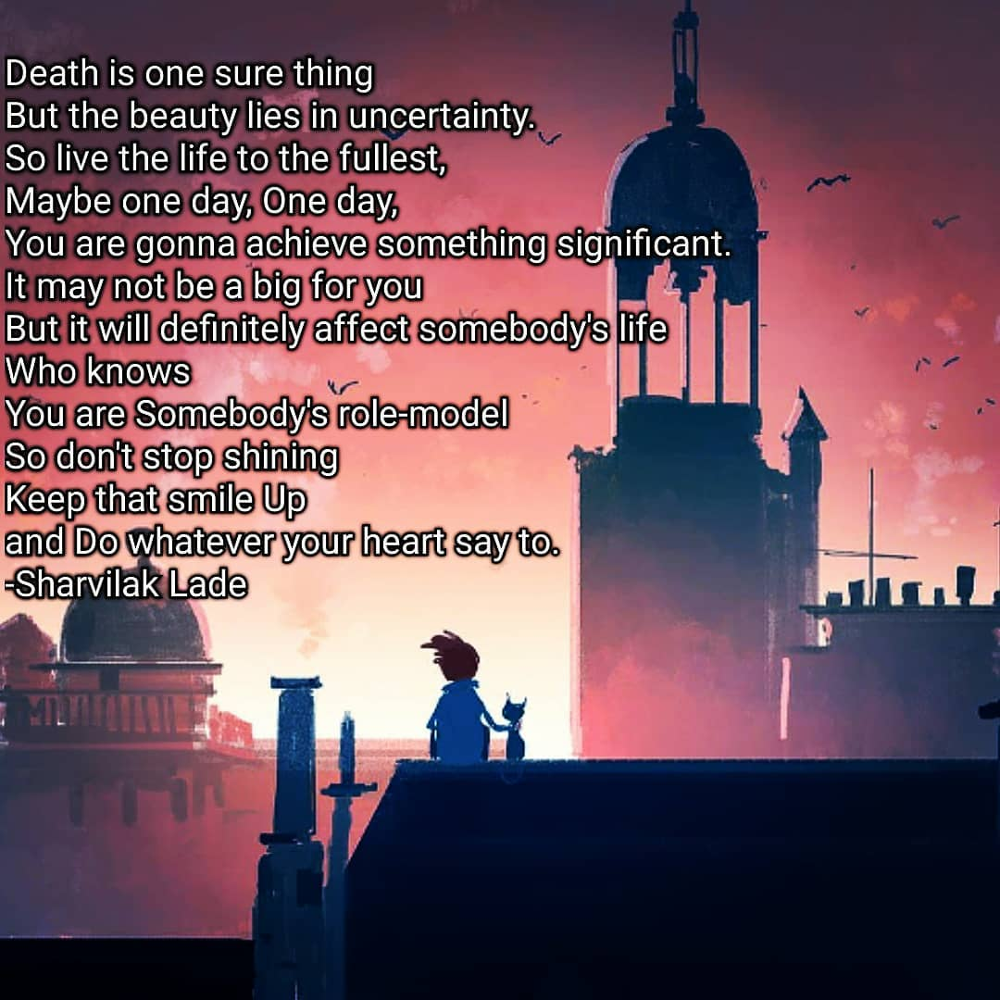
Has Camera Metadata |
Apr 26, 2019 1:51 pm
There's always this one song Which lives through the person's life Whenever they feel low or high they listen to it For her it was Photograph by Ed Sheeran. It's not the rhythm why they love that song so much It's the meaning beneath the lyrics Or the way which is being portrayed in the song. It's not the words which she fell for It's the feeling associated with the song. Don't list that song as heartbreaking or romantic maybe they've associated themselves with totally opposite of what the song wants to say. Maybe it's the song playing on her phone when they they met Maybe it's the song playing on radio when she was at her worse Maybe it's the song playing on pub which she could relate the most when intoxicated. Every person has a different approch in their favourite song It's just strange we do know the song But not the meaning that person thinks with . . . Art credit: @93.minho . . . . . . . . . . . . #poetry #business #poetrycommunity #entrepreneur #writersofinstagram #entrepreneurship #poetsofinstagram #businessman #poetryisnotdead #businesswoman #poem #success #writer #businessowner #poems #sharvilakwrites #poet #businesslife #writing #startup #poetryporn #marketing #poetsofig #businessowners #poetryofinstagram #entrepreneurs #writersofig #businesstrip #love .
Apr 24, 2019 7:24 am
The kid inside me is still alive But has lost it's direction to express himself Maybe now he's been called as childish and Thus supressed in this world . . . Picture credit:Pinterest . . . . . . . . . . . #poetry #business #poetrycommunity #entrepreneur #writersofinstagram #entrepreneurship #poetsofinstagram #businessman #poetryisnotdead #businesswoman #poem #success #writer #businessowner #poems #sharvilakwrites #poet #businesslife #writing #startup #poetryporn #marketing #poetsofig #businessowners #poetryofinstagram #entrepreneurs #writersofig #businesstrip #love
Apr 23, 2019 9:54 pm
Dear 13 year old goth wannabe me, I can tell you stories about your future at this point But that's just gonna ruin the experience of feeling it from the bottom of your heart You'll soon find out why I'm not going in details But let me tell you something so you don't be depressed for a long time. You're soon gonna realise the songs you listen are just 5 minutes long and not longer than that. You're soon gonna find that one show you'll watch again and again, just for life lessons. You're gonna find the love of your life You're gonna find the meaning to live. You'll soon realise you don't want a normal 9-5 job but someone who is waiting for you at your place which you'll no longer call it a room but HOME You're soon gonna realise most of your friends are temporary and you'll cry over the lost friendship People are gonna use you, manipulate you just for the pleasure of toxic things in your life. But remember one thing Don't lose any hope, Remember the kid who used to design GTA maps? Remember the kid who first when saw that blue DOS screen turning into a solving tough algebraic equations? Remember the kid who used to look at his parents and think when will he get the same thing? Keep that kid in you alive Don't kill him. One day you're gonna get drunk and call people and tell them how much great your life is going on or cry over the calls at 3am because you failed in that exam. Don't let failure decide your future. Don't let others to decide your future One day you're gonna wake up and inside you'll feel numb and heartbroken but don't you worry child, Remember good things happen to good people. Just stay the way you are And every mistake you will be making is a path to the bright future. One day you're gonna get tired of all these stuff and want to run into someone's arm and just cry till it gets over. But it's okay to be weak at times Because you're an amazing human being just in the process of making. -Laden PS: Don't Go for Physical attachments, focus on Emotional Bondings. PPS: I was said i look cool in those sunglasses.
Apr 21, 2019 3:47 pm
. Sometimes when i miss you I write to you Sometimes when i miss you I stalk your account Sometimes when i miss you I read our old chats Sometimes when i miss you I look at the moon Hoping you'd see sometime And know we share the same sky Sometimes when i miss you I talk to your pictures constantly Sometimes when i miss you I cuddle my pillow so hard Until i shed a tear or two I started roaming outside alone in the dark Hoping nobody to see me As i talk to myself about how life has turned amazing Since Wednesday the 9th. I started taking long rides Just to be with my thoughts which is missing your Presence I started growing up a bit daily Just so one day i could make you feel proud. Relationship for me was just a term for me Where society forced us saying it's necessary But you showed me the bright side of loving unconditionally like father to his child or brother to his younger sister You must be some kind of wizard because you change my thought process just in a snap.. Like Thanos You must be some kind of God's Person , because even giving you reasons that I'm not perfect But you were there, holding my hands looking into my eyes and said 'if I was to find something perfect it wouldn't be love anymore it'd be just a relationship with no exciting things to know about others.' Love isn't about finding the perfect one and stick to it. Love is about finding the exact same weirdo as you who loves doing peculiar stuff which you love, make memes, roast you, cries with you, laughs at your silliest jokes, consoles you whenever you're down, cheer you up, motivate you through thick and thins and help you without reasons asked, and always keep you happy no matter what. If you have found the one who checks the above list, then please don't let them go, they're gem. . Art credit: @kwon___a . . #poetry #business #poetrycommunity #entrepreneur #writersofinstagram #entrepreneurship #poetsofinstagram #businessman #poetryisnotdead #businesswoman #poem #success #writer #businessowner #poems #sharvilakwrites #poet #businesslife #writing #startup #poetryporn #marketing #poetsofig #businessowners #poetryofinstagram #entrepreneurs #writersofig #businesstrip #love
Apr 21, 2019 1:42 pm
You can give million reasons on why this is not working properly But I have only one reason, because of which I'm fighting hard to retain it. My reason is your happiness. If you are not happy with me or I'm not the one for you You can leave anytime you want But remember, stay happy With me or without me i won't care But stay the way god intended you to be An Angel Day One or One Day, you decide . . . . . . . . . . . #poetry #business #poetrycommunity #entrepreneur #writersofinstagram #entrepreneurship #poetsofinstagram #businessman #poetryisnotdead #businesswoman #poem #success #writer #businessowner #poems #sharvilakwrites #poet #businesslife #writing #startup #poetryporn #marketing #poetsofig #businessowners #poetryofinstagram #entrepreneurs #writersofig #businesstrip #love color.my.life.with.chaos.of.trouble
Apr 19, 2019 5:28 am
Maybe We're Afraid of long term commitments Because childhood promises were never made . . . Art Credit: @theartidote . . . . . . . . . . . . #poetry #business #poetrycommunity #entrepreneur #writersofinstagram #entrepreneurship #poetsofinstagram #businessman #poetryisnotdead #businesswoman #poem #success #writer #businessowner #poems #sharvilakwrites #poet #businesslife #writing #startup #poetryporn #marketing #poetsofig #businessowners #poetryofinstagram #entrepreneurs #writersofig #businesstrip #love .
Apr 15, 2019 4:35 pm
When was the last time You felt free from burden When was the last time You had a drink peacefully When was the last time You enjoyed a cigarette We all chose this hobby To make us feel little distracted And that leads to simple addiction When was the last time You had a heart to heart conversation With your family? When was the last time You did all your chores Without any mortification? Why is it happening so That your favorite chore Is just now a hobby you rarely touch? Maybe all you need is to find Solace in Solitude . . . . . . . Art Credit: @sedac.art . . . . . . . . . . . . #poetry #business #poetrycommunity #entrepreneur #writersofinstagram #entrepreneurship #poetsofinstagram #businessman #poetryisnotdead #businesswoman #poem #success #writer #businessowner #poems #sharvilakwrites #poet #businesslife #writing #startup #poetryporn #marketing #poetsofig #businessowners #poetryofinstagram #entrepreneurs #writersofig #businesstrip #love
Apr 12, 2019 11:44 pm
Isn't it strange ? That sometimes when you are hurt from inside, You just hurt yourself from outside. And you feel good when you smoke a cigarette or drink alcohol, even knowing it's killing you slowly What is it about feeling again and again to be happy And not experiencing it and move on? Why is human brain stuck on loop? Where the world has found images of black hole While you're still stuck in your black past When will we grow up? When will we learn that it was a one time thing and never gonna happen again!? Sometimes what you need is a vacation from everything that's happening and stop comparing yourself with others. Be responsible for your own happiness. Analyse what should and what should not be done. Maybe just climb that hill, or go for a long drive or just go to that bar alone sit all night talk to yourself and get to the bottom of problem and come up with a conclusion on what you really want in your life . . . . Art Credit: @muhammedsalah_ . . . . . . . . . . . . #poetry #business #poetrycommunity #entrepreneur #writersofinstagram #entrepreneurship #poetsofinstagram #businessman #poetryisnotdead #businesswoman #poem #success #writer #businessowner #poems #sharvilakwrites #poet #businesslife #writing #startup #poetryporn #marketing #poetsofig #businessowners #poetryofinstagram #entrepreneurs #writersofig #businesstrip #love
Apr 12, 2019 3:21 am
_____*Read comment for complete writeup*___ Have you ever had a conversation with your soul heart and mind? Where soul is saying different things While heart and mind is still digging into mistakes due to which it got out of rib and danced for that one girl and was assassinated the moment she said NO to you? While mind is teaching the heart that love is not done in the way you think Love is being materialize more than the emotional bonds, maybe because of it the term love is being dismissed by many due to the failure Love is being compared by people with things like how much has they spend on perfect date or what would be a proper place to propose her to be the perfect half. Meanwhile heart is being reckless in this decision and soul is compromising things between both for the betterment of the person. The kid in me eventually died the day when i started believing in toxic things like alcohol and Mary Jane to keep my mind from thinking and let heart win. Maybe the day I started sleeping with that bottle was the day I lost the innocent kid which used to stay curious about all new things. Who knows what's legal and illegal and how to practically use integration and differentiation in life, like leaving all the bad things to differentiation and good things to Integration. Maybe that's the day when the kid inside of me became matured enough to change the 'Me time' from watching cartoons to chugging beer. Ever miss the old you says the soul to both of them? When was the last time we all prepared to do that one project? When was the last time we sat on a bike like 3idiots and head towards same direction? When was the last time you didn't cared about others and did what you wanted all along? Mind and brain starts wondering with what could be the possible reason that everything around him changed. People started to behave more maturely They started growing expectations as getting older Become responsible to your own actions Nobody's gonna save you this time
Apr 11, 2019 9:59 pm
Amazing art by: @_sara.miller_ #poetry #business #poetrycommunity #entrepreneur #writersofinstagram #entrepreneurship #poetsofinstagram #businessman #poetryisnotdead #businesswoman #poem #success #writer #businessowner #poems #sharvilakwrites #poet #businesslife #writing #startup #poetryporn #marketing #poetsofig #businessowners #poetryofinstagram #entrepreneurs #writersofig #businesstrip #love
Apr 10, 2019 10:07 pm
One day I will wake up With cigarette beside me While I light her up And start my day One day I will wake up With a letter beside me While I read it every morning And start my day One day I will wake up With an envelope beside me While I post it to their HQ And start my job there One day I will wake up With you beside me And that day I'll say This is what I wanted all my life -Sharvilak Lade . . . Beautiful Art by: @maniacodamore ❤️ . . . . . . . . . . . . #poetry #business #poetrycommunity #entrepreneur #writersofinstagram #entrepreneurship #poetsofinstagram #businessman #poetryisnotdead #businesswoman #poem #success #writer #businessowner #poems #sharvilakwrites #poet #businesslife #writing #startup #poetryporn #marketing #poetsofig #businessowners #poetryofinstagram #entrepreneurs #writersofig #businesstrip #love
Apr 08, 2019 1:49 am
I've been with you at your darkest days I've been with you at your best days I'll always be with you ..just not following you or ahead of you but just beside you Always will be a shoulder you can trust on Always give you life tips and tricks Whenever you need the most Guide you, motivate you and fight all Those problems which arises in our Relationship like a team PS: I Love you ❤️ . . . . . . . . . . . . . . #poetry #business #poetrycommunity #entrepreneur #writersofinstagram #entrepreneurship #poetsofinstagram #businessman #poetryisnotdead #businesswoman #poem #success #writer #businessowner #poems #sharvilakwrites #poet #businesslife #writing #startup #poetryporn #marketing #poetsofig #businessowners #poetryofinstagram #entrepreneurs #writersofig #businesstrip #love
Apr 05, 2019 8:39 am
I sneaked up to Terrace To get perfect view of sunrise while buzzed up over few drags and to let enter the Stingy light In my sad and depressing phase of life No Friends, No Girlfriend, Not a shoulder to cry on. These days even can't trust anyone People bragging about Bro-Code are the one who's breaking it People talking about trusting them are the one who can't be believed Was it my fault that I wasn't loved in past 20 years and now when I had a chance, she got together with an ex? Was it my fault that I trusted her more than anyone in this world? Was it my fault to give her all those silly presents and making those First months of everything anniversary? Maybe it's my fault who was surrounded by people Full of fake promises and for some minutes of pleasure how they manipulate the other to get into their pants Maybe it's my fault who was trying to get the hottest girl available Maybe it's my fault Who didn't hear the bad side of loving devotedly Maybe it's my fault that I tried to make a move on her Maybe it's my fault that I Didn't try to sleep with her even after 3 months of the perfect relationship Why does every date that ends up in one house Should end-up with sleeping together Having "love-making" sessions Why can't it be more like having a good time till the sun rises and then come-back to hostel and sleep cherishing the moment we had with each other -Aadi . . . . . Art credit: @kingasart . . #poetry #business #poetrycommunity #entrepreneur #writersofinstagram #entrepreneurship #poetsofinstagram #businessman #poetryisnotdead #businesswoman #poem #success #writer #businessowner #poems #sharvilakwrites #poet #businesslife #writing #startup #poetryporn #marketing #poetsofig #businessowners #poetryofinstagram #entrepreneurs #writersofig #businesstrip #love
Mar 31, 2019 8:58 am
Everyone has their own pressure points Sometimes it's high as empire state building Some has it's low as foundation of building Just get to know where to pull the strings . . . . . . Beautiful art by: @muhammedsalah_ . #poetry #business #poetrycommunity #entrepreneur #writersofinstagram #entrepreneurship #poetsofinstagram #businessman #poetryisnotdead #businesswoman #poem #success #writer #businessowner #poems #motivation #poet #businesslife #writing #startup #poetryporn #marketing #poetsofig #businessowners #poetryofinstagram #entrepreneurs #writersofig #businesstrip #love
Mar 26, 2019 1:03 pm
she can handle you At your worst, If she can tame the demon that Resides inside of you, She's the one And never lose her No matter what . . . . Amazing art by: @muhammedsalah_ . . . . . . . . . . #poetry #business #poetrycommunity #entrepreneur #writersofinstagram #entrepreneurship #poetsofinstagram #businessman #poetryisnotdead #businesswoman #poem #success #writer #businessowner #poems #sharvilakwrites #poet #businesslife #writing #startup #poetryporn #marketing #poetsofig #businessowners #poetryofinstagram #entrepreneurs #writersofig #businesstrip #love
Mar 25, 2019 8:05 am
If you can't protect her from her insecurities Then you don't deserve to have her . . . . Beautiful art by: @gyung_studio . #poetry #business #poetrycommunity #entrepreneur #writersofinstagram #entrepreneurship #poetsofinstagram #businessman #poetryisnotdead #businesswoman #poem #success #writer #businessowner #poems #motivation #poet #businesslife #writing #startup #poetryporn #marketing #poetsofig #businessowners #poetryofinstagram #entrepreneurs #writersofig #businesstrip #love
Mar 24, 2019 11:52 pm
If you could see me now You'd probably understand That I'm finally happy All those taunts which stopped me All those comparison which dejected me From everyone All those bad publicity saying He is weird stay away from him He's in love, he changed and not with toxicity anymore All these doesn't matter me now You could tell anything you want Because it won't affect my shell of circle You can bad-mouth me all you want It doesn't matter because I've changed Looking at the end of the tunnel I can finally see the light And I'm moving towards it. It may switch off by the time i get there But it'll change me I'm ready for it Because if we're not evolving then what's your definition of life? I might not be the same guy as i was 5 years ago Because 5years ago i used to think i know something about the world But i was blinded by the pride That at 22, I'm still that stupid Now, that I've changed I'm liking it here I might not do the same mistakes i did I might not choose to the that path again Or i might come back But this time I'll be changed boy. The boy who learnt something from mistakes The boy who was too dumb to not look the outline That he's been filling the void with chicks booze and TV episodes Thankyou for opening my eyes and telling me I've been ruining my life I'm a shitty child yet i tell them everything is fine when life is not going as it should be. I'm a shitty boyfriend yet i try to do everything which is possible. I've been crying since 5years My prayers were heard by a beautiful soul And taught me how to live properly Thankyou Your Worshipper I love you . . . . Amazing art by @shaza.wajjokh . . . #poetry #business #poetrycommunity #entrepreneur #writersofinstagram #entrepreneurship #poetsofinstagram #businessman #poetryisnotdead #businesswoman #poem #success #writer #businessowner #poems #motivation #poet #businesslife #writing #startup #poetryporn #marketing #poetsofig #businessowners #poetryofinstagram #entrepreneurs #writersofig #businesstrip #love
Mar 24, 2019 3:55 pm
Read the comment for whole letter. Dear Billie Thank you for writing American Idiot for us Thankyou for making us believe Jesus of Suburbia as we fell in love with him And the songs continuing the storyline of Jimmy and Whatsername Son of rage and love The Jesus of suburbia You made us believed in him how he talks about the end of the world And there's nothing wrong with him It's how he's supposed to be because nobody gives a damn about anything other than him.. You said you fell in love and debt with alcohol and cigarettes with Mary Jane beside.. maybe that's what teenage years i wished i had.. Where I'm reading at graffitis and scripts from the walls and think where did this world went wrong that they had to follow the 9-5 salaried job to survive.. I don't care if you don't Because at the end of the day it's all about you...you even created your alter ego Jimmy.. thinking about why we are the kids of war and peace!? We are the sons and disciples of Jesus of Suburbia.. You also wrote a heart-warming letter to your love.. Yes you are jesus but you were for kids like me..who believed in you Billie.. Whenever i use in my letters 'Dearly beloved' it reminds me of your perfect made verse! "Oh therapy can you please fill the void Am I retarded or I'm just overjoyed Nobody's perfect and i stand Accused For a lack of a better world and that's my best excuse" As you leave your house by leaving your mark on the same place which broke you! You taught us it's okay to make some faults on your story because it's what you are! You are what your actions defines! And you runaway from home finding a less toxic place than where you were ...and called it 'Tales from another broken home' Oh Billie it was not just another broken home... it's a story about the guy who's story everyone sings at your concert You loved the character jimmy so much you lived that character for next 8 songs.. I love it how you talked about feeling after being free from everything in Holiday. And when you know you're all alone Depression hits you with 'Boulevard of broken dreams' As you seek for answers with 'Are we the waiting'
Mar 14, 2019 10:22 am
#mirakee #writersnetwork #lovepoem #igpoets #artlixirpoetry #writerscommunity #prose #writingcommunity #poetry #poems #quote #quotes #wordporn #writersofig #creativewriting #wordgasm #spilledthoughts #bymepoetry #instapoetry #lovepoem #sharvilakwrites #micropoetry #tinytales #literature #poetsociety #loveyourself #writing #yourquote
Feb 28, 2019 7:31 am
Written by my bro @ssauravv30 #mirakee #writersnetwork #lovepoem #igpoets #artlixirpoetry #writerscommunity #prose #writingcommunity #poetry #poems #quote #quotes #wordporn #writersofig #creativewriting #wordgasm #spilledthoughts #bymepoetry #instapoetry #lovepoem #sharvilakwrites #micropoetry #tinytales #literature #poetsociety #loveyourself #writing #yourquote
Feb 27, 2019 11:04 am
I still remember those days... #yourquote #quote #stories #qotd #quoteoftheday #wordporn #quotestagram #wordswag #wordsofwisdom #inspirationalquotes #writeaway #thoughts #poetry #instawriters #writersofinstagram #writersofig #writersofindia #igwriters #igwritersclub #sharvilakwrites
Feb 20, 2019 9:24 am
There's something called relationship which should be in person's life so he could sustain his living A relationship like father or mother really helps to develope a basic self A relationship like brother or sister helps to grow up and learn about the world A relationship like friendship should exist which teaches you about how to build a relationship with others A relationship built on trust hopes and lies should also be a part of this human journey... that's why we make many friends while choosing them to stay or let it go... And after many types of two faced when you look out for you need a partner in life who will be there in your thicks and thins.. who will be there waiting for your inch of presence(let it be a text) even after a bad day. A sacred relationship based on trust expectations and dreams which would come true can only be the one who deserves to know every inch of your life.. who knows what makes you happy what pampers you the most what makes your stress from work go away...who is your best medicine in trouble.... and the best mentor anyone could get Dearly beloved, Did you stole something from me? Because i couldn't find the missing puzzle Which i saw at your place and nobody in this world has the exact same missing piece of puzzle.. I love you Yours Always
Feb 17, 2019 1:39 pm
#mirakee #writersnetwork #lovepoem #igpoets #artlixirpoetry #writerscommunity #prose #writingcommunity #poetry #poems #quote #quotes #wordporn #writersofig #creativewriting #wordgasm #spilledthoughts #bymepoetry #instapoetry #lovepoem #sharvilakwrites #micropoetry #tinytales #literature #poetsociety #loveyourself #writing #yourquote
Jan 28, 2019 1:15 pm
Being in love is one of the best feelings in this world Where you get an unconditional love from parents and till the time you grow up it stays with you And whenever you miss that love, you suddenly get urge to atleast talk to someone who loves you no matter what. I found my nest, my comfort zone in her somewhere, I just love to see her going crazy about me, and then tell her it's okay to go insane.. It's okay to be possessive about something which is yours.. Because it was just rusting somewhere until you polished it. You are the one who revived him. #mirakee #writersnetwork #lovepoem #igpoets #artlixirpoetry #writerscommunity #prose #writingcommunity #poetry #poems #quote #quotes #wordporn #writersofig #creativewriting #wordgasm #spilledthoughts #bymepoetry #instapoetry #lovepoem #sharvilakwrites #micropoetry #tinytales #literature #poetsociety #loveyourself #writing #yourquote
Jan 20, 2019 11:46 am
#Repost @_pehal (@get_repost) One of the best version of expressing new generation.. ・・・ I am a millennial among the millennials. Born in a generation that believes love is just swiping right or left. A generation that wants a love with no commitments. A generation that discards people and feelings faster than things and memoirs. The other day, I went out with a bunch of my old lads. We were meeting after a very long time, almost after about five years. All this while I was weaving conversations we'll have. Maybe we'll talk about school; the fun, the drama, the bunks. Or maybe we'll talk about our ambitions, our future or just about how each one's life is. To my surprise we didn't speak a word about school or future or anything like that rather we spoke about who smokes, who drinks and how many people has one slept with. Like it's some status symbol or a ticket to acceptance. Sex and cigarettes is what my generation is made of. Everyone wants to get into someone's pants but nobody wants commitments. Sex has become a symbol of glory while people like me still believe in its purity. Love is all about sex. There's no line existing between love and lust. My generation lacks kindness, care and affection. It is so easy to pick up a guy from a club, hook up with him all night and forget about it but so difficult to go give someone a warm hug of friendship. So easy to chug down umpteen bottles of beer but no time to talk about a friends' problem over a cup of coffee. My generation is a bunch impassive souls drowning in waves of cigarette smoke that blinds them to real essence of love and care. A generation that believes in addiction to drugs over affection to people. Yes, I have a generation gap with my generation. . . . . Pc- Google . . . #mirakee #writersnetwork #lovepoem #igpoets #artlixirpoetry #writerscommunity #prose #writingcommunity #poetry #poems #quote #quotes #wordporn #writersofig #creativewriting #wordgasm #spilledthoughts #bymepoetry #instapoetry #lovepoem #micropoetry #tinytales #literature #poetsociety #loveyourself #writing #yourquote
Jan 02, 2019 1:25 pm
Read the blogpost... Link in bio #mirakee #writersnetwork #lovepoem #igpoets #artlixirpoetry #writerscommunity #prose #writingcommunity #poetry #poems #quote #quotes #wordporn #writersofig #creativewriting #wordgasm #spilledthoughts #bymepoetry #instapoetry #lovepoem #sharvilakwrites #micropoetry #tinytales #literature #poetsociety #loveyourself #writing #yourquote
Jan 01, 2019 12:55 pm
#mirakee #writersnetwork #lovepoem #igpoets #artlixirpoetry #writerscommunity #prose #writingcommunity #poetry #poems #quote #quotes #wordporn #writersofig #creativewriting #wordgasm #spilledthoughts #bymepoetry #instapoetry #lovepoem #sharvilakwrites #micropoetry #tinytales #literature #poetsociety #loveyourself #writing #yourquote
Dec 29, 2018 8:14 am
#mirakee #writersnetwork #lovepoem #igpoets #artlixirpoetry #writerscommunity #prose #writingcommunity #poetry #poems #quote #quotes #wordporn #writersofig #creativewriting #wordgasm #spilledthoughts #bymepoetry #instapoetry #lovepoem #sharvilakwrites #micropoetry #tinytales #literature #poetsociety #loveyourself #writing #yourquote
Dec 23, 2018 9:12 pm
Your son is roaming with Neha, but did you know she is from lower cast, can you believe your son is soo stupid to be in the nets of a gold-digger? If it was my son, i would've taught him a lesson and ordered him to stay in limits Dear Friend, that's the irony between you and me, I want him to explore the world by himself, and not spoon-feed him everything, let him learn from his mistakes, and if something happens then we will still support him, and I'll be proud to call him my son, Atleast he failed once.. So now next time when he'll be exploring the options, he know what is good for him.. Let it be life or love or anything, He will be ready to face this world when I'll no longer be here... And that's what i want, that each generation learn and evolve by themselves.. And no external help from ancestors #mirakee #writersnetwork #lovepoem #igpoets #artlixirpoetry #writerscommunity #prose #writingcommunity #poetry #poems #quote #quotes #wordporn #writersofig #creativewriting #wordgasm #spilledthoughts #bymepoetry #instapoetry #lovepoem #sharvilakwrites #micropoetry #tinytales #literature #poetsociety #loveyourself #writing #yourquote
Dec 23, 2018 10:07 am
She was panicking when she got to know about how much is she going to miss the workspace because she never had a life outside that office. Was living with her boyfriend who was in the same office, both had the same shift and together they used to come and go, Both were perfect for each other like two broken souls were in the conjunction in their home, Life was great until she got a promotion, a raise but in a different city, eyes were filled with tears, but she was a strong independent women who came in this company alone and in couple of years made herself comfortable, thrill starts where the comfort zone ends. Two months passed by she was working in Hyderabad, but the day before her birthday she wished her boyfriend could be with her. When she confessed this feeling on a call but even the deadline was due for the guy, he said i could've tried but his boss won't allow him for a holiday. Next morning when she opened the door to leave for work,there he was trying to sneak open the door, but when she saw him, she couldn't think spontaneously and hugged him, and kissed him like they've met after ages. When asked what about today's work? He replied, there were important things to me rather than job, and after that call I understood, job satisfaction is temporary but this us is permanent and about the job i know a boss who will make sure i dont get fired. As soon as she heard this she saw how he blush everytime he tries to make her laugh Behind his pride was an innocent person not opening up completely because even she has to leave for work and he can't give him enough constraints, But, An intense Kiss Can mute Pride And she called her boss and asked for leave to spend some time with her boyfriend #mirakee #writersnetwork #lovepoem #igpoets #artlixirpoetry #writerscommunity #prose #writingcommunity #poetry #poems #quote #quotes #wordporn #writersofig #creativewriting #wordgasm #spilledthoughts #bymepoetry #instapoetry #lovepoem #sharvilakwrites #micropoetry #tinytales #literature #poetsociety #loveyourself #writing #yourquote
Dec 06, 2018 8:41 am
Detox me from your life but how can you forget about the good times with me? How can you forget about the half an hour fights which ends up with a goodnight kiss? How can you forget about the silly things we used to argue for hours? How are you gonna forget about the elevation in sanity from depression.. But how easily you threw that off the roof and made me write this.. This ain't no apology letter but just a mental note to myself that never fall in love too much, otherwise you'll meet your old friend depression on the way down. I'm sorry depression to be the stepping stone, i never wanted to use you as the selfish guy who leaves everything for his own greed.. Maybe you're just perfect for me and not another living thing.. #mirakee #writersnetwork #lovepoem #igpoets #artlixirpoetry #writerscommunity #prose #writingcommunity #poetry #poems #quote #quotes #wordporn #writersofig #creativewriting #wordgasm #spilledthoughts #bymepoetry #instapoetry #lovepoem #sharvilakwrites #micropoetry #tinytales #literature #poetsociety #loveyourself #writing #yourquote
Dec 04, 2018 9:36 pm
It's about all those letters which adress you in every sentence of it but yet failed to get your address. I think, I have an inclination towards the things I can keep as a momento or the souvenir, for they remind me of the beauty of that very moment. And writing my heart out, about what and how I feel, is something I wanted to have you as memory of me. Writing to you has a sole purpose ; I picked my pen as a messenger to what my heart had held for long and what my eyes always screamed but somehow you turn blind eye as I turn to my Quantum Physics. So, the nib bleed out, it kept blabbering every single tiny details of things I loved about you and it turned out to be there is nothing that I don't love about you. And, since I am writing one more letter again tonight with your name on to, tells how madly I think of you. Handwritten letters have an emotion; there is an essence to it. The emotions ooze out on every single alphabet written. It beautifully describes the love or, emotions, I would say because it's not always love what we feel. I just wish you to feel that essence and emotions. I want you to read those letters, for once or I just want you to keep it as a sign of my existence. #mirakee #writersnetwork #lovepoem #igpoets #artlixirpoetry #writerscommunity #prose #writingcommunity #poetry #poems #quote #quotes #wordporn #writersofig #creativewriting #wordgasm #spilledthoughts #bymepoetry #instapoetry #lovepoem #sharvilakwrites #micropoetry #tinytales #literature #poetsociety #loveyourself #writing #yourquote
Nov 29, 2018 10:47 am
The social media has conquered the most beautiful aspect of our lives. Nature Picture courtesy: @thevacilandoboy #mirakee #writersnetwork #lovepoem #igpoets #artlixirpoetry #writerscommunity #prose #writingcommunity #poetry #poems #quote #quotes #wordporn #writersofig #creativewriting #wordgasm #spilledthoughts #bymepoetry #instapoetry #lovepoem #sharvilakwrites #micropoetry #tinytales #literature #poetsociety #viveknaidu #loveyourself #writing #yourquote
Nov 26, 2018 6:43 am
#mirakee #poems #poetry #writersnetwork #quotes #quote #writersofinstagram #stories #ttt #quoteoftheday #writersofig #writersofmirakee #wordporn #writing #writer #mirakee #poems #poetry #writersnetwork #quotes #quote #writersofinstagram #stories #ttt #quoteoftheday #writersofig #writersofmirakee #wordporn #writing #writer #sharvilakwrites #instaquote #words #poem #people #judgement #loveyourself #poetsofig #poetsofinstagram #writing #writersofinstagram #writingprompts #writersofig #writerscommunity #spilledink #wordporn #poemsporn #poem #poetsociety #poetscorner
Nov 22, 2018 7:21 am
#mirakee #poems #poetry #writersnetwork #quotes #quote #writersofinstagram #stories #ttt #quoteoftheday #writersofig #writersofmirakee #wordporn #writing #writer #mirakee #poems #poetry #writersnetwork #quotes #quote #writersofinstagram #stories #ttt #quoteoftheday #writersofig #writersofmirakee #wordporn #writing #writer #sharvilakwrites #instaquote #words #poem #people #judgement #loveyourself #poetsofig #poetsofinstagram #writing #writersofinstagram #writingprompts #writersofig #writerscommunity #spilledink #wordporn #poemsporn #poem #poetsociety #poetscorner
Nov 22, 2018 12:36 am
#mirakee #poems #poetry #writersnetwork #quotes #quote #writersofinstagram #stories #ttt #quoteoftheday #writersofig #writersofmirakee #wordporn #writing #writer #mirakee #poems #poetry #writersnetwork #quotes #quote #writersofinstagram #stories #ttt #quoteoftheday #writersofig #writersofmirakee #wordporn #writing #writer #sharvilakwrites #instaquote #words #poem #people #judgement #loveyourself #poetsofig #poetsofinstagram #writing #writersofinstagram #writingprompts #writersofig #writerscommunity #spilledink #wordporn #poemsporn #poem #poetsociety #poetscorner
Nov 20, 2018 8:39 pm
#mirakee #poems #poetry #writersnetwork #quotes #quote #writersofinstagram #stories #ttt #quoteoftheday #writersofig #writersofmirakee #wordporn #writing #writer #mirakee #poems #poetry #writersnetwork #quotes #quote #writersofinstagram #stories #ttt #quoteoftheday #writersofig #writersofmirakee #wordporn #writing #writer #sharvilakwrites #instaquote #words #poem #people #judgement #loveyourself #poetsofig #poetsofinstagram #writing #writersofinstagram #writingprompts #writersofig #writerscommunity #spilledink #wordporn #poemsporn #poem #poetsociety #poetscorner
Nov 19, 2018 2:15 pm
#mirakee #poems #poetry #writersnetwork #quotes #quote #writersofinstagram #stories #ttt #quoteoftheday #writersofig #writersofmirakee #wordporn #writing #writer #mirakee #poems #poetry #writersnetwork #quotes #quote #writersofinstagram #stories #ttt #quoteoftheday #writersofig #writersofmirakee #wordporn #writing #writer #sharvilakwrites #instaquote #words #poem #people #judgement #loveyourself #poetsofig #poetsofinstagram #writing #writersofinstagram #writingprompts #writersofig #writerscommunity #spilledink #wordporn #poemsporn #poem #poetsociety #poetscorner
Nov 18, 2018 6:51 am
Read the whole story Link in bio #mirakee #poems #poetry #writersnetwork #quotes #quote #writersofinstagram #stories #ttt #quoteoftheday #writersofig #writersofmirakee #wordporn #writing #writer #mirakee #poems #poetry #writersnetwork #quotes #quote #writersofinstagram #stories #ttt #quoteoftheday #writersofig #writersofmirakee #wordporn #writing #writer #sharvilakwrites #instaquote #words #poem #people #judgement #loveyourself #poetsofig #poetsofinstagram #writing #writersofinstagram #writingprompts #writersofig #writerscommunity #spilledink #wordporn #poemsporn #poem #poetsociety #poetscorner
Nov 17, 2018 1:00 am
I'm sorry for keeping our relationship secret i Guess thats what happens when when you're too afraid of telling people that you are in a relationship with me!? I agree you're way outta my league but does it matter when you're the one who's ashamed of telling people that you liked me or in relationship with me? I know I'm not the one who should be talking like this because i was your slave this whole time... Just like that dog who wigs his tails and say yes to everything you do... I think i was ready for this day... Where I'll be sad and happy at the same time just to see you're happy... But with another man... I know it hurts to even think about it... But i think I'm probably much too late to just apologize you ... The apologies also have an expiry date... Remember how you used to love dancing in the rains... Remember how you used to call my friends and force them to hate me.. Remember how you used to like when i used to kiss your forehead and play with your hairs.. But isn't it funny you gotta start again with the new guy... From telling him how you hate gifts to how to love getting pampered every time, you gotta tell him your favorite ice_cream. Why you love that specific tree, that exact bench. Why you still loves to ride your bike fast... Isn't it a bit irritating to just invest time on him. And tell that dummy about everything you like and dislike and in return all you need is to be taken care of!? And now you are going leaving me on 'our'road. But now I feel that road is becoming mine as you have someone else's footsteps to follow. We shared same photoframe but now its fine. I will crop. I will smile. I will make my own day shine and night beautiful. You know there are trillion stars that shine everyday without fail? Sometimes there are clouds to cover them but then too they never fail to keep their promise. Though they are far. They can't see me from there. But then too they shine! Let me make my own way and I will plant flowers and dew drops will shine on them every morning. Coz however the night is stars will shine. However the day is dew drops will shine #mirakee #poems #poetry #writersnetwork #quotes #quote #writersofinstagram #sharvilakwrites
Nov 15, 2018 11:17 am
Many silent screams, caged, seek the exit, scratching the walls of your existence, just waiting for any crack that breaks what keeps them inside, not knowing that you can control them because demon are inside you... although of course they like to take control, it's just a bit dangerous game. By @bhuvvii_writes PC: Pinterest #mirakee #poems #poetry #writersnetwork #quotes #quote #writersofinstagram #stories #ttt #quoteoftheday #writersofig #writersofmirakee #wordporn #writing #writer #mirakee #poems #poetry #writersnetwork #quotes #quote #writersofinstagram #stories #ttt #quoteoftheday #writersofig #writersofmirakee #wordporn #writing #writer #sharvilakwrites #instaquote #words #poem #people #judgement #loveyourself #poetsofig #poetsofinstagram #writing #writersofinstagram #writingprompts #writersofig #writerscommunity #spilledink #wordporn #poemsporn #poem #poetsociety #poetscorner
Nov 12, 2018 5:12 am
Nobody takes my ex seriously, Once she said to our mutual friends that how 'We're going to marry each other and how in 10 years or so we would buy a house together and live happily ever after'. Now, Since she said in a serious mood at that time, And not being sure that's why people dont trust her Little they know Everytime she tries to heal herself with a new guy, Nobody in her friends takes her seriously But she's happy in what she's doing, By Not being a bitch about it 'How first love is different and unique' but move on flawlessly. Little they know the girl is still trying to find the broken piece of heart in every relationship she gets in and it breaks her heart again and again #mirakee #poems #poetry #writersnetwork #quotes #quote #writersofinstagram #stories #ttt #quoteoftheday #writersofig #writersofmirakee #wordporn #writing #writer #mirakee #poems #poetry #writersnetwork #quotes #quote #writersofinstagram #stories #ttt #quoteoftheday #writersofig #writersofmirakee #wordporn #writing #writer #sharvilakwrites #instaquote #words #poem #people #judgement #loveyourself #poetsofig #poetsofinstagram #writing #writersofinstagram #writingprompts #writersofig #writerscommunity #spilledink #wordporn #poemsporn #poem #poetsociety #poetscorner
Nov 09, 2018 8:00 am
Still in a wonderland, where she never left me ever and she's the one for whom I fight for even in my dreams I fought for us and I was not selfish to think about the career first then this meaningless relationship I imagined our lives with each other, holding hands like you're my only choice I made right in my life and it's the most beautiful as well as the most chaotic decision I took in my life You know how much lost I felt when there was nobody to support me at your Cataclysm. It was more like when a patient from the hospital is diagnosed with AIDS and the only thing he regretted in his life was being a virgin because he was kind enough to wait for his marriage to happen, because somewhere somehow he was not blessed with a Girlfriend. Death is one sure thing everyone knows it's coming but the beauty of it is that nobody knows at what exact time or they're going to die... So live the life to the fullest, Maybe one day One day, You are gonna achieve something it may not be a big success for you But it will definitely affect somebody's life Who knows, You are Somebody's role-model So Don't stop shining Just be the best version of yourself which you were yesterday Don't stop believing in yourself And keep yourself updated #mirakee #poems #poetry #writersnetwork #quotes #quote #writersofinstagram #stories #ttt #quoteoftheday #writersofig #writersofmirakee #wordporn #writing #writer #mirakee #poems #poetry #writersnetwork #quotes #quote #writersofinstagram #stories #ttt #quoteoftheday #writersofig #writersofmirakee #wordporn #writing #writer #sharvilakwrites #instaquote #words #poem #people #judgement #loveyourself #poetsofig #poetsofinstagram #writing #writersofinstagram #writingprompts #writersofig #writerscommunity #spilledink #wordporn #poemsporn #poem #poetsociety #poetscorner
Nov 08, 2018 8:21 am
Its okay to have a writers block sometimes, but that doesn't mean you should just do whatever it says in that moment like delete the page or something like that. It's true that you should be doing what your heart says, but give it a little time.. Like a day or some hours, let the idea saturate your mind and edit it flawlessly so that next time you read it, you'll feel great about yourself and don't worry about what other's opinion It's okay to feel sad about not having ideas to write Its okay to feel vulnerable sometimes but that's not what people see in you, they only look at the good side, which is your writeups are relatable and great. It's okay to feel depressed and feel like leaving everything, but you gotta grow in this process The best competition is you yourself.. And when you beat yourself in daily new post.. That's the little victory you should be celebrating telling yourself This is another masterpiece i created, this is progress Now you have to make sure that you dont look back But Remember one thing Don't force yourself to write a piece Creativity comes with a free mind Forced creativity will just make you vulnerable and would make you write daily and keeping your feed updated If you are forcing yourself to write so that you don't lose your followers, let it be Because your mental health is also something you should be worried about A positive Mental Attitude towards anything can change the way you look at things. My friends used to say why you only write about breakups and not about positivity, because that's what I've been not looking at, All my life whenever i got into a relationship firstly it didn't worked and was worried when people made fun of me saying 'Katega tera bhi' Don't worry, you write flawlessly and that's what matter.. 200+ followers and still having a good attitude and not getting jealous of your friends who has more than double of your followers and are growing Because at the end of the day it's your positive mental attitude which will surprisingly speed you up in your Professional Life and Personal Life #mirakee #poems #poetry #writersnetwork #quotes #quote #sharvilakwrites #stories #quoteoftheday #writersofig
Oct 25, 2018 3:14 am
Dear slim, I know I'm not a big or big fan of yours because I became your fan after when I saw you on TV singing Love the way you lie with Riri I still listen to your songs like all the time Its just this weird connection I find in your rap It's like I'm very comfortable hiding my pain in your verse of rap And then when the last verse hits you just motivates me to do the unfinished work, and magic happens I do my best in that work Thank-you Slim for being there Like all the time You will always be the one person to me Who made me stand still even when i was at my rock-bottom and about to give up on my life The only person who could've given up his career in 2002 but still works hard Maybe because it would be the fans who keep singing your own created verse and that adrenaline which keeps you up all night Just to not disappoint fans you teach us different words straight from Oxford dictionary Btw slim, Thanks for constantly giving me ideas on my writings and to come up with new plot ideas You know slim, i also use an alter ego and he is completely different than what i am.. He's more matured, he's patient, he's the one who girls wants to be with. Even my girlfriend doubted me whether I use a ghostwriter because the behaviour in real life and alter ego is completely different like two side of coin. Anyway, Thankyou for being there at my side yelling at my ears on what to do, not be a pussy, be different, don't do it to impress anyone and always make amends even if it's your slightest fault. Your Fan Stan PS:Bunny always motivated me, even though what life throws problems in your face, you just gotta stand up and just kill it..That's why this picture 💐 #Eminem #Stan #SlimShady #Shady #Slim #kamikaze #revival #letter
Oct 16, 2018 12:11 pm
Dear Ex best friend I know It's weird to write to someone who would've forget that they are still friends with me But you've done something great which I wished every friend would've done It's great to see someone who took stand and proposed my girlfriend As a prank I said just try on her Even though we were In relationship and I was sure that she'll say no to you But you took a step forward and without asking for my consent you moved and asked her out She said yes thinking you would've already asked me is was okay till you took her out You used all the sympathy card in front of her Including that I wanted to know if she's okay Including all those lies which you created in front of her eyes But you left me in a dilemma At one side there was her With whom I thought my life would be better than what it is today And on the other side it was you With whom I used to discuss all the pop culture references It's hard to chose between both of you But last night all the confusion became clear When you started talking about how you kissed her and how she enjoys time with you When you said even though you had a girlfriend you still tried on my girlfriend and she kissed you It takes guts to approach and ask her out who's committed with your best friend You're really brave to do such stuff. Even though you made me realised that the girl, the promises we made to each other were a lie I respect you for breaking the bro code and go and degrade the respect I had for both of you. Dearly departed, I Thought we were something special But at this point i dont think so I can find love And even if I end up Finding the love of my life I'll never trust them Even though they've given almost everything to me Thank you both of you to teach me that this world is filled with psychopaths like you and I don't have to be nice with everyone just because they're in front of me There are people who only looks at you just because they want to do timepass and then judge you by taking out time to give attention to them and talk about irrelevant stuff #mirakee #poems #poetry #writersnetwork #quotes #quote #writersofinstagram #stories #ttt #quoteoftheday #writersofig
Oct 04, 2018 10:28 am
As an Ex-boyfriend You can't see her crying in front of you even though you broke up on bad term That beautiful face which was once your possession Is no more yours but still you want to see her happy Those beautiful eyes, When she was about to burst into tears And you held her hand firmly and Looked into her eyes with a sweet smile kissed her on hands and said It's okay to let the emotions flow And said nothing You remember all those moments When you put hair behind her ears and kiss her on the forehead When you listen to her life story Like it's some kind of TED talk And sometimes you record her calls And hear it again so you don't miss her voice That same girl who trusted you and told you All her secrets As she unfolded herself and you helped her strip all her insecurities away. But now you're speechless and clammed up Because you don't have the audacity to go and wipe her tears Because you are no more the priority in her life And now you are one of those guys which just want her in life Just because you have some undone work Or maybe just because you miss her body and not the soul beneath it https://himanshoe.wordpress.com/2018/09/25/longview/ #mirakee #poems #poetry #writersnetwork #quotes #quote #writersofinstagram #stories #ttt #quoteoftheday #writersofig #writersofmirakee #wordporn #writing #writer #mirakee #poems #poetry #writersnetwork #quotes #quote #writersofinstagram #stories #ttt #quoteoftheday #writersofig #writersofmirakee #wordporn #writing #writer #sharvilakwrites #instaquote #words #poem #people #judgement #loveyourself #poetsofig #poetsofinstagram #writing #writersofinstagram #writingprompts #writersofig #writerscommunity #spilledink #wordporn #poemsporn #poem #poetsociety #poetscorner
Sep 25, 2018 12:49 pm
Home calling #mirakee #poems #poetry #writersnetwork #quotes #quote #writersofinstagram #stories #ttt #quoteoftheday #writersofig #writersofmirakee #wordporn #writing #writer #mirakee #poems #poetry #writersnetwork #quotes #quote #writersofinstagram #stories #ttt #quoteoftheday #writersofig #writersofmirakee #wordporn #writing #writer #sharvilakwrites #instaquote #words #poem #people #judgement #loveyourself #poetsofig #poetsofinstagram #writing #writersofinstagram #writingprompts #writersofig #writerscommunity #spilledink #wordporn #poemsporn #poem #poetsociety #poetscorner
Jul 21, 2018 11:17 pm
#mirakee #poems #poetry #writersnetwork #quotes #quote #writersofinstagram #stories #ttt #quoteoftheday #writersofig #writersofmirakee #wordporn #writing #writer #mirakee #poems #poetry #writersnetwork #quotes #quote #writersofinstagram #stories #ttt #quoteoftheday #writersofig #writersofmirakee #wordporn #writing #writer #sharvilakwrites #instaquote #words #poem #people #judgement #loveyourself #poetsofig #poetsofinstagram #writing #writersofinstagram #writingprompts #writersofig #writerscommunity #spilledink #wordporn #poemsporn #poem #poetsociety #poetscorner
Jul 21, 2018 1:36 pm
#mirakee #poems #poetry #writersnetwork #quotes #quote #writersofinstagram #stories #ttt #quoteoftheday #writersofig #writersofmirakee #wordporn #writing #writer #mirakee #poems #poetry #writersnetwork #quotes #quote #writersofinstagram #stories #ttt #quoteoftheday #writersofig #writersofmirakee #wordporn #writing #writer #sharvilakwrites #instaquote #words #poem #people #judgement #loveyourself #poetsofig #poetsofinstagram #writing #writersofinstagram #writingprompts #writersofig #writerscommunity #spilledink #wordporn #poemsporn #poem #poetsociety #poetscorner
Jul 20, 2018 10:58 am
#mirakee #poems #poetry #writersnetwork #quotes #quote #writersofinstagram #stories #ttt #quoteoftheday #writersofig #writersofmirakee #wordporn #writing #writer #mirakee #poems #poetry #writersnetwork #quotes #quote #writersofinstagram #stories #ttt #quoteoftheday #writersofig #writersofmirakee #wordporn #writing #writer #sharvilakwrites #instaquote #words #poem #people #judgement #loveyourself #poetsofig #poetsofinstagram #writing #writersofinstagram #writingprompts #writersofig #writerscommunity #spilledink #wordporn #poemsporn #poem #poetsociety #poetscorner
Jul 18, 2018 8:14 am
#mirakee #poems #poetry #writersnetwork #quotes #quote #writersofinstagram #stories #ttt #quoteoftheday #writersofig #writersofmirakee #wordporn #writing #writer #mirakee #poems #poetry #writersnetwork #quotes #quote #writersofinstagram #stories #ttt #quoteoftheday #writersofig #writersofmirakee #wordporn #writing #writer #sharvilakwrites #instaquote #words #poem #people #judgement #loveyourself #poetsofig #poetsofinstagram #writing #writersofinstagram #writingprompts #writersofig #writerscommunity #spilledink #wordporn #poemsporn #poem #poetsociety #poetscorner
Jul 15, 2018 10:03 am
#mirakee #poems #poetry #writersnetwork #quotes #quote #writersofinstagram #stories #ttt #quoteoftheday #writersofig #writersofmirakee #wordporn #writing #writer #mirakee #poems #poetry #writersnetwork #quotes #quote #writersofinstagram #stories #ttt #quoteoftheday #writersofig #writersofmirakee #wordporn #writing #writer #sharvilakwrites #instaquote #words #poem #people #judgement #loveyourself #poetsofig #poetsofinstagram #writing #writersofinstagram #writingprompts #writersofig #writerscommunity #spilledink #wordporn #poemsporn #poem #poetsociety #poetscorner
Jul 01, 2018 12:06 am
#mirakee #poems #poetry #writersnetwork #quotes #quote #writersofinstagram #stories #ttt #quoteoftheday #writersofig #writersofmirakee #wordporn #writing #writer #mirakee #poems #poetry #writersnetwork #quotes #quote #writersofinstagram #stories #ttt #quoteoftheday #writersofig #writersofmirakee #wordporn #writing #writer #sharvilakwrites #instaquote #words #poem #people #judgement #loveyourself #poetsofig #poetsofinstagram #writing #writersofinstagram #writingprompts #writersofig #writerscommunity #spilledink #wordporn #poemsporn #poem #poetsociety #poetscorner
Jun 30, 2018 11:09 am
#mirakee #poems #poetry #writersnetwork #quotes #quote #writersofinstagram #stories #ttt #quoteoftheday #writersofig #writersofmirakee #wordporn #writing #writer #mirakee #poems #poetry #writersnetwork #quotes #quote #writersofinstagram #stories #ttt #quoteoftheday #writersofig #writersofmirakee #wordporn #writing #writer #sharvilakwrites #instaquote #words #poem #people #judgement #loveyourself #poetsofig #poetsofinstagram #writing #writersofinstagram #writingprompts #writersofig #writerscommunity #spilledink #wordporn #poemsporn #poem #poetsociety #poetscorner
Jun 03, 2018 8:06 am
Since the day we got together Its the change In me which I've seen Even people who surrounds me are asking me Are you okay? You are looking happy.. Maybe it was you maybe it was bound to happen.. But I don't know with you it's always the best day I stopped comparing my mood per day since I met you #mirakee #poems #poetry #writersnetwork #quotes #quote #writersofinstagram #stories #ttt #quoteoftheday #writersofig #writersofmirakee #wordporn #writing #writer #mirakee #poems #poetry #writersnetwork #quotes #quote #writersofinstagram #stories #ttt #quoteoftheday #writersofig #writersofmirakee #wordporn #writing #writer #sharvilakwrites #instaquote #words #poem #people #judgement #loveyourself #poetsofig #poetsofinstagram #writing #writersofinstagram #writingprompts #writersofig #writerscommunity #spilledink #wordporn #poemsporn #poem #poetsociety #poetscorner
May 30, 2018 4:33 am
#mirakee #poems #poetry #writersnetwork #quotes #quote #writersofinstagram #stories #ttt #quoteoftheday #writersofig #writersofmirakee #wordporn #writing #writer #mirakee #poems #poetry #writersnetwork #quotes #quote #writersofinstagram #stories #ttt #quoteoftheday #writersofig #writersofmirakee #wordporn #writing #writer #sharvilakwrites #instaquote #words #poem #people #judgement #loveyourself #poetsofig #poetsofinstagram #writing #writersofinstagram #writingprompts #writersofig #writerscommunity #spilledink #wordporn #poemsporn #poem #poetsociety #poetscorner
May 11, 2018 11:12 am
#mirakee #poems #poetry #writersnetwork #quotes #quote #writersofinstagram #stories #ttt #quoteoftheday #writersofig #writersofmirakee #wordporn #writing #writer #mirakee #poems #poetry #writersnetwork #quotes #quote #writersofinstagram #stories #ttt #quoteoftheday #writersofig #writersofmirakee #wordporn #writing #writer #sharvilakwrites #instaquote #words #poem #people #judgement #loveyourself #poetsofig #poetsofinstagram #writing #writersofinstagram #writingprompts #writersofig #writerscommunity #spilledink #wordporn #poemsporn #poem #poetsociety #poetscorner
Apr 30, 2018 11:47 pm
#mirakee #poems #poetry #writersnetwork #quotes #quote #writersofinstagram #stories #ttt #quoteoftheday #writersofig #writersofmirakee #wordporn #writing #writer #mirakee #poems #poetry #writersnetwork #quotes #quote #writersofinstagram #stories #ttt #quoteoftheday #writersofig #writersofmirakee #wordporn #writing #writer #sharvilakwrites #instaquote #words #poem #people #judgement #loveyourself #poetsofig #poetsofinstagram #writing #writersofinstagram #writingprompts #writersofig #writerscommunity #spilledink #wordporn #poemsporn #poem #poetsociety #poetscorner
Apr 28, 2018 10:11 am
Isn't Life strange Where life is between Laughter And you dont even get it the first time you read that line Isn't Life like Biryani Where you move the weird stuff at side and take the good stuff inside. Isn't life like a roller coaster ride Where you dont know where life is gonna lead the next moment Enjoy till it last Maybe next moment is much bigger than the current one But that doesn't mean you need to compare good moments and rate them It's like you're your own Social Media Account, Where you are rating yourself and then categorising them and then comparing them with other people's lives. #mirakee #poems #poetry #writersnetwork #quotes #quote #writersofinstagram #stories #ttt #quoteoftheday #writersofig #writersofmirakee #wordporn #writing #writer #mirakee #poems #poetry #writersnetwork #quotes #quote #writersofinstagram #stories #ttt #quoteoftheday #writersofig #writersofmirakee #wordporn #writing #writer #sharvilakwrites #instaquote #words #poem #people #judgement #loveyourself #poetsofig #poetsofinstagram #writing #writersofinstagram #writingprompts #writersofig #writerscommunity #spilledink #wordporn #poemsporn #poem #poetsociety #poetscorner
Apr 19, 2018 9:58 am
We had Best times together And in those moments We were not ourselves You always wanted The better version of mine While I was desperate for a relationship I could settle for anything that Elevates my game and fame From being single for a long time To getting committed in a relationship It was not a long run As compared to my life But honestly Those moments when you were with me You complete me You were the piece of the puzzle Which I couldn't find myself Yes you did saw the different version of me But that doesn't mean I was not in a relationship But now when I think about those Moments I feel like I betrayed you By pretending being someone else.. While with you it was always like the first date Awkward and have tendency to bring new exciting topics While you were searching for your prince charming in me It's sad Its been three months we broke up And the reason were clearly indicating that I'm the culprit You said I was the one who changed Little I know That I was slowly becoming me The real me You never felt The real me Whom you hated If you had hate towards me Then why did you do date me in first place? Doomed i was Enchanted with your beauty like Versace on the floor I used to call you Shamelessly adore you like you're Holding my heart like A hand grenade Is it too late to be sorry now? For not being the one Who tops the list of your Prince Charming Is it too late to regret What else we could've been But you left me crippled Maybe it's time Where I should move on From all Those feelings I had for you And bombard those feelings in something else Maybe into something beautiful Like getting serious about the career And care think about myself So Thank-you for cheating on me Now I can believe that There are Betrayers who are hiding under The mask of empathy Who are ready to stab you in back When you are at rock-bottom Now I can finally say That you should not trust everyone Who cares about you Now I can finally say That I should start judging people Then believe in them But I'll still won't stop loving you (I think) -Once your biggest fan #yourquote #sharvilakwrites
Apr 13, 2018 11:22 am
The 3am people are the best They talk without filtering their brain And they don't care who else is judging them Because they chose You as their 3am buddy They're comfortable talking to you at that time... Collaboration that just happened by Mistake :P #mirakee #poems #poetry #writersnetwork #quotes #quote #writersofinstagram #stories #ttt #quoteoftheday #writersofig #writersofmirakee #wordporn #writing #writer #mirakee #poems #poetry #writersnetwork #quotes #quote #writersofinstagram #stories #ttt #quoteoftheday #writersofig #writersofmirakee #wordporn #writing #writer #sharvilakwrites #instaquote #words #poem #people #judgement #loveyourself #poetsofig #poetsofinstagram #writing #writersofinstagram #writingprompts #writersofig #writerscommunity #spilledink #wordporn #poemsporn #poem #poetsociety #poetscorner
Apr 11, 2018 12:10 pm
#mirakee #poems #poetry #writersnetwork #quotes #quote #writersofinstagram #stories #ttt #quoteoftheday #writersofig #writersofmirakee #wordporn #writing #writer #mirakee #poems #poetry #writersnetwork #quotes #quote #writersofinstagram #stories #ttt #quoteoftheday #writersofig #writersofmirakee #wordporn #writing #writer #sharvilakwrites #instaquote #words #poem #people #judgement #loveyourself #poetsofig #poetsofinstagram #writing #writersofinstagram #writingprompts #writersofig #writerscommunity #spilledink #wordporn #poemsporn #poem #poetsociety #poetscorner
Apr 10, 2018 12:10 pm
#mirakee #poems #poetry #writersnetwork #quotes #quote #writersofinstagram #stories #ttt #quoteoftheday #writersofig #writersofmirakee #wordporn #writing #writer #mirakee #poems #poetry #writersnetwork #quotes #quote #writersofinstagram #stories #ttt #quoteoftheday #writersofig #writersofmirakee #wordporn #writing #writer #sharvilakwrites #instaquote #words #poem #people #judgement #loveyourself #poetsofig #poetsofinstagram #writing #writersofinstagram #writingprompts #writersofig #writerscommunity #spilledink #wordporn #poemsporn #poem #poetsociety #poetscorner
Mar 31, 2018 10:51 am
#mirakee #poems #poetry #writersnetwork #quotes #quote #writersofinstagram #stories #ttt #quoteoftheday #writersofig #writersofmirakee #wordporn #writing #writer #mirakee #poems #poetry #writersnetwork #quotes #quote #writersofinstagram #stories #ttt #quoteoftheday #writersofig #writersofmirakee #wordporn #writing #writer #sharvilakwrites #instaquote #words #poem #people #judgement #loveyourself #poetsofig #poetsofinstagram #writing #writersofinstagram #writingprompts #writersofig #writerscommunity #spilledink #wordporn #poemsporn #poem #poetsociety #poetscorner
Mar 28, 2018 1:57 am
*I had to get drunk to write this To take this thing out of my mind* I wish I was dead way before... Maybe God is laughing at my failed attempts to die.. That's why the security guard always ask for the home location when I enter the new tall building which was constructed years ago.. Because he might be thinking that I will go at terrace and jump from there without having a second thought on life.. Maybe that's Why my parents keep hiding the sharp knives, Maybe that's why I was ban from shaving anymore, Anyway, fuck it I still believe in karma so let's see what's next in my life But still not satisfied with what you've done with my life till now 😒 -Your son who tried spreading happiness in your small world #mirakee #poems #poetry #writersnetwork #quotes #quote #writersofinstagram #stories #ttt #quoteoftheday #writersofig #writersofmirakee #wordporn #writing #writer #mirakee #poems #poetry #writersnetwork #quotes #quote #writersofinstagram #stories #ttt #quoteoftheday #writersofig #writersofmirakee #wordporn #writing #writer #sharvilakwrites #instaquote #words #poem #people #judgement #loveyourself #poetsofig #poetsofinstagram #writing #writersofinstagram #writingprompts #writersofig #writerscommunity #spilledink #wordporn #poemsporn #poem #poetsociety #poetscorner
Mar 27, 2018 12:27 pm
Art courtesy: @fightclubuniverse #mirakee #poems #poetry #writersnetwork #quotes #quote #writersofinstagram #stories #ttt #quoteoftheday #writersofig #writersofmirakee #wordporn #writing #writer #mirakee #poems #poetry #writersnetwork #quotes #quote #writersofinstagram #stories #ttt #quoteoftheday #writersofig #writersofmirakee #wordporn #writing #writer #sharvilakwrites #instaquote #words #poem #people #judgement #loveyourself #poetsofig #poetsofinstagram #writing #writersofinstagram #writingprompts #writersofig #writerscommunity #spilledink #wordporn #poemsporn #poem #poetsociety #poetscorner
Has Camera Metadata |
Tagged users sharvilak_lade (Tagged, 0.00, 0.00), lifeofhimanshoe (Tagged, 0.00, 0.00) |
Mar 25, 2018 11:33 am
#mirakee #poems #poetry #writersnetwork #quotes #quote #writersofinstagram #stories #ttt #quoteoftheday #writersofig #writersofmirakee #wordporn #writing #writer #mirakee #poems #poetry #writersnetwork #quotes #quote #writersofinstagram #stories #ttt #quoteoftheday #writersofig #writersofmirakee #wordporn #writing #writer #sharvilakwrites #instaquote #words #poem #people #judgement #loveyourself #poetsofig #poetsofinstagram #writing #writersofinstagram #writingprompts #writersofig #writerscommunity #spilledink #wordporn #poemsporn #poem #poetsociety #poetscorner
Mar 25, 2018 8:26 am
#mirakee #poems #poetry #writersnetwork #quotes #quote #writersofinstagram #stories #ttt #quoteoftheday #writersofig #writersofmirakee #wordporn #writing #writer #mirakee #poems #poetry #writersnetwork #quotes #quote #writersofinstagram #stories #ttt #quoteoftheday #writersofig #writersofmirakee #wordporn #writing #writer #sharvilakwrites #instaquote #words #poem #people #judgement #loveyourself #poetsofig #poetsofinstagram #writing #writersofinstagram #writingprompts #writersofig #writerscommunity #spilledink #wordporn #poemsporn #poem #poetsociety #poetscorner
Mar 21, 2018 4:30 am
I started to wear shades now Yeah shades How you used to love my eyes You Remember how you used to write haikus for my eyes But you still used internet to dedicate me haikus but the gesture was still great, motivated me to write more for you... 'in any weather There will always be blue skies In your loving eyes' Now those loving eyes wear shades Because I can't fake emotions anymore Because I was crazy in love with you You turned me from a Psychopath to a lover. You turned me passionate towards something And it was you I was late in realizing that It was you Link in bio❤️ #mirakee #poems #poetry #writersnetwork #quotes #quote #writersofinstagram #stories #ttt #quoteoftheday #writersofig #writersofmirakee #wordporn #writing #writer #mirakee #poems #poetry #writersnetwork #quotes #quote #writersofinstagram #stories #ttt #quoteoftheday #writersofig #writersofmirakee #wordporn #writing #writer #sharvilakwrites #instaquote #words #poem #people #judgement #loveyourself #poetsofig #poetsofinstagram #writing #writersofinstagram #writingprompts #writersofig #writerscommunity #spilledink #wordporn #poemsporn #poem #poetsociety #poetscorner
Mar 07, 2018 12:30 am
There's a saying that write it up burn it down a d eventually you'll feel better... They're goddamn right :') #mirakee #poems #poetry #writersnetwork #quotes #quote #writersofinstagram #stories #ttt #quoteoftheday #writersofig #writersofmirakee #wordporn #writing #writer #mirakee #poems #poetry #writersnetwork #quotes #quote #writersofinstagram #stories #ttt #quoteoftheday #writersofig #writersofmirakee #wordporn #writing #writer #sharvilakwrites #instaquote #words #poem #people #judgement #loveyourself #poetsofig #poetsofinstagram #writing #writersofinstagram #writingprompts #writersofig #writerscommunity #spilledink #wordporn #poemsporn #poem #poetsociety #poetscorner
Mar 01, 2018 2:07 am
I followed him till the airport And wanted to surprise him I just wanted one final hug But he refused to even recognize me maybe that's how breakup feels like when all you had was lust for my life and sucked me like bees to flower maybe that's why people say never trust anyone easily they'll be nice to you but will backstab you with the coldest knife so you don't get up -A friend who was like brotherly mine till yesterday PS:It's Valentines Day everyone is expecting post of love and stuff... Well due to this my last four Valentines were spoilt! So you know, kind of my thing now, Beautiful art by: @muhammedsalah_ #mirakee #poems #poetry #writersnetwork #quotes #quote #writersofinstagram #stories #ttt #quoteoftheday #writersofig #writersofmirakee #wordporn #writing #writer #mirakee #poems #poetry #writersnetwork #quotes #quote #writersofinstagram #stories #ttt #quoteoftheday #writersofig #writersofmirakee #wordporn #writing #writer #sharvilakwrites #instaquote #words #poem #people #judgement #loveyourself #poetsofig #poetsofinstagram #writing #writersofinstagram #writingprompts #writersofig #writerscommunity #spilledink #wordporn #poemsporn #poem #poetsociety #poetscorner
Feb 14, 2018 3:51 am
I'm a story teller I tell my lies And make People believe In fairy tale we have Aren't we all brainwashed by Disney and other stories? Where we get up from reading the book only. When there's a happy ending and when there's a sad ending we do feel restless and uneasy and make your own ending? Because we've been convincing our brain Just like ISIS and Jihads That happy ending is when you say you've finished reading I'm a story teller I'm a brainwashing guy I'm a story teller I'm the one who's victim Playing with your brains And making You think the impossible I'm a story-teller Amazing art by: @pascalcampionart ❤️ #mirakee #poems #poetry #writersnetwork #quotes #quote #writersofinstagram #stories #ttt #quoteoftheday #writersofig #writersofmirakee #wordporn #writing #writer #mirakee #poems #poetry #writersnetwork #quotes #quote #writersofinstagram #stories #ttt #quoteoftheday #writersofig #writersofmirakee #wordporn #writing #writer #sharvilakwrites #instaquote #words #poem #people #judgement #loveyourself #poetsofig #poetsofinstagram #writing #writersofinstagram #writingprompts #writersofig #writerscommunity #spilledink #wordporn #poemsporn #poem #poetsociety #poetscorner
Latitude 19.144195191939 | |
Longitude 72.823938131332 |
Has Camera Metadata |
Tagged users pascalcampionart (Tagged, 0.00, 0.00) |
Feb 13, 2018 12:51 am
I thought I might come out of my room and get over you but seems like I'm the only one who's running in circle -- getting heartbroken is my thing, I guess -- and all those time, I am the victim of heartaches gifted by you. Beautiful art by: @maniacodamore #mirakee #poems #poetry #writersnetwork #quotes #quote #writersofinstagram #stories #ttt #quoteoftheday #writersofig #writersofmirakee #wordporn #writing #writer #mirakee #poems #poetry #writersnetwork #quotes #quote #writersofinstagram #stories #ttt #quoteoftheday #writersofig #writersofmirakee #wordporn #writing #writer #sharvilakwrites #instaquote #words #poem #people #judgement #loveyourself #poetsofig #poetsofinstagram #writing #writersofinstagram #writingprompts #writersofig #writerscommunity #spilledink #wordporn #poemsporn #poem #poetsociety #poetscorner
Jan 30, 2018 9:46 am
I call him my best friend. I don't have much friends as I don't know how to start a conversation but somehow I started talking to him. He started messaging me and I started to reply. I totally crazy guy. The one who takes everything as a joke and try his best to offend others through controversial taunts. I don't know the day when he hasn't done something silly. The one who is totally a lover boy. Yes, he knows to make a girl feel special through words and actions. He can be like head over heels for a girl. And he isn't afraid to show his affection, love and care publicly. The one who is broken yet trying to mend every broken piece of himself, and himself again into someone stronger. He knows to fight against depression and sadness alone. He doesn't need anyone's support because he understands what he is doing. The one who still loves the one who made turned him into a depressed guy. I don't think he has ever hated someone, no matter how mean and worst anyone can be. The one who is ready to love again, fall again, pick himself back again and be the same in every situation. I call him my best friend. Because he is the best guy. Aaand one more thing before I forget... I have met many guys who were just friends but they all had tharak. And you aren't like this. Like at night, they tried to flirt, to be romantic and ask about my personal life. But only you had always supported me, listened to me, and accepted me the way I'm As I unwrap myself in your arms and suddenly those untold stories are easily confessed when I'm with you.. -confession of a girl with broken heart but beautiful smile❤ . Beautiful art by:@muhammedsalah_ #mirakee #poems #poetry #writersnetwork #quotes #quote #writersofinstagram #stories #ttt #quoteoftheday #writersofig #writersofmirakee #wordporn #writing #writer #mirakee #poems #poetry #writersnetwork #quotes #quote #writersofinstagram #stories #ttt #quoteoftheday #writersofig #writersofmirakee #wordporn #writing #writer #sharvilakwrites #instaquote #words #poem #people #judgement #loveyourself #poetsofig #poetsofinstagram #writing #writersofinstagram #writingprompts #writersofig #writerscommunity #spilledink #wordporn #poemsporn
Jan 29, 2018 11:52 pm
Help me find creator of this beautiful art (Sorry I forgot the name while Editing) Creepily Erotica much!? #mirakee #poems #poetry #writersnetwork #quotes #quote #writersofinstagram #stories #ttt #quoteoftheday #writersofig #writersofmirakee #wordporn #writing #writer #mirakee #poems #poetry #writersnetwork #quotes #quote #writersofinstagram #stories #ttt #quoteoftheday #writersofig #writersofmirakee #wordporn #writing #writer #sharvilakwrites #instaquote #words #poem #people #judgement #loveyourself #poetsofig #poetsofinstagram #writing #writersofinstagram #writingprompts #writersofig #writerscommunity #spilledink #wordporn #poemsporn #poem #poetsociety #poetscorner
Jan 26, 2018 1:09 am
Amazing art by: @broken_isnt_bad Follow @sharvilak_writes for snippets like these.. When you've been fighting for it all your #mirakee #poems #poetry #writersnetwork #quotes #quote #writersofinstagram #stories #ttt #quoteoftheday #writersofig #writersofmirakee #wordporn #writing #writer #mirakee #poems #poetry #writersnetwork #quotes #quote #writersofinstagram #stories #ttt #quoteoftheday #writersofig #writersofmirakee #wordporn #writing #writer #sharvilakwrites #instaquote #words #poem #people #judgement #loveyourself #poetsofig #poetsofinstagram #writing #writersofinstagram #writingprompts #writersofig #writerscommunity #spilledink #wordporn #poemsporn #poem #poetsociety #poetscorner
Jan 25, 2018 9:58 am
Amazing art by: @ellehell 😘 Edited by me 😂 #mirakee #poems #poetry #writersnetwork #quotes #quote #writersofinstagram #stories #ttt #quoteoftheday #writersofig #writersofmirakee #wordporn #writing #writer #mirakee #poems #poetry #writersnetwork #quotes #quote #writersofinstagram #stories #ttt #quoteoftheday #writersofig #writersofmirakee #wordporn #writing #writer #sharvilakwrites #instaquote #words #poem #people #judgement #loveyourself #poetsofig #poetsofinstagram #writing #writersofinstagram #writingprompts #writersofig #writerscommunity #spilledink #wordporn #poemsporn #poem #poetsociety #poetscorner
Jan 24, 2018 11:48 pm
Nice art by: @sb_illustrations Thank-you for the lovely art ❤️ #mirakee #poems #poetry #writersnetwork #quotes #quote #writersofinstagram #stories #ttt #quoteoftheday #writersofig #writersofmirakee #wordporn #writing #writer #mirakee #poems #poetry #writersnetwork #quotes #quote #writersofinstagram #stories #ttt #quoteoftheday #writersofig #writersofmirakee #wordporn #writing #writer #sharvilakwrites #instaquote #words #poem #people #judgement #loveyourself #poetsofig #poetsofinstagram #writing #writersofinstagram #writingprompts #writersofig #writerscommunity #spilledink #wordporn #poemsporn #poem #poetsociety #poetscorner
Jan 24, 2018 11:28 am
Beautiful art by @_inconsolablesoul_ #mirakee #poems #poetry #writersnetwork #quotes #quote #writersofinstagram #stories #ttt #quoteoftheday #writersofig #writersofmirakee #wordporn #writing #writer #mirakee #poems #poetry #writersnetwork #quotes #quote #writersofinstagram #stories #ttt #quoteoftheday #writersofig #writersofmirakee #wordporn #writing #writer #sharvilakwrites #instaquote #words #poem #people #judgement #loveyourself #poetsofig #poetsofinstagram #writing #writersofinstagram #writingprompts #writersofig #writerscommunity #spilledink #wordporn #poemsporn #poem #poetsociety #poetscorner
Jan 24, 2018 5:05 am
#mirakee #poems #poetry #writersnetwork #quotes #quote #writersofinstagram #stories #ttt #quoteoftheday #writersofig #writersofmirakee #wordporn #writing #writer #mirakee #poems #poetry #writersnetwork #quotes #quote #writersofinstagram #stories #ttt #quoteoftheday #writersofig #writersofmirakee #wordporn #writing #writer #sharvilakwrites #instaquote #words #poem #people #judgement #loveyourself #poetsofig #poetsofinstagram #writing #writersofinstagram #writingprompts #writersofig #writerscommunity #spilledink #wordporn #poemsporn #poem #poetsociety #poetscorner
Jan 20, 2018 3:41 am
#swadesicharcha #shayri #twoliner #kavita #shayar #love #shor #writingcommunity #nanotales #poetsofig #writersofig #blogger #storytelling #tales #scribbled #thoughts #wordgasm #rekhta #urdu #nazm #pyar #kavi
Jan 19, 2018 8:43 pm
#mirakee #poems #poetry #writersnetwork #quotes #quote #writersofinstagram #stories #ttt #quoteoftheday #writersofig #writersofmirakee #wordporn #writing #writer #mirakee #poems #poetry #writersnetwork #quotes #quote #writersofinstagram #stories #ttt #quoteoftheday #writersofig #writersofmirakee #wordporn #writing #writer #sharvilakwrites #instaquote #words #poem #people #judgement #loveyourself #poetsofig #poetsofinstagram #writing #writersofinstagram #writingprompts #writersofig #writerscommunity #spilledink #wordporn #poemsporn #poem #poetsociety #poetscorner
Jan 11, 2018 7:14 am
It was a void filled with fake words, It was a void filled with flings, It was a void filled with continuous emotions, It was a void which had her presence, Heartache has no medicine to cure, can't be cured itself, Now, its a void, Am I retarded or I'm just overjoyed, Nobody is perfect and I stand accused, Due to lack of a better world, and certainly that's my best excuse too, Oh dear therapy, Ohh my darling love, can you please fill that void, My voids needs you, With You, Your love, It had to be filled, With your presence, Your touch, Your soothing words, My world calls you, Your immense antiques, Your attributes, Your those curls, Where My fingers move, Please fill my voids, my fades, and my darks, With your glisten colours, with your charming presence. #mirakee #poems #poetry #writersnetwork #quotes #quote #writersofinstagram #stories #ttt #quoteoftheday #writersofig #writersofmirakee #wordporn #writing #writer #mirakee #poems #poetry #writersnetwork #quotes #quote #writersofinstagram #stories #ttt #quoteoftheday #writersofig #writersofmirakee #wordporn #writing #writer #sharvilakwrites #instaquote #words #poem #people #judgement #loveyourself #poetsofig #poetsofinstagram #writing #writersofinstagram #writingprompts #writersofig #writerscommunity #spilledink #wordporn #poemsporn #poem #poetsociety #poetscorner
Jan 06, 2018 7:43 am
#mirakee #poems #poetry #writersnetwork #quotes #quote #writersofinstagram #stories #ttt #quoteoftheday #writersofig #writersofmirakee #wordporn #writing #writer #mirakee #poems #poetry #writersnetwork #quotes #quote #writersofinstagram #stories #ttt #quoteoftheday #writersofig #writersofmirakee #wordporn #writing #writer #sharvilakwrites #instaquote #words #poem #people #judgement #loveyourself #poetsofig #poetsofinstagram #writing #writersofinstagram #writingprompts #writersofig #writerscommunity #spilledink #wordporn #poemsporn #poem #poetsociety #poetscorner
Jan 05, 2018 8:29 am
Last night I tried to convince her But I fell asleep with Some hope and tears Hope for her to be comeback in my life stroking my hair and tell me everything is going to be fine Everything will go back the way it was before the storm Everything will be back on track just like that Tears in eyes because it'll not be the same Just admit it we were wrong somewhere. Partially your mistake partially mine We're not just bad people we're bad together. #mirakee #poems #poetry #writersnetwork #quotes #quote #writersofinstagram #stories #ttt #quoteoftheday #writersofig #writersofmirakee #wordporn #writing #writer #mirakee #poems #poetry #writersnetwork #quotes #quote #writersofinstagram #stories #ttt #quoteoftheday #writersofig #writersofmirakee #wordporn #writing #writer #sharvilakwrites #instaquote #words #poem #people #judgement #loveyourself #poetsofig #poetsofinstagram #writing #writersofinstagram #writingprompts #writersofig #writerscommunity #spilledink #wordporn #poemsporn #poem #poetsociety #poetscorner
Dec 26, 2017 10:16 am
Nostalgia is going through the same route your bus used to take while going to school Nostalgia is watching those structures which were just started when you were in school Nostalgia is watching a couple... Exactly of same age as you when you were with your "special one" Nostalgia is watching the place which was once your home Nostalgia is when you hear the name of places after long time... Nostalgia is remembering those school rumors and laughing at it while thinking how stupid can English ma'am be, who had affair with the PT sir. Nostalgia is when one goes to school reunion and teacher reminds you about those mischievous activities which were done by your 'Squad' Nostalgia is when you hear the songs you used to listen when you were child and feel like a gangsta while singing them... Nostalgia is watching your best friend getting married to his crush which was a hot topic between you both once.. Nostalgia is watching your favorite movie with your loved ones for the first time Nostalgia is watching your kids going though the same Nostalgic feeling you were going though when you were his age... Nostalgia is like you're tourist of your own life... If you're feeling Nostalgia you've made your life great ❤ #mirakee #poems #poetry #writersnetwork #quotes #quote #writersofinstagram #stories #ttt #quoteoftheday #writersofig #writersofmirakee #wordporn #writing #writer #mirakee #poems #poetry #writersnetwork #quotes #quote #writersofinstagram #stories #ttt #quoteoftheday #writersofig #writersofmirakee #wordporn #writing #writer #sharvilakwrites #instaquote #words #poem #people #judgement #loveyourself #poetsofig #poetsofinstagram #writing #writersofinstagram #writingprompts #writersofig #writerscommunity #spilledink #wordporn #poemsporn #poem #poetsociety #poetscorner
Dec 20, 2017 9:10 am
#mirakee #poems #poetry #writersnetwork #quotes #quote #writersofinstagram #stories #ttt #quoteoftheday #writersofig #writersofmirakee #wordporn #writing #writer #mirakee #poems #poetry #writersnetwork #quotes #quote #writersofinstagram #stories #ttt #quoteoftheday #writersofig #writersofmirakee #wordporn #writing #writer #sharvilakwrites #instaquote #words #poem #people #judgement #loveyourself #poetsofig #poetsofinstagram #writing #writersofinstagram #writingprompts #writersofig #writerscommunity #spilledink #wordporn #poemsporn #poem #poetsociety #poetscorner
Dec 12, 2017 5:52 am
Extract from the latest blog 'Last night on Earth' Beautiful speech by Aadi for lost love.. Link in bio... (till I write another one :P) The bookish version of kia-sha will be available soon on wattpad.. 😏❤️ #mirakee #poems #poetry #writersnetwork #quotes #quote #writersofinstagram #stories #ttt #quoteoftheday #writersofig #writersofmirakee #wordporn #writing #writer #mirakee #poems #poetry #writersnetwork #quotes #quote #writersofinstagram #stories #ttt #quoteoftheday #writersofig #writersofmirakee #wordporn #writing #writer #sharvilakwrites #instaquote #words #poem #people #judgement #loveyourself #poetsofig #poetsofinstagram #writing #writersofinstagram #writingprompts #writersofig #writerscommunity #spilledink #wordporn #poemsporn #poem #poetsociety #poetscorner
Dec 09, 2017 4:28 am
While crossing the road, Or nervousness before the exams, I still remember whenever I used to fear I used to hold your hand, look into your eyes. But not even once I saw fear in those eyes Infact it was encouraging me to do more do wonders. Not even once got scared regarding what I might do. Because you molded us in such a way that no matter what happens even after in the absence of a hand I felt a strong sense of motivation you used to give us All those Life lessons are never meant to be for entertainment purposes but there comes a motivation out of every of your story let it be bad or good... You only taught us nobody's perfect hence the void in the stories and how you are still brining up family priorities before self. Everyone says their father is their first superhero and girls want their prince just to be like dad But for me you've always been my first best friend and best mentor anyone could get in cost of time spent Thankyou For Everything Dad ❤️ #mirakee #poems #poetry #writersnetwork #quotes #quote #writersofinstagram #stories #ttt #quoteoftheday #writersofig #writersofmirakee #wordporn #writing #writer #mirakee #poems #poetry #writersnetwork #quotes #quote #writersofinstagram #stories #ttt #quoteoftheday #writersofig #writersofmirakee #wordporn #writing #writer #sharvilakwrites #instaquote #words #poem #people #judgement #loveyourself #poetsofig #poetsofinstagram #writing #writersofinstagram #writingprompts #writersofig #writerscommunity #spilledink #wordporn #poemsporn #poem #poetsociety #poetscorner
Dec 03, 2017 8:39 pm
Chatbox, I don't need a reason to make up my mind and open a chatbox which is filled with emotion A chatbox Where I was honest and truth to you and myself A chatbox Where we both shared some secrets with each other A chatbox Where we created our nicknames of each other and kept it from any third person to know A chatbox Where our relationship started to take a growth Since I was an introvert and as one of them Things started to get better when I was not in front of you.. Because I was scared to meet people.. A Chatbox Sometimes personal Sometimes public And many a time a portal to share feelings with each other... One of the safest transaction in 21st century A chatbox Which has accounts for all the silly fights we had, all the feelings we shared... Maybe we can't go ahead of A chatbox Because I know you too love to snuggle under blanket, take out your phone and start talking to me Maybe we can't go ahead of chatbox because all. You know about me is whatever I said to you.. And i dont like making people disappointed for life But we can go back in time and pretend like we never got to know about each other through chatbox and start our lives together forever -Your Virtual Friend #mirakee #poems #poetry #writersnetwork #quotes #quote #writersofinstagram #stories #ttt #quoteoftheday #writersofig #writersofmirakee #wordporn #writing #writer #mirakee #poems #poetry #writersnetwork #quotes #quote #writersofinstagram #stories #ttt #quoteoftheday #writersofig #writersofmirakee #wordporn #writing #writer #sharvilakwrites #instaquote #words #poem #people #judgement #loveyourself #poetsofig #poetsofinstagram #writing #writersofinstagram #writingprompts #writersofig #writerscommunity #spilledink #wordporn #poemsporn #poem #poetsociety #poetscorner
Nov 29, 2017 3:00 am
This post came in my mind last night while thinking about the 26/11thing... Apart from being CAT-2017 ON the same date😝 26/11 happened in Mumbai.. And Mumbai is quite a special place for me not only because I was born here but also because I had some great memories in that city.. When 26/11 happened... Many great policeman and two NSG commandos died while making sure that city never sleeps.. And stupid media making us look at Major Unnikrishnan's body in a coffin while his mother was crying... That made me write this... PS:My first social post... First post which doesn't includes teenage love story type vibe 😂.. Idk if I can continue writing like this.. Because this is not me.. 😅 #mirakee #poems #poetry #writersnetwork #quotes #quote #writersofinstagram #stories #ttt #quoteoftheday #writersofig #writersofmirakee #wordporn #writing #writer #mirakee #poems #poetry #writersnetwork #quotes #quote #writersofinstagram #stories #ttt #quoteoftheday #writersofig #writersofmirakee #wordporn #writing #writer #sharvilakwrites #instaquote #words #poem #people #judgement #loveyourself #poetsofig #poetsofinstagram #writing #writersofinstagram #writingprompts #writersofig #writerscommunity #spilledink #wordporn #poemsporn #poem #poetsociety #poetscorner
Nov 23, 2017 10:52 am
Last night I was intoxicated Not with booze but with a thought A thought of you manipulating my mind Crawling through my nervous system Making the contact loosen up And make me feel like dopamine and oxytocin are spreading all through my brain Like the first rain of the season So here i write Not to you but because of you Dear ex, Yes I do miss you everyday We used to talk daily but now things change You went far from my reach now... I don't miss you all the time but at the end of the day my eyes wander around your contact just to wish you goodnight But I couldn't.. Its great that we broke up Take it as blessing in disguise I was not at all as you wanted your prince charming to be But Our love story was like a sunken ship Even though we knew we were not supposed to end up together still we held our hand like we are meant to be with each other forever Since the day we had a chat, we got to know more, our first few boring dates where I had to pretend who I am, my first failed proposal, and the first time you said YES to be the perfect half of me, the first kiss of our relationship but not only the lips touched but that was the day when I trusted you fully But since I couldn't take the hints that you're losing intrest on me but not only you left me with a note but you also made me realise that how much i was in love with you Your beautiful smile Your chaotic soul Everything went vanishing in thin air... Just like that As the time was passing by Your favorite dialogue was only ringing bell in my ears.. 'This is your life and it's ending one minute at a time' But here's a note from me Please don't come back to me You're better when you're gone Now I can focus on myself and my career.. Thank-you for making me believe that nobody's permanant in this life... Even Chester Died due to depression and I don't want to be one of them 😐 #mirakee #poems #poetry #writersnetwork #quotes #quote #writersofinstagram #stories #ttt #quoteoftheday #writersofig #writersofmirakee #wordporn #writing #writer #mirakee #poems #poetry #writersnetwork #quotes #quote #writersofinstagram #stories #ttt #quoteoftheday #writersofig #writersofmirakee #wordporn #writing
Nov 22, 2017 8:14 am
Darr lagta he Muje, Ab kisi se mohobatt Karne me. Sach kehte Hai log, Ki jigra lagta hai Dil lagaane ke liye, Pyar nibhane ke liye. Kyoki ab jab tum Meri is choti si duniya me ho hi nhi, Toh tumare naam se bhi nafrat si hone lagi he, Par ab Kya karu. Sab Kuch to Meri ye duniya me tumhara hi toh rha hi, Aur rahega hi Aaj bhi... Aaj bhi agar jaane anjane me agar kisi ladki ko haath chu bhi jaaye toh Dua karta huun, Dua karta huun ki doosre Taraf mereko tum hi dikho #mirakee #poems #poetry #writersnetwork #quotes #quote #writersofinstagram #stories #ttt #quoteoftheday #writersofig #writersofmirakee #wordporn #writing #writer #mirakee #poems #poetry #writersnetwork #quotes #quote #writersofinstagram #stories #ttt #quoteoftheday #writersofig #writersofmirakee #wordporn #writing #writer #sharvilakwrites #hindi #hindiquotes #wordporn
Nov 19, 2017 7:34 pm
When you're out of ideas to write anything... Collab is the savior... Thanks Randhir for the opportunity ❤️ #mirakee #poems #poetry #writersnetwork #quotes #quote #writersofinstagram #stories #ttt #quoteoftheday #writersofig #writersofmirakee #wordporn #writing #writer #mirakee #poems #poetry #writersnetwork #quotes #quote #writersofinstagram #stories #ttt #quoteoftheday #writersofig #writersofmirakee #wordporn #writing #writer #sharvilakwrites #instaquote #words #poem #people #judgement #loveyourself #poetsofig #poetsofinstagram #writing #writersofinstagram #writingprompts #writersofig #writerscommunity #spilledink #wordporn #poemsporn #poem #poetsociety #poetscorner
Nov 15, 2017 9:58 am
#mirakee #poems #poetry #writersnetwork #quotes #quote #writersofinstagram #stories #ttt #quoteoftheday #writersofig #writersofmirakee #wordporn #writing #writer #mirakee #poems #poetry #writersnetwork #quotes #quote #writersofinstagram #stories #ttt #quoteoftheday #writersofig #writersofmirakee #wordporn #writing #writer #sharvilakwrites #instaquote #words #poem #people #judgement #loveyourself #poetsofig #poetsofinstagram #writing #writersofinstagram #writingprompts #writersofig #writerscommunity #spilledink #wordporn #poemsporn #poem #poetsociety #poetscorner
Nov 14, 2017 9:03 am
#mirakee #poems #poetry #writersnetwork #quotes #quote #writersofinstagram #stories #ttt #quoteoftheday #writersofig #writersofmirakee #wordporn #writing #writer #mirakee #poems #poetry #writersnetwork #quotes #quote #writersofinstagram #stories #ttt #quoteoftheday #writersofig #writersofmirakee #wordporn #writing #writer #sharvilakwrites #instaquote #words #poem #people #judgement #loveyourself #poetsofig #poetsofinstagram #writing #writersofinstagram #writingprompts #writersofig #writerscommunity #spilledink #wordporn #poemsporn #poem #poetsociety #poetscorner
Nov 13, 2017 10:20 am
Sorry I was a little selfish with when you said you wanted me to hold your hand, to adore you and listing to you, whenever you needed me. All you needed was someone with whom you can feel safe All you needed was a shoulder to cry on whenever you felt a little disturbed All you needed was someone to whom you can talk rubbish for hours and someone who doesn't mind you being a mess around him. All you needed was a pillow to hug and a lap where you can relax your head and rest all your tiresome days and share all your smiles with me. But I couldn't see then what I see right now It's like my butterflies were running after the colourful luscious flowers, and sucked all the nectar. Craving for that nectar, I forgot how innocently that flower had submitted whole of it to me. All I wanted was a casual fling And in those glasses of lust I couldn't see beyond sex, people have made that term so cliché these days the only thing you need is to get laid if you're a boy it should be happening within you're 25 or you're a loser. Virginity has also become a part of that so called badass society. The constant peer pressure has illusioned me into thinking love is nothing more than a physical involvement of two people. Now that you're not here anymore, trust me on this, I don't miss your body, I don't crave for it anymore, all I want is whole of you. I want to love you, love you with every part of my soul. Love like you always deserved to be loved. If I could ever turn back time and get another chance to completely fall in love, I would choose you, it would be you for a hundred million times. Because only you could unfold this society created blind fold of lust and spell the magic of love. #mirakee #poems #poetry #writersnetwork #quotes #quote #writersofinstagram #stories #ttt #quoteoftheday #writersofig #writersofmirakee #wordporn #writing #writer #mirakee #poems #poetry #writersnetwork #quotes #quote #writersofinstagram #stories #ttt #quoteoftheday #writersofig #writersofmirakee #wordporn #writing #writer #sharvilakwrites #instaquote #words #poem #people #judgement #loveyourself #poetsofig #poetsofinstagram #writing #writersofinstagram #writingprompts #writersofig #writers
Nov 11, 2017 9:51 am
And the clock's ticking... Time to say goodbye to those wall of bricks that once you called home.... Time to pack it all not only the things that made those wall of bricks .... But also those memories... Remember the first time you saw that wall of bricks as completely empty space Remember the first time you had alcohol at that exact spot with your father Remember the first time you felt depressed and started to working on your fairy tale And now seeing everything wrapped away seems something major is missing in life Tomorrow someone else is going to take that wall of bricks and turn it into their home that was once yours.... But ur home will be yours coz it still the same in ur mind .... Time has come to say goodbye ... BUT A New Place is waiting.. You're lucky to witness a new born baby which you can customise with the existing luggage you had Now you can have your own room with a secret drawers where you can hide those gifts which were given by 'Someone special' Now you can sneak into and out of your room anytime you want because you would've already figured out a way to get into room.. Don't worry child it's just another city, another set of people to deal with, but with a little change of culture and climate. Its okay son, Everything is gonna be alright, Don't panic, it's just a change of home. Home is where your heart is Home to you was always a family get-together and time well spent with them... it was not about those wall of bricks PS:Friend pitched me this idea I was afraid to pour it down coz it was too personal for me... #mirakee #poems #poetry #writersnetwork #quotes #quote #writersofinstagram #stories #ttt #quoteoftheday #writersofig #writersofmirakee #wordporn #writing #writer #mirakee #poems #poetry #writersnetwork #quotes #quote #writersofinstagram #stories #ttt #quoteoftheday #writersofig #writersofmirakee #wordporn #writing #writer #sharvilakwrites #instaquote #words #poem #people #judgement #loveyourself #poetsofig #poetsofinstagram #writing #writersofinstagram #writingprompts #writersofig #writerscommunity #spilledink #wordporn #poemsporn #poem #poetsociety #poetscorner
Nov 10, 2017 9:29 am
#mirakee #poems #poetry #writersnetwork #quotes #quote #writersofinstagram #stories #ttt #quoteoftheday #writersofig #writersofmirakee #wordporn #writing #writer #mirakee #poems #poetry #writersnetwork #quotes #quote #writersofinstagram #stories #ttt #quoteoftheday #writersofig #writersofmirakee #wordporn #writing #writer #sharvilakwrites #instaquote #words #poem #people #judgement #loveyourself #poetsofig #poetsofinstagram #writing #writersofinstagram #writingprompts #writersofig #writerscommunity #spilledink #wordporn #poemsporn #poem #poetsociety #poetscorner
Nov 10, 2017 12:03 am
#mirakee #poems #poetry #writersnetwork #quotes #quote #writersofinstagram #stories #ttt #quoteoftheday #writersofig #writersofmirakee #wordporn #writing #writer #mirakee #poems #poetry #writersnetwork #quotes #quote #writersofinstagram #stories #ttt #quoteoftheday #writersofig #writersofmirakee #wordporn #writing #writer #sharvilakwrites #instaquote #words #poem #people #judgement #loveyourself #poetsofig #poetsofinstagram #writing #writersofinstagram #writingprompts #writersofig #writerscommunity #spilledink #wordporn #poemsporn #poem #poetsociety #poetscorner
Nov 04, 2017 12:39 pm
#mirakee #poems #poetry #writersnetwork #quotes #quote #writersofinstagram #stories #ttt #quoteoftheday #writersofig #writersofmirakee #wordporn #writing #writer #mirakee #poems #poetry #writersnetwork #quotes #quote #writersofinstagram #stories #ttt #quoteoftheday #writersofig #writersofmirakee #wordporn #writing #writer #sharvilakwrites #instaquote #words #poem #people #judgement #loveyourself #poetsofig #poetsofinstagram #writing #writersofinstagram #writingprompts #writersofig #writerscommunity #spilledink #wordporn #poemsporn #poem #poetsociety #poetscorner
Nov 03, 2017 7:55 am
#autumnchallenge #microfiction #microtales #wordporn #nanotales #poemporn #writing #love #writer #author #poetrylovers #passion #poetry #writersofinstagram #poet #poem #writingcommunity #poetsofig #writersofig #blogger #storytelling #scribbled #scribbler #tales #wordgasm #words #indianwriters #writersofindia #music #thedoodletters
Oct 31, 2017 8:04 am
#mirakee #poems #poetry #writersnetwork #quotes #quote #writersofinstagram #stories #ttt #quoteoftheday #writersofig #writersofmirakee #wordporn #writing #writer #mirakee #poems #poetry #writersnetwork #quotes #quote #writersofinstagram #stories #ttt #quoteoftheday #writersofig #writersofmirakee #wordporn #writing #writer #sharvilakwrites #instaquote #words #poem #people #judgement #loveyourself #poetsofig #poetsofinstagram #writing #writersofinstagram #writingprompts #writersofig #writerscommunity #spilledink #wordporn #poemsporn #poem #poetsociety #poetscorner
Oct 28, 2017 3:57 am
The poem in 'Paranoia' Link in bio till the next one arrives 😂 #microfiction #microtales #wordporn #nanotales #poemporn #writing #love #writer #author #poetrylovers #passion #poetry #writersofinstagram #poet #poem #writingcommunity #poetsofig #writersofig #blogger #storytelling #scribbled #scribbler #tales #wordgasm #words #indianwriters #writersofindia #music #thedoodletters
Oct 26, 2017 6:38 pm
Tried being the the knight in shining armour of your life but you were driven by your own perceptions about me. Tried stopping you from doing things you weren't supposed to, only if you could listen. Tried calling you a zillion times but you answered none. Idk maybe it was your pride or ego. Whatever it maybe You gave me a new kind of confidence To not trust people again You gave me a reason To not believe in what you say You gave me an indication That we all love to fake things Social acceptance is all we live for And You gave me suggestions Which included suicide Last night i was heavily intoxicated and was sad. Wishing, you loved a little bit of me, just like I loved the whole of you. But I know, I know I don't fit into your high profile life, only if you could see everything that glitters isn't gold. Some day you'll realise while running after the stars, you lost the moon. But it'll be too late. The rope was there and I was ready to hang myself. a suicide note was ready with various reasons why i think this world isnt fit for me but then suddenly out of nowhere, A thought came in my mind ______ What am I doing? Why am i doing this all of a sudden, I know depression is a mental disease it has it cures but as the depression is one dangerous element similarly the cure is as tough as easy to get into depression. And maybe, just maybe you aren't worth my life. ______ I may be thinking of suicide now But I'm Too Dumb to die. #mirakee #poems #poetry #writersnetwork #quotes #quote #writersofinstagram #stories #ttt #quoteoftheday #writersofig #writersofmirakee #wordporn #writing #writer #mirakee #poems #poetry #writersnetwork #quotes #quote #writersofinstagram #stories #ttt #quoteoftheday #writersofig #writersofmirakee #wordporn #writing #writer #sharvilakwrites #instaquote #words #poem #people #judgement #loveyourself #poetsofig #poetsofinstagram #writing #writersofinstagram #writingprompts #writersofig #writerscommunity #spilledink #wordporn #poemsporn #poem #poetsociety #poetscorner
Oct 23, 2017 8:36 am
Her poem are dark unlike the smile she wears. She writes about heartbreaks, promises which were not kept, fear to be left alone, everything that her laughter hides. Her outrages are often silent unlike her eyes which always seems to speak something, which always seems to be talking. Only thing which equates with her appearance and soul is she gets angry as quickly as she loses her calm. At times, when she will write something I would tell her to write about happiness, something which spread vibes within. Her love prose are full of uncertainties. She yells me that she only feels to write when she is sad or not happy, she writes when the storm inside makes her feel restless and writing seems only to calm that down. Her outrage, her fears, her insecurities finds a shelter in words. I learnt that she loves black and her writings clear my doubt. In dark nights when the world sleeps, everything around is calm, she opens the door of her heart - to fill it with the calmness that night brings with itself, soothing, less polluted breeze which makes it less suffocating place and to revive the lives of the demons which reside in. In those nights, she tells me about her dreams - how badly she wants to be an actress and how hard it is her for her to convince her parents for the same; she tells me about her insecurities and fears to lose important people of her life - how everyone she felt connected with once left and how much she misses them; and, how she will not let anyone leave now by being mysterious and mess because she believes that's the only way to make people stay. I would listen to her, every word she will say since she talks less these days, her every word counts for me. I would try to hear unsaid words which holds her back to confess her love and affection for her dear ones because she fears to taken for granted. I would listen her, try to answer her questions which she asks but would never instruct her to do things in a particular way because she has to learn that on her tod. She has to learn that that people will come, some would stay, some would go because like her, they too have to find home for their soul and that's how thing works. #yq #poems #poetry
Oct 22, 2017 2:19 am
To the most annoying girl I know You know everything about me, like my Mom... Right from my first girlfriend to the recent one Right from my first date to recent ones You even guess correctly the situation just from my one 'HI' It has been weeks we haven't talked like we used to But I know the moment you call me I'll forget whatever I'm doing and talk to you for hours Dear BFF, Thank-you for not being there at my best but being there in my worse To change the situation in such a way that I don't feel sad anymore But motivated to do something from my mistakes... I still miss those moments at night when we are sitting at bridge which is above the railway track sharing a joint and talking about life....Remember your first boyfriend? that cute guy? :P You're the Moonlight of my life...Remember ? :') You're the one of the rare gems I'll ll ever find... Spending time with you have made me realised that I've turned into a better person Nowadays even relationships are not as strong as our friendship Thank-You baby Yours Always Sharvilak Lade PS:You have no idea how much you've affected my life in a good way PPS:We will meet soon aur bohot joint piyenge :P #mirakee #poems #poetry #writersnetwork #quotes #quote #writersofinstagram #stories #ttt #quoteoftheday #writersofig #writersofmirakee #wordporn #writing #writer #mirakee #poems #poetry #writersnetwork #quotes #quote #writersofinstagram #stories #ttt #quoteoftheday #writersofig #writersofmirakee #wordporn #writing #writer #sharvilakwrites #instaquote #words #poem #people #judgement #loveyourself #poetsofig #poetsofinstagram #writing #writersofinstagram #writingprompts #writersofig #writerscommunity #spilledink #wordporn #poemsporn #poem #poetsociety #poetscorner
Oct 18, 2017 11:45 am
One from the blog (Pulling-teeth) Link in bio #mirakee #poems #poetry #writersnetwork #quotes #quote #writersofinstagram #stories #ttt #quoteoftheday #writersofig #writersofmirakee #wordporn #writing #writer #mirakee #poems #poetry #writersnetwork #quotes #quote #writersofinstagram #stories #ttt #quoteoftheday #writersofig #writersofmirakee #wordporn #writing #writer #sharvilakwrites #instaquote #words #poem #people #judgement #loveyourself #poetsofig #poetsofinstagram #writing #writersofinstagram #writingprompts #writersofig #writerscommunity #spilledink #wordporn #poemsporn #poem #poetsociety #poetscorner
Oct 18, 2017 12:58 am
I know time has made us doing crazy stuff From pretending to be angry to seriously be angry and block them for no reason not for minutes or hours but days... And trying to forget the pain... I do miss those great moments we used to share with each other... How I use to try to make you blush just for a moment and tell you don't blush because there might be some people around who still think we are together while we have already been apart from each other in their eyes and we love this faking game where I talk to your friends how shitty you are and vice versa but that moment always used to make us fall in love with each other more.. I do miss those moments those stolen memories in the colleges, those stolen Coffee mugs from Cafes and keep them as memories.. At the end of the day when I'm whispering with my alcohol, all I think about is how perfect we were together and how perfect this might be if it worked out.. I do miss you but I don't want you... #mirakee #poems #poetry #writersnetwork #quotes #quote #writersofinstagram #stories #ttt #quoteoftheday #writersofig #writersofmirakee #wordporn #writing #writer #mirakee #poems #poetry #writersnetwork #quotes #quote #writersofinstagram #stories #ttt #quoteoftheday #writersofig #writersofmirakee #wordporn #writing #writer #sharvilakwrites #instaquote #words #poem #people #judgement #loveyourself #poetsofig #poetsofinstagram #writing #writersofinstagram #writingprompts #writersofig #writerscommunity #spilledink #wordporn #poemsporn #poem #poetsociety #poetscorner
Oct 17, 2017 11:10 am
"Sometimes you meet people for a reason Sometimes you meet people for a season" Funny story, I do wanted to steal this quote and put it as mine... Coz it's just perfect for a situation I've been under since past few days... But gotta admit these lines are deep even for being in a sitcom @masterofnone ... Loved the show how it connects third world country people who are struggling in first world country.. With all those stuff going on... And dealing with ethnicity and stuff... Loved the writing part.. Well crafted Sir..❤️ #Netflix #masterofnone #azizansari #devshah #bingewatching #masterofnoneseason2 #masterofnone2 #italy
Oct 14, 2017 2:29 pm
Every Relationship don't need terms and conditions it just requires two people who click which each other... that's it #mirakee #poems #poetry #writersnetwork #quotes #quote #writersofinstagram #stories #ttt #quoteoftheday #writersofig #writersofmirakee #wordporn #writing #writer #mirakee #poems #poetry #writersnetwork #quotes #quote #writersofinstagram #stories #ttt #quoteoftheday #writersofig #writersofmirakee #wordporn #writing #writer #sharvilakwrites #instaquote #words #poem #people #judgement #loveyourself #poetsofig #poetsofinstagram #writing #writersofinstagram #writingprompts #writersofig #writerscommunity #spilledink #wordporn #poemsporn #poem #poetsociety #poetscorner
Oct 13, 2017 11:58 am
Bonnie and Clyde were not perfect But they were the partner in crime.... LITERALLY! #mirakee #poems #poetry #writersnetwork #quotes #quote #writersofinstagram #stories #ttt #quoteoftheday #writersofig #writersofmirakee #wordporn #writing #writer #mirakee #poems #poetry #writersnetwork #quotes #quote #writersofinstagram #stories #ttt #quoteoftheday #writersofig #writersofmirakee #wordporn #writing #writer #sharvilakwrites #instaquote #words #poem #people #judgement #loveyourself #poetsofig #poetsofinstagram #writing #writersofinstagram #writingprompts #writersofig #writerscommunity #spilledink #wordporn #poemsporn #poem #poetsociety #poetscorner
Oct 12, 2017 3:02 pm
I'm done baba I can't do it anymore They say fight for fairy tale it does exist but I can't do it anymore where I'm not even getting even for trying hard at you... I'm sorry... #mirakee #poems #poetry #writersnetwork #quotes #quote #writersofinstagram #stories #ttt #quoteoftheday #writersofig #writersofmirakee #wordporn #writing #writer #mirakee #poems #poetry #writersnetwork #quotes #quote #writersofinstagram #stories #ttt #quoteoftheday #writersofig #writersofmirakee #wordporn #writing #writer #sharvilakwrites #instaquote #words #poem #people #judgement #loveyourself #poetsofig #poetsofinstagram #writing #writersofinstagram #writingprompts #writersofig #writerscommunity #spilledink #wordporn #poemsporn #poem #poetsociety #poetscorner
Oct 11, 2017 12:45 pm
#mirakee #poems #poetry #writersnetwork #quotes #quote #writersofinstagram #stories #ttt #quoteoftheday #writersofig #writersofmirakee #wordporn #writing #writer #mirakee #poems #poetry #writersnetwork #quotes #quote #writersofinstagram #stories #ttt #quoteoftheday #writersofig #writersofmirakee #wordporn #writing #writer #sharvilakwrites #instaquote #words #poem #people #judgement #loveyourself #poetsofig #poetsofinstagram #writing #writersofinstagram #writingprompts #writersofig #writerscommunity #spilledink #wordporn #poemsporn #poem #poetsociety #poetscorner
Oct 10, 2017 5:48 am
#mirakee #poems #poetry #writersnetwork #quotes #quote #writersofinstagram #stories #ttt #quoteoftheday #writersofig #writersofmirakee #wordporn #writing #writer #mirakee #poems #poetry #writersnetwork #quotes #quote #writersofinstagram #stories #ttt #quoteoftheday #writersofig #writersofmirakee #wordporn #writing #writer #sharvilakwrites #instaquote #words #poem #people #judgement #loveyourself #poetsofig #poetsofinstagram #writing #writersofinstagram #writingprompts #writersofig #writerscommunity #spilledink #wordporn #poemsporn #poem #poetsociety #poetscorner
Oct 09, 2017 4:01 am
#mirakee #poems #poetry #writersnetwork #quotes #quote #writersofinstagram #stories #ttt #quoteoftheday #writersofig #writersofmirakee #wordporn #writing #writer #mirakee #poems #poetry #writersnetwork #quotes #quote #writersofinstagram #stories #ttt #quoteoftheday #writersofig #writersofmirakee #wordporn #writing #writer #sharvilakwrites #instaquote #words #poem #people #judgement #loveyourself #poetsofig #poetsofinstagram #writing #writersofinstagram #writingprompts #writersofig #writerscommunity #spilledink #wordporn #poemsporn #poem #poetsociety #poetscorner
Oct 08, 2017 5:28 am
*it's me* M not that girl you had already imagined. That girl who would enter the room and all the head would tilt towards her and there would be silence and sudden murmer would break in about how pretty she was and how well she carried her personality and there would be someone who with whom she would sit with and there will be guys who will hug her and kiss her on her cheek and shake her hand when all of them would talk. She would be a social butterfly. So many people would be knowing her. Always perfectly dressed and hair always well done with perfect colour and texture. Feet braces with simplest and most suitable dandles to the occasion. No. M not that. M so damn simple with whom you may regret to be when you will meet me. Trust me you will. I talk normal and m not dressed up that perfectly everyday at the college coz morning sleep is more important to me than doing these nonsense things which do not make any sense to me to build up good impression in front of few people who won't be anymore with me down few years. I will care for my comfort the most. Ofcorse m the one who will like to meet new people. Do new tasks. Take risks whenever I get to do thinking it's the 'first time'that gets you started. I love to help others. I will have secret crush and won't let others know about it. I will smile within. The only person that will notice this would be my best friend. That is myself. Yes. I havee me inside me. Coz I like people who are like me. So I have a personal best friend.. weird right? Yes I m !I will smile blush and hide it behind my hair!. Ya exactly. It's mine and my bestie's secret. I don't care if my group will notice it or not. Coz I have someone to listen whole day and night without judging me or being prejudiced ya I have someone whom I give aglance and he also gives me a glance back. Though I have no idea why. I will laugh and smile as much as possible. I miss my family and friends but I do know at that moment only thing I have to do is work. Ya m introvert. I will not say anything to anyone around.coz it's to 'me' I will say everything. #sharvilakwrites #yourquote
Oct 08, 2017 12:38 am
I stood at the airport arrival, waiting for you when I saw two emotions going through people's mind the joy of their arrival and sadness of their departure With an emotional baggage everyone leaves the airport being the only place in the planet for sharing emotions As the airport witnessed his dreams waiting abroad and her love resting in peace #mirakee #poems #poetry #writersnetwork #quotes #quote #writersofinstagram #stories #ttt #quoteoftheday #writersofig #writersofmirakee #wordporn #writing #writer #mirakee #poems #poetry #writersnetwork #quotes #quote #writersofinstagram #stories #ttt #quoteoftheday #writersofig #writersofmirakee #wordporn #writing #writer #sharvilakwrites #instaquote #words #poem #people #judgement #loveyourself #poetsofig #poetsofinstagram #writing #writersofinstagram #writingprompts #writersofig #writerscommunity #spilledink #wordporn #poemsporn #poem #poetsociety #poetscorner
Oct 07, 2017 8:11 am
I'm scared of losing I'm scared that you might change I'm scared that you might want the old me back This relationship changed us a lot. It's strange how we got adapted to each other's way of doing things. I hated how perfect you were with managing stuff and organising things. You always sulked about how I messed up everything. Today, when you're not here I've developed an OCD. Just for once, come back to me and look how desperately I've been working to get things back, get you back into my arms, wishing for one last chance. I don't know about you but certainly I've become a doppleganger of you. How I wish, I could get you back and show you how much I've changed. Just the way you always wanted. Seems like, I've taken a lot of time to clean up the mess or maybe you are too captivated by the heaven's beauty. But baby, our home is my heaven now and if you meet my guardian angel ask her to drop angel back to her home. Follow my writings on @YourQuote.in #yourquote #quote #stories #qotd #quoteoftheday #wordporn #quotestagram #wordswag #wordsofwisdom #inspirationalquotes #writeaway #thoughts #poetry #instawriters #writersofinstagram #writersofig #writersofindia #igwriters #igwritersclub
Oct 05, 2017 8:25 am
#mirakee #poems #poetry #writersnetwork #quotes #quote #writersofinstagram #stories #ttt #quoteoftheday #writersofig #writersofmirakee #wordporn #writing #writer #mirakee #poems #poetry #writersnetwork #quotes #quote #writersofinstagram #stories #ttt #quoteoftheday #writersofig #writersofmirakee #wordporn #writing #writer #sharvilakwrites #instaquote #words #poem #people #judgement #loveyourself #poetsofig #poetsofinstagram #writing #writersofinstagram #writingprompts #writersofig #writerscommunity #spilledink #wordporn #poemsporn #poem #poetsociety #poetscorner
Oct 04, 2017 9:48 am
'Coffee or tea?' He asked 'A Warm Hug' she replied Heartbroken people are not easy to be satisfied. They just need spend some time with you... They just got to take out that frustration from the toxic relation they had in past... It's just another chapter of life.. Don't end the book there.. It's not even worth saying to kids in next 10 years or so... Let's build our own bestseller where we are the hero of our story❤️ #mirakee #poems #poetry #writersnetwork #quotes #quote #writersofinstagram #stories #ttt #quoteoftheday #writersofig #writersofmirakee #wordporn #writing #writer #mirakee #poems #poetry #writersnetwork #quotes #quote #writersofinstagram #stories #ttt #quoteoftheday #writersofig #writersofmirakee #wordporn #writing #writer #sharvilakwrites #instaquote #words #poem #people #judgement #loveyourself #poetsofig #poetsofinstagram #writing #writersofinstagram #writingprompts #writersofig #writerscommunity #spilledink #wordporn #poemsporn #poem #poetsociety #poetscorner
Oct 01, 2017 7:02 am
#mirakee #poems #poetry #writersnetwork #quotes #quote #writersofinstagram #stories #ttt #quoteoftheday #writersofig #writersofmirakee #wordporn #writing #writer #mirakee #poems #poetry #writersnetwork #quotes #quote #writersofinstagram #stories #ttt #quoteoftheday #writersofig #writersofmirakee #wordporn #writing #writer #sharvilakwrites #instaquote #words #poem #people #judgement #loveyourself #poetsofig #poetsofinstagram #writing #writersofinstagram #writingprompts #writersofig #writerscommunity #spilledink #wordporn #poemsporn #poem #poetsociety #poetscorner
Sep 23, 2017 2:28 am
#mirakee #poems #poetry #writersnetwork #quotes #quote #writersofinstagram #stories #ttt #quoteoftheday #writersofig #writersofmirakee #wordporn #writing #writer #mirakee #poems #poetry #writersnetwork #quotes #quote #writersofinstagram #stories #ttt #quoteoftheday #writersofig #writersofmirakee #wordporn #writing #writer #sharvilakwrites #instaquote #words #poem #people #judgement #loveyourself #poetsofig #poetsofinstagram #writing #writersofinstagram #writingprompts #writersofig #writerscommunity #spilledink #wordporn #poemsporn #poem #poetsociety #poetscorner
Sep 22, 2017 11:23 pm
#mirakee #poems #poetry #writersnetwork #quotes #quote #writersofinstagram #stories #ttt #quoteoftheday #writersofig #writersofmirakee #wordporn #writing #writer #mirakee #poems #poetry #writersnetwork #quotes #quote #writersofinstagram #stories #ttt #quoteoftheday #writersofig #writersofmirakee #wordporn #writing #writer #sharvilakwrites #instaquote #words #poem #people #judgement #loveyourself #poetsofig #poetsofinstagram #writing #writersofinstagram #writingprompts #writersofig #writerscommunity #spilledink #wordporn #poemsporn #poem #poetsociety #poetscorner
Sep 22, 2017 12:04 pm
Days have passed since I last thought about you I've been still sick of myself because as soon as I hear your name.... The romantic guy which died as soon as you ended the relationship knocks from inside and make me pick the pen and start bleeding for you again.... Idk I might have said I'll find someone, maybe the love of my life finally but no.... There's nobody like you... The way you caress my hair with a sweet slap on my fat cheek... The way your hand fits in my hand... The way you tolerate me those days when I'm in bad mood... The way you describe me as your moronic fool... The way I used to fell for you every time you come to class with the perfect hair bun when it was not that common, and remember how everyone were jealous of your silky hair and how you used to get angry when anyone tried to touch your cheeks... ... It has been 3 years now since we last met....First love is hard to recoup from....#mirakee #poems #poetry #writersnetwork #quotes #quote #writersofinstagram #stories #ttt #quoteoftheday #writersofig #writersofmirakee #wordporn #writing #writer #mirakee #poems #poetry #writersnetwork #quotes #quote #writersofinstagram #stories #ttt #quoteoftheday #writersofig #writersofmirakee #wordporn #writing #writer #sharvilakwrites #instaquote #words #poem #people #judgement #loveyourself #poetsofig #poetsofinstagram #writing #writersofinstagram #writingprompts #writersofig #writerscommunity #spilledink #wordporn #poemsporn #poem #poetsociety #poetscorner
Sep 14, 2017 7:14 pm
Mind started wandering with a flashback Nostalgia which made my eyes watery. Looking at this my dad saw me sobbing for no-reason. He Said 'Don't worry everything will Be alright' Staying Strong is what parents asked me to do while leaving for hostel but coming near the places where one has deep memories breaks our soul apart Some Memories are like Sharp Edges They Hurt you deep with knowing but just like glass sometimes they hurt you the most leaving you shattered and helpless on the ground #mirakee #poems #poetry #writersnetwork #quotes #quote #writersofinstagram #stories #ttt #quoteoftheday #writersofig #writersofmirakee #wordporn #writing #writer #mirakee #poems #poetry #writersnetwork #quotes #quote #writersofinstagram #stories #ttt #quoteoftheday #writersofig #writersofmirakee #wordporn #writing #writer #sharvilakwrites #instaquote #words #poem #people #judgement #loveyourself #poetsofig #poetsofinstagram #writing #writersofinstagram #writingprompts #writersofig #writerscommunity #spilledink #wordporn #poemsporn #poem #poetsociety #poetscorner
Sep 11, 2017 9:45 am
#mirakee #poems #poetry #writersnetwork #quotes #quote #writersofinstagram #stories #ttt #quoteoftheday #writersofig #writersofmirakee #wordporn #writing #writer #mirakee #poems #poetry #writersnetwork #quotes #quote #writersofinstagram #stories #ttt #quoteoftheday #writersofig #writersofmirakee #wordporn #writing #writer #sharvilakwrites #instaquote #words #poem #people #judgement #loveyourself #poetsofig #poetsofinstagram #writing #writersofinstagram #writingprompts #writersofig #writerscommunity #spilledink #wordporn #poemsporn #poem #poetsociety #poetscorner
Sep 04, 2017 10:39 pm
Every night we used to talk for hours on phone There were some nights where we fell asleep over the call and I used to wake to his snores ringing in my ear. This used to gives me a different kind of satisfaction and happiness that how we sleep talked the entire night and fell asleep like babies His heavy breath tones had become a calming music to my soul. Last night I heard his snore and alarmingly woke up to cut the call but there was nobody on call. I'm still wondering who snores in my ear when he's gone. #mirakee #poems #poetry #writersnetwork #quotes #quote #writersofinstagram #stories #ttt #quoteoftheday #writersofig #writersofmirakee #wordporn #writing #writer #sharvilakwrites #instaquote #words #poem #people #judgement #loveyourself #poetsofig #poetsofinstagram #writing #writersofinstagram #writingprompts #writersofig #writerscommunity #spilledink #wordporn #poemsporn #poem #poetsociety #poetscorner
Sep 04, 2017 4:45 am
People got it all wrong It's nothing between me and her It's just two broken souls sharing their broken pieces with each other and making our heart complete, and end the day with a hope that tomorrow will be a better day It was just like two heart-broken people casually sharing their work on their respective Instagram pages and that's how we came to know about each other, It's nothing like the Distance was ever problem for us, We always knew One Message and wait for a reply, For my every question about life she was there with an answer which always keeps me awestruck, She's Google to my feelings the only search engine I prefer to share my deepest mystics with, She got all the answer I desperately needed to. And Yeah as you assumed we share really good chemistry in between us, Yes we do and I'm Sure we will still have this spark of friendship that we have in between us. Oh, BTW have you ever been in a late night call where all you have to just talk about random stuff just because I was depressed and at my rock-Bottom, I even have thought about stop writing just because nobody likes reading this stuff plus when there was nobody to support me There was her! You Might be thinking it would be lust, *SUCH POOR CHOICE OF THINKING MY FRIEND* The WhatsApp Profile pictures was set by individual's choice, We Show to people what we want to show Every Status updates, every Instagram story updates, we get to know more about each other. It was nothing like "First Sight Thing" At the end of the day, we Just felt comfortable at each other voices. Those Countless hours of phone call those Long irritating Messages Those tags in memes mean nothing other than being good friends, Then I'm Sorry I pity you for not having an open mind like me to acquaintances who are completely stranger to one! She's Still a stranger, I Don't know How she behaves She Might even be one of the biggest liar I know She might be the moon who's sucking all my energy from the sunshine Even the moon bears the heat from the sun and shine at those part where the sun is not visible. The moon keep doing the work of the sun in night, and you call it LUST...
Aug 26, 2017 11:43 am
To the most annoying guy in my life, I hate you. The guy who travels 816 kilometres only to slap me, who tells me I look like a witch with that extra makeup on, who owns a book of '101 ways to irritate me'. Your honest advices makes me wanna punch you in the face, how in the world do you have the perfect comebacks to all my counters. Who fucking burps on my face and talks about how the palak paneer looks like green poop. Argh! You are intolerable. After all this, when I sit there, angry and almost about to kill you, you crack the lamest joke and make me laugh when I was supposed to sulk. Maybe that's what happens when you date your best friend. You can never sugarcoat things, however bitter the truth is. You don't find ways to propose each other rather innovate ideas to counter the previous insult. But if someone else does that, you'd stab that person to death. This is most beautiful relationship you'll ever come across. How else would you define a love so raw, so pure. You exactly know when to support them and when to leave them alone, when to tell them they are being a pain in the ass and when to run and hug them tight. You are possessive in your own way and you also give them the right space. Who said love is only in those I love you's or those mushy talks, if you believe so then darling you have never experienced love. Love isn't the number of roses you give but rather in the box of bugs, brought only to see you run and swear the loudest, and then hold you close to help you fight your fear. It's not about covering up for all your wrongs but helping you correct them. It's about how you can portray all your flaws and be loved like your flawless. They really don't care about the mess you are in fact incase you stop being that mess they'd frown until you get back to your purest form. I couldn't ask for anything more than an awfully beautiful love story like ours. Follow @_inklust_ on @mirakeeapp #mirakee #poems #poetry #writersnetwork #quotes #quote #writersofinstagram #stories #ttt #quoteoftheday #writersofig #writersofmirakee #wordporn #writing #writer#sharvilakwrites #instaquote #words #poem #people #judgement #loveyourself #poetsofig #poetsofinstagr
Aug 25, 2017 7:04 am
She was the unfinished masterpiece of his life... She was the first and the last date he could ever get... She was the only person on planet who believed in him.. She was the only one who can handle him Even after long fight when our eyes meet all we do is look at each other blush and then move on with our busy lives.. She was the best consoler anyone could ever have She was the best story teller anyone could ever be with She's the one.. Idk why i lost her when I was numb Follow @himanshoe_lade on @mirakeeapp #mirakee #poems #poetry #writersnetwork #quotes #quote #writersofinstagram #stories #ttt #quoteoftheday #writersofig #writersofmirakee #wordporn #writing #writer #sharvilakwrites #instaquote #words #poem #people #judgement #loveyourself #poetsofig #poetsofinstagram #writing #writersofinstagram #writingprompts #writersofig #writerscommunity #spilledink #wordporn #poemsporn #poem #poetsociety #poetscorner
Aug 23, 2017 3:36 pm
Runaway From the past From all the burden one's facing From all the hectic routine they are having From those ciggrate breaks From all those "How you doing babe" To another world Where life is easy Where you don't have to face the same routine for next couple of weeks Where you don't have to pay for the rent you're living Where you don't have tension of the scream you're making during the party Where you can party and live your life as you wanted always Where you wanted to stay for a long time Where you love yourself But before you pack your bags, Tell me darling, Have you worked hard enough to pay for your desires to turn into reality? Have you loved enough to cry over a heart break? Have you cared enough for those who stood by you through every thick and thin? Have you stayed enough to runaway? Have you? #sharvilakwrites #instaquote #words #poem #people #judgement #loveyourself #poetsofig #poetsofinstagram #writing #writersofinstagram #writingprompts #writersofig #writerscommunity #spilledink #wordporn #poemsporn #poem #poetsociety #poetscorner #writeitdown #qoutesoftheday #qouteoftheday #instapoet #instapoem #writeroftheday #quotes #instagood #writinghelp #hewrites #soulpoetry
Aug 14, 2017 12:40 pm
Thankyou for being in my life, Without you maybe I wouldn't have been the same You have been through my worst and best And I'm sorry for the delay in the recouping with you I respected your privacy but nobody gives a damn about you like i did I know I have asked you many times to be my valentine but all you said was this funny vowel followed by a "N" The best part about you was how bold you were to me and taunting me with being Practical instead of being emotional! You did was your only job....Keep your audiences happy no wonder if they are forced to be with you, or they just want to be with you! They said we were using you Well at one point I guess YES we were using you just to get abolish with our feelings People get high to forget about their pain but some of us (Bloggers) Know where we try to forget our pain... In our respectives websites there are 84 small things which we bloggers love about you :) Dear Keyboard, Will you be my bloody valentine? ❤️ #sharvilakwrites #instaquote #words #poem #people #judgement #loveyourself #poetsofig #poetsofinstagram #writing #writersofinstagram #writingprompts #writersofig #writerscommunity #spilledink #wordporn #poemsporn #poem #poetsociety #poetscorner #writeitdown #qoutesoftheday #qouteoftheday #instapoet #instapoem #writeroftheday #quotes #instagood #writinghelp #hewrites #soulpoetry
Aug 05, 2017 12:31 pm
Every coin has two sides Every story has two different endings You've only heard the side of the story where I'm the hero of the plot You were never interested in knowing her side of the story Because you were busy falling for me That's Why I didn't stopped lying You were happy with all the lies that you heard from my mouth Even though tomorrow if you catch all my lies with her sitting next to you... You will find what a loser i am And it's okay if you don't want to talk to me further... Who am I? I'm just another pin in the world full of ornaments... #sharvilakwrites #instaquote #words #poem #people #judgement #loveyourself #poetsofig #poetsofinstagram #writing #writersofinstagram #writingprompts #writersofig #writerscommunity #spilledink #wordporn #poemsporn #poem #poetsociety #poetscorner #writeitdown #qoutesoftheday #qouteoftheday #instapoet #instapoem #writeroftheday #quotes #instagood #writinghelp #hewrites #soulpoetry
Aug 02, 2017 9:15 am
I just want to see the little Ray of hope in you But for that i think i paid a lil too much I lost my sight while fixing you Then someone once told me everything which is broken cannot be fixed no matter what happens... No matter if it's a tie your friend is asking for the interview... If its once gone it is never coming back the same way its either damaged a little or something like that... It's never the perfect... ❣️ #sharvilakwrites #instaquote #words #poem #people #judgement #loveyourself #poetsofig #poetsofinstagram #writing #writersofinstagram #writingprompts #writersofig #writerscommunity #spilledink #wordporn #poemsporn #poem #poetsociety #poetscorner #writeitdown #qoutesoftheday #qouteoftheday #instapoet #instapoem #writeroftheday #quotes #instagood #writinghelp #hewrites #soulpoetry
Jul 31, 2017 6:28 am
#sharvilakwrites #instaquote #words #poem #people #judgement #loveyourself #poetsofig #poetsofinstagram #writing #writersofinstagram #writingprompts #writersofig #writerscommunity #spilledink #wordporn #poemsporn #poem #poetsociety #poetscorner #writeitdown #qoutesoftheday #qouteoftheday #instapoet #instapoem #writeroftheday #quotes #instagood #writinghelp #hewrites #soulpoetry
Jul 28, 2017 1:43 am
She had a really rough childhood but she survived and recovered from that fall, And now she stands as one of the most adored women for him . He always used to ask stories of her that how she survived that wave of sadness and depression and stays one of the most artistic soul in this meaningless/Selfish world, How she fought with all those Negative thoughts/ vibes that come across She is the only TED Talk he listens to Link in bio. #sharvilakwrites #instaquote #words #poem #people #judgement #loveyourself #poetsofig #poetsofinstagram #writing #writersofinstagram #writingprompts #writersofig #writerscommunity #spilledink #wordporn #poemsporn #poem #poetsociety #poetscorner #writeitdown #qoutesoftheday #qouteoftheday #instapoet #instapoem #writeroftheday #quotes #instagood #writinghelp #hewrites #soulpoetry
Jul 26, 2017 4:35 am
#sharvilakwrites #instaquote #words #poem #people #judgement #loveyourself #poetsofig #poetsofinstagram #writing #writersofinstagram #writingprompts #writersofig #writerscommunity #spilledink #wordporn #poemsporn #poem #poetsociety #poetscorner #writeitdown #qoutesoftheday #qouteoftheday #instapoet #instapoem #writeroftheday #quotes #instagood #writinghelp #hewrites #soulpoetry
Jul 23, 2017 11:03 pm
She's trapped inside a book In the black and white world She's the muse and he's the admirer In this 21st century She's the one with best story And he became one of the best storyteller Time changes, Life happens but At the end of the day She's on his mind While She's happy with someone else 💔 #sharvilakwrites #instaquote #words #poem #people #judgement #loveyourself #poetsofig #poetsofinstagram #writing #writersofinstagram #writingprompts #writersofig #writerscommunity #spilledink #wordporn #poemsporn #poem #poetsociety #poetscorner #writeitdown #qoutesoftheday #qouteoftheday #instapoet #instapoem #writeroftheday #quotes #instagood #writinghelp #hewrites #soulpoetry
Jul 23, 2017 5:41 am
You were the one who told me to "Runaway" and open up my mind While I was "Breaking the Habit" of being such an idiot "A Place for my head" still hears the sounds of your singing Soon the sound will be "forgotten" in the Media, But the records you make are "Heavy" for us to listen We heard about your fight with depression, We heard your "battle Symphony" and also were happy to listen when you said "If my armor breaks I'll fuse it back together" Now the screams and shouting not only gives us goose-bumps but makes the eyes wet. It's "Easier to run" When you "Hit the floor" And when "Nobody's Listening" . But "Lying from You" is not always the answer You said "Don't Stay" And "Burn it Down" When you are "Numb" on "Valentine's Day" "Who cares if one more light goes out In the sky of a million stars" But you were the one in a million 💔 You've Been saying, "In the end, it doesn't even matter" We as Fans Know It does matter... And we Will be here...Listening to your songs and keeping your legacy alive ❤ The Rage will be alive For now and ever ❤ Your Random Fan Himanshu Lade #sharvilakwrites #instaquote #words #poem #people #judgement #loveyourself #poetsofig #poetsofinstagram #writing #writersofinstagram #writingprompts #writersofig #writerscommunity #spilledink #wordporn #poemsporn #poem #poetsociety #poetscorner #writeitdown #qoutesoftheday #qouteoftheday #instapoet #instapoem
Jul 20, 2017 12:01 pm
You can be a movie god and try watching every movie and then be a great movie reviewer people would love you Or you can be a great gamer and have your own YouTube page whose competing with pewdipie Or you can be the best seller of the year or maybe decade But all these have those one moment in life where the feel perfect... According to them it's perfect... No matter if you are depressed who just needs a TV and couple of beer cans just to spend the day If you are an extrovert who's favorite activity is to socialize with people For them these are the things which matter to them and at the end of the day they just tell themselves that they seized the day Carpe Diem works differently for different people No matter what they do or say they are just happy in a small shell where they make themselves comfortable Life isn't meant to be perfect it just had to be lived #sharvilakwrites #instaquote #words #poem #people #judgement #loveyourself #poetsofig #poetsofinstagram #writing #writersofinstagram #writingprompts #writersofig #writerscommunity #spilledink #wordporn #poemsporn #poem #poetsociety #poetscorner #writeitdown #qoutesoftheday #qouteoftheday #instapoet #instapoem #Writeroftheday
Latitude 41.8149803 | |
Longitude -88.02762 |
Has Camera Metadata |
Tagged users lifeofhimanshoe (Tagged, 0.00, 0.00) |
Jul 19, 2017 8:06 pm
Yesterday this thing Today that thing Yesterday this brand of coffee Today this brand of Whiskey His decision making frequency changes as fast as the chameleon changes the color No wonder the boy was so perfect in his own way all he wanted was the girl just like her. But perfect in his term The boy always broke certain hearts of girls.. Just to be with the perfect one. But love doesn't work that way. While he was looking for a perfect girl, he missed out on the best. Love isn't a checklist, where you can grade someone or something to be perfect. He was self-absorbed in building his own terms for a perfect partner, what he failed to notice was people can never be perfect, love stories can Stray heart hurts the most #sharvilakwrites #instaquote #words #poem #people #judgement #loveyourself #poetsofig #poetsofinstagram #writing #writersofinstagram #writingprompts #writersofig #writerscommunity #spilledink #wordporn #poemsporn #poem #poetsociety #poetscorner #writeitdown #qoutesoftheday #qouteoftheday #instapoet #instapoem #Writeroftheday
Jul 19, 2017 11:10 am
And there goes our dream Going far far away from us Just because you didn't believed in "US" You always thought about yourself.. That's a great thing but still it somewhere hurts Our those endless chats Timeless dates Meaningless fights where I have been thinking about us You were thinking about "YOU" I'm not supporting to not to be selfish You act so right in this cruel world Even though you are wrong here i dont wanna correct you For since you have been my role model #sharvilakwrites #instaquote #words #poem #people #judgement #loveyourself #poetsofig #poetsofinstagram #writing #writersofinstagram #writingprompts #writersofig #writerscommunity #spilledink #wordporn #poemsporn #poem #poetsociety #poetscorner #writeitdown #qoutesoftheday #qouteoftheday #instapoet #instapoem
Jul 10, 2017 4:31 pm
Why does your one look take away all the anger and put that in a blackhole. Why does it happen, when I'm sad and a call from you saying, "Everything will be alright baby.. Please don't take any wrong step" all my anger vanishes in seconds. Why is your voice the only thing which makes me feel alive? I wish there was a call recorder for whatsapp calling too... I re-read all our chats in your voice... And hope all these becomes true, sometimes. Why did you tell your barber to cut your hair short that end before your ear? You know I go weak when I'm not there to put those hair behind your ear. Why did your Fav character of the book changed from Augustus Walters to Hazel grey? Why did your fav passtime became one of my old hobby? Why did my favorite hobby turned out to be your favorite pastime? When did we just exchanged the chilling place of each other... Why did this happened and how we both are comfortable? Why does the beautiful sunshine disperse in the dusky sky to let in the moonlight ? #sharvilakwrites #instaquote #words #poem #people #judgement #loveyourself #poetsofig #poetsofinstagram #writing #writersofinstagram #writingprompts #writersofig #writerscommunity #spilledink #wordporn #poemsporn #poem #poetsociety #poetscorner #writeitdown #qoutesoftheday #qouteoftheday #instapoet #instapoem
Jul 05, 2017 2:55 pm
I'm Sorry I tried hard to be with you but Turns out even you don't wanna meet me anytime anywhere Not even in near future Because I'm not your type..... I tried my best To propose you that too face to face Where I had the speech ready and still is... But you said you were too busy into yourself and won't meet me without any reason Sorry i'm not your type.... When you were on those dangerous days of the month where you hated everything I was trying to make you laugh and make you believe that world is still not broken But while trying to build-up something Other thing broke-up Sorry i'm not your type Remember when you said we should not talk and focus on our respective careers But I was the one who was focusing on our future instead of individuals Sorry i'm not your type.... When I said "Us" You though you and our mutual friends I thought "you" and "me" Sorry i'm not your type.... When you told about your dreams I thought it as a blockbuster story of our lives But you have already framed your prince charming in your head Sorry i'm not your type.... When I said you're the healing agent of my life Just like spirit to wounds But too much of spirit is harmful for health Now I think I'm addicted to get in that pit of depression again and ask for your sympathy But this time I don't need your help to recover I guess. Sorry i'm not your type..... Sorry I'm not your type! #sharvilakwrites #instaquote #words #poem #people #judgement #loveyourself #poetsofig #poetsofinstagram #writing #writersofinstagram #writingprompts #writersofig #writerscommunity #spilledink #wordporn #poemsporn #poem #poetsociety #poetscorner #writeitdown #qoutesoftheday #qouteoftheday #instapoet #instapoem
Jun 30, 2017 5:07 pm
Am i that nice to be rejected? Either a Yes or No It will break me apart If yes That day tears will have two reasons The tears of happiness and tear of sadness... Maybe a new definition will be added in my book of life and a new relationship would be written in my diary You-Me❤️ And since that day till the day of marriage I'll think about us... Since that day till the end of any one of us I'll think about the proposal Since that day till I end up in hospital I'll cherish the moment we spent together.... If no What bad could've happened with me anyway...(Bad Grades, Bad College,.....) I'm still at my rockbottom and don't expect to take care of a fragile lady like you... It was a really big responsibility of handling a person like me Thank-you for that you'll be a great mom and wife because you have all those characteristic which every man desires to have it in their Dearly Beloved... Maybe years later when I'll think about my this state I'll always remember one name who rejected me just because I'm not her type.. I'm sorry if i can't be in your "HIGH STANDARDS" list... I'm sorry you had a crush on my Friend while you were still dating me I'm sorry you ever mentioned anything about me to any of my friend... Im sorry if they still teases you by my name while I'm long gone trying to forget about you.. These scars in hands are not vanishing easily, maybe they are there to remind me of you... Tomorrow is my first date after you stood me up last 5 times.. I'm still scared what will happen What if she's exactly like you? What if she's just Ursula to Phoebe? What if she would be interested in me just because I'm paying the bill and entertaining her for couple of hours? What if she's also willing to sacrifice everything for me? What if she's the one but I'm still scared of committing myself just because you stood me up five times? #sharvilakwrites
Jun 29, 2017 6:28 am
One day you'll wake up alone and think you're 21 and still single since your last "teenage-relationship thing" which was 5 Years ago... And cry for not finding Mr.Right since past 5 years... One day you'll find someone adorable while roaming in the park and you'll end up dreaming to live with him suddenly because he's hot.... One day you'll search for colleagues and would find out about people having crush on you in high school and feel nice about it... One day you'll find the perfect guy who will tuck your hair behind your ears with just the right speed and with passion that you'll also feel proud for waiting for him One day you'll ignore everything and cry on your bed just because he said a mean thing but he didn't mean it... One day you'll realize that not everybody is permanent and that'll make you sad because for you still the world not broken its still perfect... One day you'll realize people would take advantage of you and that'll hurt you more because all you wanted was friendship and she wanted something else... One day you'll be happy when your own brother is getting greater grades than you and have a love life better than any of your friends ever.. Because siblings... One day you'll wake up right next to the right person and will smile and will be proud that you waited for him.... You waited for the Mr.Right...
Jun 25, 2017 1:56 pm
I just don't want to miss any moment when I'm with you I would love to watch you sleep while I make breakfast for you I would love to sing a lullaby for you to make you go to sleep I would love to have silly fights with you over who's better in GOT I would love to be beside you sitting on the bridge from below the train passes I would love to share a cigarette with you and would love to kiss that forehead again and again just to remind you how much i adore you #sharvilakwrites
Jun 19, 2017 9:56 am
I was in love with you I believed it was true, I had already scripted our fairytale You assumed it was lust, you had your reasons, my past being one of them. I had been with a numerous girls, but only to find a companion for this lonely heart. They were pretty, beautiful but none could make me feel the way you do. I assumed the lust for them to be love. It was only when I met you, I realised what exactly separated lust from love. The girls I dated were perfect a 10/10 maybe, but they didn't tuck their hair unnecessarily behind their ear only to hide that insecure blush, they don't cross their fingers wishing every uncertain to turn certain, they don't carry that innocence you do, you're not even close to all the girls I have dated. You're that contradicting moon among the sky full of stars. Stars will only burn you down, but the moon will keep you warm. I failed, miserably failed, to make feel like the moon, you considered yourself another star and maybe that's why you think you'd fall out of my life just like another shooting star. These assumptions of yours are scaring me. I am not confident enough, if I can keep the moon safe, because if I fail I fail I'll destroy your innocence. I'd rather kill myself before committing this sin. Oh lady, let me tell you, your accusations have restricted me to fall in love. It breaks my heart when you find lust in the eyes that adore not your beauty but every molecule of the aura you hold. If we ever, ever fall in love, my hands will tremble to touch, my lips would go dry, my eyes will not be able to stare into yours, my defendant love will be oppressed under the accused lust. #instaquote #words #poem #people #judgement #loveyourself #poetsofig #poetsofinstagram #writing #writersofinstagram #writingprompts #writersofig #writerscommunity #spilledink #wordporn #poemsporn #poem #poetsociety #poetscorner #writeitdown #qoutesoftheday #qouteoftheday #instapoet #instapoem
Jun 19, 2017 5:27 am
Castaway all your pains and fears.. 😋 Link in the bio... Check it out... "Castaway"
Jun 10, 2017 1:32 am
From lust to love From imagination to reality From life partners to partner in crime From proposing her not properly to treating her like his own daughter From making her a just another important person to only important person in his life Everything changed for that girl.... She's not just another girl.... She's worth more than any Golden Gemin this world #sharvilakwrites
May 31, 2017 9:30 pm
When himanshoe.wordpress.com is one year old.... Well nourished and well cherished because of you guys.... Thank-you Everyone for your immense love and support... Keep the writing spirits high... And don't hesitate to DM for collab or any suggestions... They're heartly welcomed!! #sharvilakwrites
May 30, 2017 8:26 am
She was the unfinished masterpiece of his life. She was the first and the last date he could ever get She was the only person on planet who believed in him She was the only one who can handle him Even after long fight when our eyes meet all we do is look at each other blush and then move on with our busy lives She was the best consoler anyone could ever have She was the best story teller anyone could ever be with She's the one...I'm so Dumb, i lost her when I was numb Oh Dearly Beloved Please come back for once i wont be repeating the same mistakes I did recently 😔😭 #mirakee #poems #poetry #writersnetwork #quotes #quote #writersofinstagram #stories #ttt #quoteoftheday #writersofig #writersofmirakee #wordporn #writing #writer #mirakee #poems #poetry #writersnetwork #quotes #quote #writersofinstagram #stories #ttt #quoteoftheday #writersofig #writersofmirakee #wordporn #writing #writer #sharvilakwrites #instaquote #words #poem #people #judgement #loveyourself #poetsofig #poetsofinstagram #writing #writersofinstagram #writingprompts #writersofig #writerscommunity #spilledink #wordporn #poemsporn #poem #poetsociety #poetscorner
May 27, 2017 10:25 am
Follow the page @art.in.kart for more content like this ❤️ #Repost @art.in.kart (@get_repost) ・・・ We all want our lives to be complete like this drawing which looked from each-angle looks exactly the same. Similarly in one's life we always wanted a perfect half to spend life with. My perfect half which can tolerate me when I'm angry, console me when I'm sad, make me laugh at serious mood, etc. If one part is gone, everything doesn't seems to be exactly same, From each angle. Like sunshine to sun, like sun to moon. artwork : @_colours_n_ink Literature courtesy : @himanshoe_lade | @sharvilak_writes #artinkart # challenge #artandliterature #instatales #instafun #instadaily #followus #tagyourfriends
May 27, 2017 12:58 am
Attachment leads to addiction Addiction leads to bond Bond leads to love Love leads to cravings Cravings leads to expectations Expectations leads to depression Depression leads to breakup! Breakup leads to Detachment Detachment leads to loneliness Loneliness leads to demotivation Demotivation.... To read more Link in the bio... #sharvilakwrites
May 26, 2017 12:10 pm
With every golden words coming out of that sweet mouth... With every consonant which romances with vowels and results in a word... I fall for you again and again.... #sharvilakwrites
May 24, 2017 9:17 am
The soft touch of his hands was the moment when I decided to not to think about my ex anymore and make my day a little special....#sharvilakwrites. NEW post is up. Link in the bio
May 21, 2017 2:03 pm
Still searching for you in every other person I interact with.... Still Exploring other people and even the slightest possible match to you not found.. ERROR404youNOTfound... #sharvilakwrites
Apr 28, 2017 4:22 pm
Maybe Redemption has stories to tell Maybe forgiveness is right where you stand... #sharvilakwrites
Apr 26, 2017 11:36 am
When one is more into TV series 😂 he ends up Binge watching shows and stuff 😂😂#sharvilakwrites
Apr 26, 2017 11:09 am
A note to girlfriends of every art lover.. Hope she understands this :') #HappyWorldBookDay #WorldBookDay #SharvilakWrites
Apr 26, 2017 10:59 am
I should've trusted you more so I could been crucified one more time... #mirakee #poems #poetry #writersnetwork #quotes #quote #writersofinstagram #stories #ttt #quoteoftheday #writersofig #writersofmirakee #wordporn #writing #writer #mirakee #poems #poetry #writersnetwork #quotes #quote #writersofinstagram #stories #ttt #quoteoftheday #writersofig #writersofmirakee #wordporn #writing #writer #sharvilakwrites #instaquote #words #poem #people #judgement #loveyourself #poetsofig #poetsofinstagram #writing #writersofinstagram #writingprompts #writersofig #writerscommunity #spilledink #wordporn #poemsporn #poem #poetsociety #poetscorner
Apr 26, 2017 10:58 am